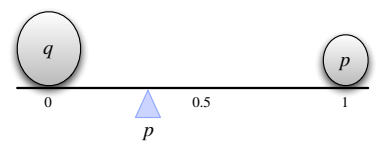
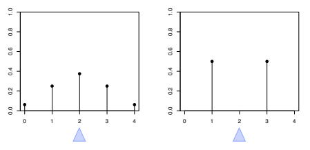
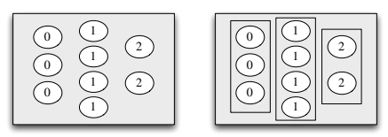
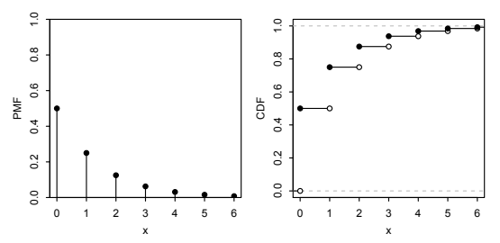
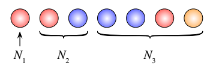
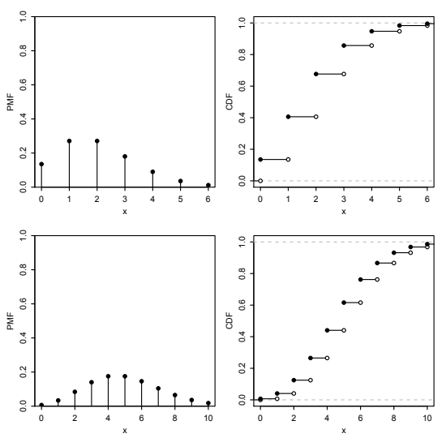
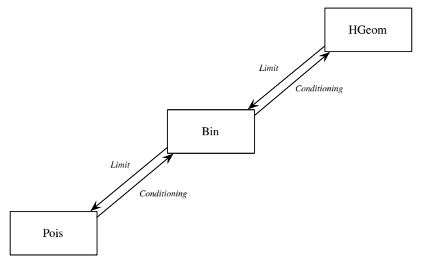
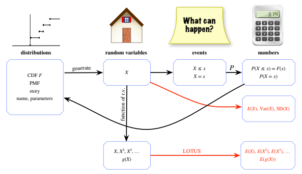

4 기댓값
4.1 기댓값의 정의
앞 장에서 확률변수의 분포를 소개했다. 분포는 확률변수가 특정한 집합에 속할 확률에 대한 완전한 정보를 제공한다. 예를 들어 확률변수가 1000을 넘을 가능성, 5와 같을 가능성, 구간 \([0,7]\)에 속할 가능성을 말할 수 있다. 하지만 이처럼 많은 확률을 다루기는 번거로울 수 있으므로, 확률변수의 ‘평균’ 값을 하나의 수로 요약하고 싶을 때가 많다.
‘평균’이라는 말은 여러 뜻으로 쓰이지만, 단연 가장 흔히 쓰이는 것은 확률변수의 평균이며 이를 기댓값이라고도 한다. 또한 통계학의 많은 부분은 세상의 변동성을 이해하는 것에 관한 것이므로, 분포가 얼마나 ‘퍼져 있는지’를 아는 것도 중요한 경우가 많다. 이는 분산과 표준편차라는 개념으로 형식화할 것이다. 앞으로 보겠지만 분산과 표준편차는 기댓값을 이용해 정의되므로, 기댓값의 쓰임은 단순히 평균을 계산하는 것을 훨씬 넘어선다.
숫자 목록 \(x_1,x_2,\ldots,x_n\)이 주어졌을 때 익숙한 평균 계산법은 그 수들을 모두 더하고 \(n\)으로 나누는 것이다. 이를 산술평균이라고 하며 다음과 같이 정의한다.
\[\bar{x}=\frac1n\sum_{j=1}^{n}x_j.\]
더 일반적으로 \(x_1,\ldots,x_n\)의 가중평균을 다음과 같이 정의할 수 있다.
\[\operatorname{weighted\text{-}mean}(x)=\sum_{j=1}^{n}x_jp_j.\]
여기서 가중치 \(p_1,\ldots,p_n\)은 미리 정한 음이 아닌 수로, 합이 1이다. 따라서 모든 \(j\)에 대해 \(p_j=1/n\)이면 가중하지 않은 평균 \(\bar{x}\)를 얻는다.
이산확률변수의 기댓값 정의는 숫자 목록의 가중평균에서 착안하되 확률을 가중치로 사용한다.
정의 4.1.1 (이산확률변수의 기댓값). 서로 다른 가능한 값들이 \(x_1,x_2,\ldots\)인 이산확률변수 \(X\)의 기댓값은 다음과 같이 정의한다.
\[E(X)=\sum_{j=1}^{\infty}x_jP(X=x_j).\]
지지집합이 유한하면 위의 무한합 대신 유한합을 사용한다. 다음과 같이 쓸 수도 있다.
\[E(X)=\sum_x\underbrace{x}_{\text{값}}\underbrace{P(X=x)}_{x\text{에서의 확률질량함수}},\]
여기서 합은 \(X\)의 지지집합 전체에 대해 취한다. 어느 경우든 지지집합에 속하지 않는 \(x\)에 대해 \(xP(X=x)=0\)이다. \(\sum_{j=1}^{\infty}|x_j|P(X=x_j)\)가 발산하면 기댓값은 정의되지 않는다. 이때 \(E(X)\)의 급수가 발산하거나, 그 값이 \(x_j\)들을 나열하는 순서에 의존하기 때문이다.
말로 표현하면 \(X\)의 기댓값은 \(X\)가 취할 수 있는 값들을 그 확률을 가중치로 삼아 구한 가중평균이다. 몇 가지 간단한 예에서 이 정의가 말이 되는지 확인해 보자.
\(X\)를 공정한 6면체 주사위를 던져 나온 눈이라 하자. 그러면 \(X\)는 \(1,2,3,4,5,6\)을 같은 확률로 취한다. 직관적으로 이 값들을 모두 더하고 6으로 나누어 평균을 구할 수 있어야 한다. 정의를 사용하면 기댓값은
\[E(X)=\frac16(1+2+\cdots+6)=3.5\]
로 예상과 같다. 이 예에서 \(X\)는 자신의 평균과 절대로 같지 않다는 점에 유의하자. 이는 어떤 나라의 가구당 평균 자녀 수가 1.8명일 수 있지만, 그렇다고 전형적인 가구에 자녀가 1.8명 있다는 뜻은 아닌 것과 비슷하다!
\(X\sim\operatorname{Bern}(p)\)이고 \(q=1-p\)라 하자. 그러면
\[E(X)=1p+0q=p.\]
이는 직관적으로도 말이 된다. 기댓값이 \(X\)의 두 가능한 값 사이에 있으면서 각각의 가능성에 따라 0과 1 사이에서 절충한 값이기 때문이다. 그림 4.1은 \(p<1/2\)인 경우를 보여 준다. 조약돌 두 개가 시소 위에서 균형을 이룬다. 시소가 균형을 이루려면 삼각형으로 표시한 받침점이 \(p\)에 있어야 하는데, 물리학 용어로 이는 질량중심이다.
빈도주의적 해석에서는 각각 성공 확률이 \(p\)인 독립적인 베르누이 시행을 많이 생각한다. ‘성공’을 1, ‘실패’를 0으로 쓰면, 장기적으로는 1의 비율이 \(p\)에 매우 가까운 숫자 목록으로 이루어진 데이터를 얻을 것이라고 예상한다. 0과 1로 이루어진 목록의 평균은 1의 비율이다.

그림 4.1: 조약돌 두 개의 질량중심은 \(X\sim\operatorname{Bern}(p)\)일 때 \(E(X)=p\)임을 보여 준다. \(q\)와 \(p\)는 각각 두 조약돌의 질량이다. \(X\)가 서로 다른 세 값 \(a_1,a_2,a_3\)을 각각 확률 \(p_1,p_2,p_3\)으로 취한다고 하자. \(X\)의 분포에서 독립적으로 \(n\)번 추출하는 시뮬레이션을 실행한다고 상상해 보자. \(n\)이 크면 \(a_1\)은 약 \(p_1n\)번, \(a_2\)는 약 \(p_2n\)번, \(a_3\)은 약 \(p_3n\)번 나올 것으로 예상한다. 이 예를 좀 더 수학적으로 다룬 형태는 10장에서 큰 수의 법칙을 공부할 때 살펴볼 것이다. 시뮬레이션 결과가 이렇게 예상한 결과에 가깝다면 그 결과의 산술평균은 대략
\[\frac{p_1n\cdot a_1+p_2n\cdot a_2+p_3n\cdot a_3}{n}=p_1a_1+p_2a_2+p_3a_3=E(X)\]
이다.
\(E(X)\)는 \(X\)의 분포에만 의존한다는 점에 유의하자. 이는 정의에서 바로 따라 나오지만, 근본적인 사실이므로 기록해 둘 가치가 있다.
명제 4.1.2. \(X\)와 \(Y\)가 같은 분포를 따르는 이산확률변수이면 \(E(X)=E(Y)\)이다. 단, 어느 한쪽이 존재한다고 가정한다.
증명. \(E(X)\)의 정의에는 \(X\)의 확률질량함수만 알면 된다. \(\blacksquare\)
위 명제의 역은 거짓이다. 기댓값은 단지 분포를 하나의 수로 요약한 것이므로 분포 전체를 지정하기에는 턱없이 부족하다. 기댓값은 ‘중심’이 어디에 있는지 나타내지만, 예를 들어 분포가 얼마나 넓게 퍼져 있는지 또는 확률변수가 양수일 가능성이 얼마나 큰지는 결정하지 않는다. 그림 4.2는 기댓값, 즉 균형점이 같은 서로 다른 확률질량함수 두 개의 예를 보여 준다.

주의 4.1.3 (확률변수를 그 기댓값으로 바꾸기). 임의의 이산확률변수 \(X\)에 대해 기댓값 \(E(X)\)는 존재한다면 하나의 수이다. 정당한 근거 없이 확률변수를 그 기댓값으로 바꾸는 것은 흔한 실수이다. \(X\)가 상수인 퇴화 경우를 제외하면 이는 수학적으로도 \(X\)는 함수이고 \(E(X)\)는 상수이므로 틀리고, 통계적으로도 \(X\)의 변동성을 무시하므로 틀리다.
표기 4.1.4. \(E(X)\)를 \(EX\)로 줄여 쓰는 경우가 많다. 마찬가지로 \(E(X^2)\)를 \(EX^2\)로, \(E(X^n)\)을 \(EX^n\)으로 줄여 쓰는 경우도 많다.
주의 4.1.5. 기댓값을 다룰 때는 연산 순서에 주의하는 것이 매우 중요하다. 위에서 말했듯이 \(EX^2\)는 확률변수 \(X^2\)의 기댓값이지 수 \(EX\)의 제곱이 아니다. 괄호가 명시적으로 달리 나타내지 않는 한, 거듭제곱한 확률변수의 기댓값을 구할 때는 먼저 거듭제곱하고 그다음 기댓값을 취한다. 예를 들어 \(E(X-1)^4\)는 \(E\bigl((X-1)^4\bigr)\)이지 \((E(X-1))^4\)가 아니다.
4.2 기댓값의 선형성
기댓값의 가장 중요한 성질은 선형성이다. 확률변수의 합의 기댓값은 각 확률변수의 기댓값을 더한 것이다.
정리 4.2.1 (기댓값의 선형성). 임의의 확률변수 \(X,Y\)와 상수 \(c\)에 대해1
\[ E(X+Y)=E(X)+E(Y),\qquad E(cX)=cE(X). \]
두 번째 등식은 상수 인수를 기댓값 밖으로 꺼낼 수 있다는 뜻이다. 이는 직관적으로 타당하고 정의로부터 쉽게 확인할 수도 있다. 첫 번째 등식 \(E(X+Y)=E(X)+E(Y)\)도 \(X\)와 \(Y\)가 독립이면 타당해 보인다. 놀라울 수 있는 점은 \(X\)와 \(Y\)가 종속이어도 이 등식이 성립한다는 것이다! 이에 대한 직관을 얻기 위해 \(X\)가 항상 \(Y\)와 같은 극단적인 경우를 생각해 보자. 그러면 \(X+Y=2X\)이고 \(E(X+Y)=E(X)+E(Y)\)의 양변이 모두 \(2E(X)\)이므로, 가장 극단적인 종속 상황에서도 선형성이 성립한다.
선형성은 이산확률변수뿐 아니라 모든 확률변수에 대해 성립하지만, 이 장에서는 이산확률변수에 대해서만 증명할 것이다. 선형성을 증명하기 전에 평균에 관한 몇 가지 기본 사실을 떠올려 보는 것이 좋다. 수의 목록, 예컨대 \((1,1,1,1,1,3,3,5)\)가 있다면 모든 값을 더한 뒤 목록의 길이로 나누어 평균을 구할 수 있다. 그러면 목록의 각 원소에 \(1/8\)의 가중치가 부여된다.
\[\frac18(1+1+1+1+1+3+3+5)=2.\]
그러나 평균을 계산하는 또 다른 방법은 1을 모두 묶고, 3을 모두 묶고, 5를 모두 묶은 뒤 1, 3, 5에 적절한 가중치를 주어 가중평균을 구하는 것이다.
\[\frac58\cdot1+\frac28\cdot3+\frac18\cdot5=2.\]
평균을 묶지 않고 계산하거나 묶어서 계산할 수 있다는 이 통찰만 있으면 선형성을 증명할 수 있다! \(X\)는 표본공간의 모든 결과 \(s\)에 실수 하나를 대응시키는 함수라는 것을 떠올려 보자. 확률변수 \(X\)는 서로 다른 여러 표본 결과에 같은 값을 부여할 수 있다. 이런 경우 기댓값의 정의는 이 결과들을 하나의 슈퍼 조약돌로 묶으며, 그 가중치 \(P(X=x)\)는 이 조약돌을 이루는 조약돌들의 가중치를 모두 더한 것이다. 그림 4.3은 \(\{0,1,2\}\)의 값을 취하는 가상의 확률변수에 대해 이 묶기 과정을 보여 준다. 따라서 기댓값의 정의는 평균을 묶어서 계산하는 방법에 해당한다.

이 정의의 장점은 표본공간으로 돌아가지 않고도 \(X\)의 분포를 직접 다룰 수 있다는 것이다. 단점은 이 정리와 같은 정리를 증명해야 할 때 나타난다. 같은 표본공간에 또 다른 확률변수 \(Y\)가 있다면, \(Y\)가 만든 슈퍼 조약돌은 \(X\)가 만든 것과 다르고 그 가중치 \(P(Y=y)\)도 다르므로 \(\sum_x xP(X=x)\)와 \(\sum_y yP(Y=y)\)를 결합하기가 어렵다.
다행히 평균을 계산하는 똑같이 타당한 다른 방법이 있음을 알고 있다. 각 조약돌의 값에 대한 가중평균을 취할 수 있다. 다시 말해 \(X(s)\)가 \(X\)가 조약돌 \(s\)에 부여하는 값이라면 다음 가중평균을 취할 수 있다.2
\[E(X)=\sum_s X(s)P(\{s\}),\]
여기서 \(P(\{s\})\)는 조약돌 \(s\)의 가중치이다. 이것은 평균을 묶지 않고 계산하는 방법에 해당한다. 이 정의의 장점은 표본공간을 가능한 한 가장 작은 단위로 나누기 때문에, 이제 이 표본공간에 정의된 모든 확률변수에 같은 가중치 \(P(\{s\})\)를 사용한다는 점이다. \(Y\)가 또 다른 확률변수라면
\[E(Y)=\sum_sY(s)P(\{s\}).\]
\(\sum_s X(s)P(\{s\})\)와 \(\sum_sY(s)P(\{s\})\)를 결합하면
\[ \begin{aligned} E(X)+E(Y) &=\sum_sX(s)P(\{s\})+\sum_sY(s)P(\{s\})\\ &=\sum_s(X+Y)(s)P(\{s\})=E(X+Y). \end{aligned} \]
기댓값의 선형성을 이해하는 또 다른 직관은 시뮬레이션을 통한 것이다. \(X\)의 분포에서 아주 많이 시뮬레이션하면 시뮬레이션한 값들의 히스토그램은 \(X\)의 실제 확률질량함수와 매우 비슷해 보일 것이다. 특히 시뮬레이션한 값들의 산술평균은 \(E(X)\)의 실제 값에 매우 가까울 것이다. 이 수렴의 정확한 성질은 10장에서 자세히 다룰 중요한 정리인 큰 수의 법칙이 설명한다.3
\(X\)와 \(Y\)가 어떤 실험을 요약하는 확률변수라고 하자. 이 실험을 매우 큰 수 \(n\)번 수행하면서 매번 실현된 \(X\)와 \(Y\)의 값을 적는다고 하자. 실험을 반복할 때마다 \(X\)의 값, \(Y\)의 값, 그리고 이 둘을 더한 \(X+Y\)의 값을 얻는다. 그림 4.4에서 각 행은 실험의 반복 한 번을 나타낸다. 왼쪽 열에는 \(X\)의 추출값, 가운데 열에는 \(Y\)의 추출값, 오른쪽 열에는 \(X+Y\)의 추출값이 들어 있다.
| \(X\) | \(Y\) | \(X+Y\) |
|---|---|---|
| 3 | 4 | 7 |
| 2 | 2 | 4 |
| 6 | 8 | 14 |
| 10 | 23 | 33 |
| 1 | \(-3\) | \(-2\) |
| 1 | 0 | 1 |
| 5 | 9 | 14 |
| 4 | 1 | 5 |
| \(\vdots\) | \(\vdots\) | \(\vdots\) |
\[\frac1n\sum_{i=1}^n x_i+\frac1n\sum_{i=1}^n y_i=\frac1n\sum_{i=1}^n(x_i+y_i),\qquad E(X)+E(Y)=E(X+Y).\]
그림 4.4: 기댓값의 선형성을 직관적으로 보여 준다. 각 행은 실험의 반복 한 번을 나타내며, 세 열은 각각 \(X\), \(Y\), \(X+Y\)의 실현값이다. 마지막 열의 모든 수를 더하는 것은 첫 번째와 두 번째 열을 각각 더한 다음 그 두 합을 더하는 것과 같다. 따라서 마지막 열의 평균은 첫 번째 열과 두 번째 열의 평균의 합이며, 이것이 기댓값의 선형성이다.
마지막 열에 있는 모든 수의 합은 두 가지 방법으로 계산할 수 있다. 직접적인 방법은 그 열의 수를 모두 더하는 것이다. 그러나 첫 번째 열의 수를 모두 더하고 두 번째 열의 수를 모두 더한 다음 두 열의 합을 더하는 것도 똑같이 타당한 방법이다.
모든 곳에서 \(n\)으로 나누면, 다음 두 절차가 동등하다는 것이 우리가 논증한 내용이다.
- 마지막 열의 모든 수의 산술평균을 구한다. 큰 수의 법칙에 따라 이는 \(E(X+Y)\)에 매우 가깝다.
- 첫 번째 열의 산술평균과 두 번째 열의 산술평균을 각각 구한 다음 두 평균을 더한다. 큰 수의 법칙에 따라 이는 \(E(X)+E(Y)\)에 매우 가깝다.
따라서 기댓값의 선형성은 산술에 관한 단순한 사실로부터 나타난다. 단지 수들을 두 가지 순서로 더하고 있을 뿐이다! 이 논증의 어느 곳에서도 \(X\)와 \(Y\)가 독립인지에 의존하지 않았다는 점에 주목하자. 사실 그림 4.4에서 \(X\)와 \(Y\)는 종속인 것처럼 보인다. \(X\)가 크면 \(Y\)도 큰 경향이 있고, \(X\)가 작으면 \(Y\)도 작은 경향이 있다. 7장의 언어로 말하면 \(X\)와 \(Y\)는 양의 상관관계가 있다. 하지만 이러한 종속은 상관없다. \(Y\)의 추출값들을 뒤섞으면 \(X\)와 \(Y\) 사이의 종속 패턴은 완전히 바뀔 수 있지만 각 열의 합에는 아무런 영향을 주지 않는다.
선형성은 기댓값을 계산하는 데 매우 편리한 도구이며, 종종 기댓값의 정의를 아예 사용하지 않고도 계산할 수 있게 해 준다. 선형성을 이용해 이항분포와 초기하분포의 기댓값을 구해 보자.
예제 4.2.2 (이항분포의 기댓값). \(X\sim\operatorname{Bin}(n,p)\)일 때 \(E(X)\)를 두 가지 방법으로 구해 보자. 기댓값의 정의에 따라
\[E(X)=\sum_{k=0}^{n}kP(X=k)=\sum_{k=0}^{n}k\binom nk p^kq^{n-k}.\]
예제 1.5.2에서 \(k\binom nk=n\binom{n-1}{k-1}\)임을 알고 있으므로4
\[ \begin{aligned} \sum_{k=0}^{n}k\binom nk p^kq^{n-k} &=n\sum_{k=0}^{n}\binom{n-1}{k-1}p^kq^{n-k}\\ &=np\sum_{k=1}^{n}\binom{n-1}{k-1}p^{k-1}q^{n-k}\\ &=np\sum_{j=0}^{n-1}\binom{n-1}{j}p^jq^{n-1-j}=np. \end{aligned} \]
끝에서 두 번째 줄의 합은 \(\operatorname{Bin}(n-1,p)\) 확률질량함수의 합이므로 1이다. 또는 이항정리를 이용해도 된다. 따라서 \(E(X)=np\)이다.
이 증명에서는 조합론적 항등식을 기억하고 이항계수를 조작해야 했다. 기댓값의 선형성을 이용하면 같은 결과에 훨씬 짧은 경로로 도달한다. \(X\)를 독립인 \(\operatorname{Bern}(p)\) 확률변수 \(n\)개의 합으로 쓰자.
\[X=I_1+\cdots+I_n,\]
여기서 각 \(I_j\)의 기댓값은 \(E(I_j)=1p+0q=p\)이다. 선형성에 따라
\[E(X)=E(I_1)+\cdots+E(I_n)=np.\qquad\square\]
예제 4.2.3 (초기하분포의 기댓값). \(X\sim\operatorname{HGeom}(w,b,n)\)을 흰 공 \(w\)개와 검은 공 \(b\)개가 들어 있는 항아리에서 크기 \(n\)의 표본을 비복원추출했을 때 얻는 흰 공의 수로 해석하자. 이항분포에서와 마찬가지로 \(X\)를 베르누이 확률변수의 합으로 쓸 수 있다.
\[X=I_1+\cdots+I_n,\]
여기서 표본의 \(j\)번째 공이 흰색이면 \(I_j=1\)이고, 그렇지 않으면 \(I_j=0\)이다. 조건을 붙이지 않을 때 \(j\)번째로 뽑은 공이 어느 공이든 같은 가능성을 갖기 때문에, 대칭성에 따라 \(I_j\sim\operatorname{Bern}(p)\)이며 \(p=w/(w+b)\)이다.
이항분포의 경우와 달리 비복원추출이므로 \(I_j\)들은 독립이 아니다. 표본에서 어떤 공이 흰색이라는 조건 아래에서 다른 공이 흰색일 가능성은 더 낮아지기 때문이다.5 그러나 종속인 확률변수에 대해서도 선형성은 여전히 성립한다! 따라서
\[E(X)=\frac{nw}{w+b}.\qquad\square\]
선형성의 위력을 보여 주는 또 다른 예로, “더 큰 확률변수는 더 큰 기댓값을 갖는다”는 직관적인 생각을 빠르게 증명할 수 있다.
명제 4.2.4 (기댓값의 단조성). 확률 1로 \(X\ge Y\)인 확률변수 \(X,Y\)에 대해 \(E(X)\ge E(Y)\)이다. 등호는 확률 1로 \(X=Y\)일 때, 그리고 그때에만 성립한다.6
증명. 이 결과는 모든 확률변수에 성립하지만 이 장에서는 이산확률변수에 초점을 맞추므로 이산확률변수에 대해서만 증명한다. 확률변수 \(Z=X-Y\)는 확률 1로 음이 아니므로, \(E(Z)\)가 음이 아닌 항들의 합으로 정의되기 때문에 \(E(Z)\ge0\)이다. 선형성에 따라
\[E(X)-E(Y)=E(X-Y)\ge0,\]
원하는 결과를 얻는다. \(E(X)=E(Y)\)이면 선형성에 따라 \(E(Z)=0\)이기도 하다. 그러면 \(P(X=Y)=P(Z=0)=1\)이다. \(E(Z)\)를 정의하는 합에서 단 하나의 항이라도 양수이면 전체 합이 양수가 되기 때문이다. \(\blacksquare\)
4.3 기하분포와 음이항분포
이제 잘 알려진 이산분포 두 가지인 기하분포와 음이항분포를 더 소개하고 그 기댓값을 계산하자.
이야기 4.3.1 (기하분포). 성공 확률이 모두 같은 \(p\in(0,1)\)인 독립 베르누이 시행을 성공이 나올 때까지 계속한다고 하자. \(X\)를 첫 성공 시행이 나오기 전까지 실패한 횟수라 하자. 그러면 \(X\)는 모수 \(p\)인 기하분포를 따르며, 이를 \(X\sim\operatorname{Geom}(p)\)로 나타낸다. \(\square\)
예를 들어 공정한 동전을 처음으로 앞면이 나올 때까지 던진다면, 처음 앞면이 나오기 전까지 나온 뒷면의 횟수는 \(\operatorname{Geom}(1/2)\) 분포를 따른다.
이 이야기에서 기하분포의 확률질량함수를 얻으려면 베르누이 시행들을 0(실패)이 이어지다가 마지막에 1(성공)이 하나 나오는 문자열로 생각하자. 각 0의 확률은 \(q=1-p\)이고 마지막 1의 확률은 \(p\)이므로, 실패 \(k\)번 뒤에 성공이 한 번 나오는 문자열의 확률은 \(q^kp\)이다.
정리 4.3.2 (기하분포의 확률질량함수). \(X\sim\operatorname{Geom}(p)\)이면 \(X\)의 확률질량함수는
\[P(X=k)=q^kp,\qquad k=0,1,2,\ldots\]
이다. 여기서 \(q=1-p\)이다.
이는 유효한 확률질량함수이다. 등비급수를 합하면(등비급수 복습은 수학 부록 참조)
\[\sum_{k=0}^{\infty}q^kp=p\sum_{k=0}^{\infty}q^k=p\cdot\frac{1}{1-q}=1\]
이기 때문이다. 이항정리가 이항분포의 확률질량함수가 유효함을 보여 주듯, 등비급수는 기하분포의 확률질량함수가 유효함을 보여 준다! 등비급수를 이용하면 기하분포의 누적분포함수도 구할 수 있다.
정리 4.3.3 (기하분포의 누적분포함수). \(X\sim\operatorname{Geom}(p)\)이면 \(X\)의 누적분포함수는
\[F(x)=\begin{cases}1-q^{\lfloor x\rfloor+1},&x\ge0,\\0,&x<0,\end{cases}\]
이다. 여기서 \(q=1-p\)이고 \(\lfloor x\rfloor\)는 \(x\) 이하인 가장 큰 정수이다.
증명. \(X\)의 누적분포함수를 \(F\)라 하자. 먼저 \(x<0\)인 경우, 다음으로 \(x\)가 음이 아닌 정수인 경우, 마지막으로 \(x\)가 음이 아닌 실수인 경우에 \(F(x)\)를 구한다. \(X\)는 음수가 될 수 없으므로 \(x<0\)이면 \(F(x)=0\)이다. \(n\)이 음이 아닌 정수이면
\[F(n)=\sum_{k=0}^{n}P(X=k)=p\sum_{k=0}^{n}q^k=p\cdot\frac{1-q^{n+1}}{1-q}=1-q^{n+1}.\]
사건 \(X\ge n+1\)은 처음 \(n+1\)번의 시행이 모두 실패라는 뜻이므로 다음과 같이 같은 결과를 얻을 수도 있다.
\[F(n)=1-P(X>n)=1-P(X\ge n+1)=1-q^{n+1}.\]
실수 \(x\ge0\)에 대해서는 \(X\)가 항상 정수 값을 취하므로
\[F(x)=P(X\le x)=P(X\le\lfloor x\rfloor).\]
예를 들어 \(P(X\le3.7)=P(X\le3)+P(3<X\le3.7)=P(X\le3)\)이다. 따라서 \(F\)는 정리에서 주장한 것과 같다. \(\blacksquare\)
그림 4.5는 0부터 6까지 \(\operatorname{Geom}(0.5)\)의 확률질량함수와 누적분포함수를 보여 준다. 모든 기하분포의 확률질량함수는 비슷한 모양을 가지며, 성공 확률 \(p\)가 클수록 확률질량함수는 더 빨리 0으로 감소한다.

주의 4.3.4 (기하분포의 표기 관례). 기하분포의 정의에는 서로 다른 관례가 있다. 어떤 자료에서는 기하분포를 성공을 포함한 전체 시행 횟수의 분포로 정의한다. 이 책에서 기하분포는 성공을 제외하고, 첫 성공 분포는 성공을 포함한다.
정의 4.3.5 (첫 성공 분포). 성공 확률이 \(p\)인 독립 베르누이 시행의 열에서 \(Y\)를 첫 성공이 나올 때까지의 시행 횟수라고 하되 성공 시행을 포함하자. 그러면 \(Y\)는 모수 \(p\)인 첫 성공 분포를 따르며, 이를 \(Y\sim\operatorname{FS}(p)\)로 나타낸다.
두 분포 사이의 변환은 쉽지만 어떤 관례를 사용하는지 주의해야 한다. \(Y\sim\operatorname{FS}(p)\)이면 \(Y-1\sim\operatorname{Geom}(p)\)이고, 다음 식으로 \(Y\)와 \(Y-1\)의 확률질량함수 사이를 변환할 수 있다.
\[P(Y=k)=P(Y-1=k-1).\]
반대로 \(X\sim\operatorname{Geom}(p)\)이면 \(X+1\sim\operatorname{FS}(p)\)이다.
예제 4.3.6 (기하분포의 기댓값). \(X\sim\operatorname{Geom}(p)\)라 하자. 정의에 따라
\[E(X)=\sum_{k=0}^{\infty}kq^kp,\]
여기서 \(q=1-p\)이다. 이 합은 다루기 불편해 보인다. 각 항에 \(k\)가 추가로 곱해져 있으므로 등비급수가 아니다. 그러나 각 항이 \(q^k\)를 \(q\)에 관해 미분한 \(kq^{k-1}\)과 비슷하다는 점에 주목하고, 다음에서 시작하자.
\[\sum_{k=0}^{\infty}q^k=\frac{1}{1-q}.\]
\(0<q<1\)이므로 이 등비급수는 수렴한다. 양변을 \(q\)에 관해 미분하면
\[\sum_{k=0}^{\infty}kq^{k-1}=\frac{1}{(1-q)^2}.\]
마지막으로 양변에 \(pq\)를 곱하면 처음에 구하려던 합을 얻는다.
\[E(X)=\sum_{k=0}^{\infty}kq^kp=pq\sum_{k=0}^{\infty}kq^{k-1}=pq\frac{1}{(1-q)^2}=\frac{q}{p}.\]
예제 9.1.8에서는 첫 단계 분석을 바탕으로 같은 결과를 이야기를 이용해 증명한다. \(X\)의 이야기 해석에서 첫 시행의 결과를 조건으로 삼는다. 첫 시행이 성공이면 \(X=0\)임을 알고, 실패이면 시행 하나를 낭비한 뒤 다시 처음 상황으로 돌아간다. \(\square\)
예제 4.3.7 (첫 성공 분포의 기댓값). \(Y\sim\operatorname{FS}(p)\)를 \(X\sim\operatorname{Geom}(p)\)에 대해 \(Y=X+1\)로 쓸 수 있으므로
\[E(Y)=E(X+1)=\frac qp+1=\frac1p.\] \(\square\)
음이항분포는 기하분포를 일반화한다. 한 번의 성공만 기다리는 대신 미리 정한 임의의 성공 횟수 \(r\)까지 기다릴 수 있다.
이야기 4.3.8 (음이항분포). 성공 확률이 \(p\)인 독립 베르누이 시행의 열에서 \(X\)가 \(r\)번째 성공이 나올 때까지의 실패 횟수이면, \(X\)는 모수 \(r,p\)인 음이항분포를 따른다고 하며 이를 \(X\sim\operatorname{NBin}(r,p)\)로 나타낸다. \(\square\)
이항분포와 음이항분포는 모두 독립 베르누이 시행에 기초하지만 중단 규칙과 세는 대상이 다르다. 이항분포는 고정된 횟수의 시행에서 성공한 횟수를 세고, 음이항분포는 고정된 횟수만큼 성공할 때까지의 실패 횟수를 센다.
이러한 유사성을 고려하면 음이항분포의 확률질량함수를 유도하는 과정이 이항분포에 대한 유도와 닮아 있다는 것은 놀랍지 않다.
정리 4.3.9 (음이항분포의 확률질량함수). \(X\sim\operatorname{NBin}(r,p)\)이면 \(X\)의 확률질량함수는
\[P(X=n)=\binom{n+r-1}{r-1}p^rq^n,\qquad n=0,1,2,\ldots,\]
이다. 여기서 \(q=1-p\)이다.
증명. 1이 성공을 나타내는 0과 1의 문자열을 생각하자. 0이 \(n\)개이고 1이 \(r\)개인 특정 문자열 하나의 확률은 \(p^rq^n\)이다. 그러한 문자열은 몇 개일까? \(r\)번째 성공에 도달하는 즉시 중단하므로 문자열은 반드시 1로 끝나야 한다. 나머지 \(n+r-1\)개의 위치 중 나머지 1이 들어갈 \(r-1\)개 위치를 선택한다. 따라서 \(r\)번째 성공 전에 정확히 \(n\)번 실패할 전체 확률은
\[P(X=n)=\binom{n+r-1}{r-1}p^rq^n,\qquad n=0,1,2,\ldots\]
이다. \(\blacksquare\)
이항 확률변수를 독립이고 동일한 분포를 따르는 베르누이 확률변수들의 합으로 나타낼 수 있듯, 음이항 확률변수는 독립이고 동일한 분포를 따르는 기하 확률변수들의 합으로 나타낼 수 있다.
정리 4.3.10. \(X\sim\operatorname{NBin}(r,p)\)를 성공 확률이 \(p\)인 독립 베르누이 시행에서 \(r\)번째 성공 전의 실패 횟수로 보자. 그러면 \(X=X_1+\cdots+X_r\)로 쓸 수 있으며 \(X_i\)들은 독립이고 동일한 \(\operatorname{Geom}(p)\) 분포를 따른다.
증명. \(X_1\)을 첫 성공까지의 실패 횟수, \(X_2\)를 첫 성공과 두 번째 성공 사이의 실패 횟수라 하고, 일반적으로 \(X_i\)를 \((i-1)\)번째 성공과 \(i\)번째 성공 사이의 실패 횟수라 하자.
기하분포의 이야기에 따라 \(X_1\sim\operatorname{Geom}(p)\)이다. 첫 성공 이후 다음 성공까지의 추가 실패 횟수도 여전히 기하분포를 따른다! 따라서 \(X_2\sim\operatorname{Geom}(p)\)이고 다른 모든 \(X_i\)도 마찬가지다. 나아가 모든 시행이 서로 독립이므로 \(X_i\)들도 서로 독립이다. \(X_i\)들을 더하면 \(r\)번째 성공 전의 전체 실패 횟수인 \(X\)를 얻는다. \(\blacksquare\)
이제 선형성을 이용하면 추가 계산 없이 음이항분포의 기댓값을 바로 얻는다.
예제 4.3.11 (음이항분포의 기댓값). \(X\sim\operatorname{NBin}(r,p)\)라 하자. 앞 정리에 따라 독립이고 동일한 \(\operatorname{Geom}(p)\) 분포를 따르는 \(X_i\)들에 대해 \(X=X_1+\cdots+X_r\)로 쓸 수 있다. 선형성에 따라
\[E(X)=E(X_1)+\cdots+E(X_r)=r\cdot\frac qp.\] \(\square\)
다음 예는 확률론의 유명한 문제이자 기하분포와 첫 성공 분포의 유익한 응용이다. 보통 쿠폰을 수집하는 문제로 제시되므로 그런 이름이 붙었지만, 여기서는 쿠폰 대신 장난감을 사용한다.
예제 4.3.12 (쿠폰 수집가). 장난감 종류가 \(n\)가지 있고, 모든 종류를 하나씩 모으는 것을 목표로 장난감을 하나씩 수집한다고 하자. 장난감을 수집할 때 그 종류는 무작위이다. 예를 들어 시리얼 상자나 패스트푸드점의 어린이 식사에 들어 있는 장난감이 그런 경우가 있다. 장난감을 수집할 때마다 \(n\)가지 중 어떤 종류든 같은 가능성으로 나온다고 가정하자.7 모든 종류를 모을 때까지 필요한 장난감 수의 기댓값은 얼마인가?
풀이. 필요한 장난감 수를 \(N\)이라 하면 구하려는 값은 \(E(N)\)이다. 선형성을 적용할 수 있도록 \(N\)을 더 단순한 확률변수의 합으로 분해하는 전략을 쓰자. 즉
\[N=N_1+N_2+\cdots+N_n\]
으로 쓴다. 여기서 \(N_1\)은 이전에 본 적 없는 첫 번째 장난감 종류가 나올 때까지의 장난감 수이다. 첫 장난감은 항상 새로운 종류이므로 이 값은 언제나 1이다. \(N_2\)는 이전에 본 적 없는 두 번째 장난감 종류가 나올 때까지 추가로 필요한 장난감 수이고, 나머지도 마찬가지다. 그림 4.6은 장난감 종류가 \(n=3\)가지일 때 이 정의를 보여 준다.

첫 성공 분포의 이야기에 따라 \(N_2\sim\operatorname{FS}((n-1)/n)\)이다. 첫 장난감 종류를 모은 후 이미 가진 종류와 같은 장난감을 얻을 가능성은 \(1/n\)(실패), 새로운 것을 얻을 가능성은 \((n-1)/n\)(성공)이기 때문이다. 마찬가지로 세 번째 새 장난감 종류가 나올 때까지 추가로 필요한 장난감 수 \(N_3\)는 \(\operatorname{FS}((n-2)/n)\) 분포를 따른다. 일반적으로
\[N_j\sim\operatorname{FS}\!\left(\frac{n-j+1}{n}\right).\]
선형성에 따라
\[\begin{aligned} E(N)&=E(N_1)+E(N_2)+E(N_3)+\cdots+E(N_n)\\ &=1+\frac{n}{n-1}+\frac{n}{n-2}+\cdots+n\\ &=n\sum_{j=1}^n\frac1j. \end{aligned}\]
\(n\)이 크면 이 값은 \(n(\log n+0.577)\)에 매우 가깝다.
이 예제를 떠나기 전에 음이항분포를 독립이고 동일한 분포를 따르는 기하 확률변수들의 합으로 나타낸 정리 4.3.10의 증명과 연결해 보자. 두 문제 모두 지정된 횟수만큼 성공하기를 기다리며, 성공 사이의 간격을 생각하는 방식으로 접근한다. 두 가지 큰 차이가 있다.
- 정리 4.3.10에서는 성공 자체를 제외하므로 두 성공 사이의 실패 횟수가 기하분포를 따른다. 쿠폰 수집가 문제에서는 장난감의 전체 수를 세고 싶으므로 성공을 포함하며, 따라서 대신 첫 성공 확률변수를 얻는다.
- 정리 4.3.10에서는 매 시행의 성공 확률이 변하지 않으므로 전체 실패 횟수는 독립이고 동일한 분포를 따르는 기하 확률변수들의 합이다. 쿠폰 수집가 문제에서는 이전에 본 적 없는 새 장난감 종류를 찾기가 점점 어려워지므로 성공할 때마다 성공 확률이 감소한다. 따라서 \(N_j\)들은 서로 독립이지만 같은 분포를 따르지는 않는다. \(\square\)
주의 4.3.13 (확률변수의 비선형 함수의 기댓값). 기댓값은 선형이지만 일반적으로 임의의 함수 \(g\)에 대해 \(E(g(X))=g(E(X))\)가 성립하지는 않는다. \(g\)가 선형이 아닐 때는 \(E\)를 함부로 옮기지 않도록 주의해야 한다. 다음 예는 \(E(g(X))\)와 \(g(E(X))\)가 매우 다른 상황을 보여 준다.
예제 4.3.14 (상트페테르부르크의 역설). 부유한 낯선 사람이 다음 게임을 함께 하자고 제안한다고 하자. 공정한 동전을 처음으로 앞면이 나올 때까지 던진다. 게임이 1라운드 지속되면 2달러, 2라운드면 4달러, 3라운드면 8달러를 받고, 일반적으로 \(n\)라운드 지속되면 \(2^n\)달러를 받는다. 이 게임의 공정한 가치는 얼마인가? 즉 지급액의 기댓값은 얼마인가? 이 게임을 한 번 하기 위해 얼마까지 기꺼이 지불하겠는가?
풀이. 게임에서 따는 금액을 \(X\)라 하자. 정의에 따라 \(X=2^N\)이며, \(N\)은 게임이 지속된 라운드 수이다. 그러면 \(X\)는 확률 \(1/2\)로 2, 확률 \(1/4\)로 4, 확률 \(1/8\)로 8 등의 값을 가지므로
\[E(X)=\frac12\cdot2+\frac14\cdot4+\frac18\cdot8+\cdots=\infty.\]
당첨금의 기댓값이 무한하다!8 반면 게임이 지속되는 라운드 수 \(N\)은 처음으로 앞면이 나올 때까지 동전을 던진 횟수이므로 \(N\sim\operatorname{FS}(1/2)\)이고 \(E(N)=2\)이다. 따라서 \(E(2^N)=\infty\)인 반면 \(2^{E(N)}=4\)이다. 무한대는 결코 4와 같지 않으므로 이는 \(g\)가 비선형일 때 \(E(g(X))\)와 \(g(E(X))\)를 혼동하는 위험을 보여 준다.
이 게임의 지급액에 대한 기댓값은 무한하지만, 대부분의 사람은 게임을 하기 위해 많은 금액을 기꺼이 지불하지는 않을 것이므로(돈을 잃어도 감당할 수 있더라도) 이 문제는 흔히 역설로 여겨진다. 한 가지 설명은 현실 세계의 돈이 유한하다는 것이다. 게임이 40라운드보다 더 오래 지속되면 부유한 낯선 사람이 국외로 도망가서 아무것도 받지 못한다고 하자. \(2^{40}\approx1.1\times10^{12}\)이므로 여전히 1조 달러 이상을 벌 가능성이 있으며, 어쨌든 게임이 40라운드보다 더 오래 지속될 가능성은 엄청나게 낮다. 하지만 이 상황에서 기댓값은
\[E(X)=\sum_{n=1}^{40}\frac1{2^n}\cdot2^n+\sum_{n=41}^{\infty}\frac1{2^n}\cdot0=40.\]
이처럼 크게 감소하는 이유가 부유한 낯선 사람이 국외로 도망갈지도 모르기 때문인가? 대신 낯선 사람이 당첨금의 상한을 \(2^{40}\)으로 정한다고 하자. 그러면 게임이 40라운드보다 오래 지속되더라도 빈손으로 돌아가는 대신 이 금액을 받는다. 이제 기댓값은
\[E(X)=\sum_{n=1}^{40}\frac1{2^n}\cdot2^n+\sum_{n=41}^{\infty}\frac1{2^n}\cdot2^{40}=40+1=41,\]
즉 앞 상황보다 불과 1달러 증가한다. 상트페테르부르크 역설의 \(\infty\)는 매우 드문 사건에서 엄청나게 큰 지급액을 받는 무한한 ‘꼬리’ 때문에 나타난다. 어느 지점에서 이 꼬리를 잘라 내는 것은 현실적으로 타당하며, 게임의 기댓값을 극적으로 줄인다. \(\square\)
4.4 지시확률변수와 근본적인 연결
이 절은 지시확률변수에 할애한다. 지시확률변수는 앞 장에서 이미 만났지만, 여기서는 훨씬 자세히 다룬다. 특히 지시확률변수가 기댓값을 계산하는 데 매우 유용한 도구임을 보일 것이다.
앞 장에서 사건 \(A\)의 지시확률변수 \(I_A\)(또는 \(I(A)\))는 \(A\)가 발생하면 1이고 그렇지 않으면 0으로 정의되었다. 따라서 \(I_A\)는 ‘\(A\)가 발생한다’를 성공으로, ‘\(A\)가 발생하지 않는다’를 실패로 정의한 베르누이 확률변수이다. 지시확률변수의 유용한 성질 몇 가지를 아래에 정리한다.
정리 4.4.1 (지시확률변수의 성질). \(A\)와 \(B\)를 사건이라 하자. 그러면 다음 성질이 성립한다.
- 임의의 양의 정수 \(k\)에 대해 \((I_A)^k=I_A\).
- \(I_{A^c}=1-I_A\).
- \(I_{A\cap B}=I_AI_B\).
- \(I_{A\cup B}=I_A+I_B-I_AI_B\).
증명. 임의의 양의 정수 \(k\)에 대해 \(0^k=0\)이고 \(1^k=1\)이므로 성질 1이 성립한다. \(1-I_A\)는 \(A\)가 발생하지 않으면 1이고 발생하면 0이므로 성질 2가 성립한다. \(I_AI_B\)는 \(I_A\)와 \(I_B\)가 모두 1이면 1이고 그렇지 않으면 0이므로 성질 3이 성립한다. 성질 4는 다음과 같이 성립한다.
\[ I_{A\cup B}=1-I_{A^c\cap B^c}=1-I_{A^c}I_{B^c} =1-(1-I_A)(1-I_B)=I_A+I_B-I_AI_B.\qquad\blacksquare \]
지시확률변수는 확률과 기댓값 사이를 연결한다. 우리는 이 사실을 근본적인 연결이라고 부른다.
정리 4.4.2 (확률과 기댓값 사이의 근본적인 연결). 사건과 지시확률변수 사이에는 일대일 대응이 있으며, 사건 \(A\)의 확률은 그 지시확률변수 \(I_A\)의 기댓값이다.
\[P(A)=E(I_A).\]
증명. 임의의 사건 \(A\)에 대해 지시확률변수 \(I_A\)가 있다. \(A\)는 \(I_A\)를 유일하게 결정하고 그 역도 성립하므로 이는 일대일 대응이다. \(I_A\)에서 \(A\)를 다시 얻으려면 \(A=\{s\in S:I_A(s)=1\}\)이라는 사실을 이용하면 된다. \(p=P(A)\)일 때 \(I_A\sim\operatorname{Bern}(p)\)이므로 \(E(I_A)=P(A)\)이다. \(\blacksquare\)
근본적인 연결은 사건을 그 지시확률변수와 연결하며, 임의의 확률을 기댓값으로 표현할 수 있게 해 준다. 그 예로 지시확률변수를 이용하여 포함배제와 그와 관련된 불 부등식 또는 보네페로니 부등식이라는 부등식을 간단히 증명하겠다.
예제 4.4.3 (불, 보네페로니, 포함배제). \(A_1,A_2,\ldots,A_n\)을 사건이라 하자. 다음에 주목하자.
\[I(A_1\cup\cdots\cup A_n)\le I(A_1)+\cdots+I(A_n).\]
좌변이 0이면 이는 즉시 성립하고, 좌변이 1이면 우변의 항 중 적어도 하나는 1이어야 하기 때문이다. 양변의 기댓값을 취하고 선형성과 근본적인 연결을 이용하면
\[P(A_1\cup\cdots\cup A_n)\le P(A_1)+\cdots+P(A_n)\]
을 얻는다. 이를 불 부등식 또는 보네페로니 부등식이라 한다. \(n=2\)인 경우의 포함배제를 증명하려면 정리 4.4.1의 성질 4의 양변에 기댓값을 취하면 된다. 일반적인 \(n\)에 대해서는 지시확률변수의 성질을 다음과 같이 이용할 수 있다.
\[ \begin{aligned} 1-I(A_1\cup\cdots\cup A_n) &=I(A_1^c\cap\cdots\cap A_n^c)\\ &=(1-I(A_1))\cdots(1-I(A_n))\\ &=1-\sum_i I(A_i)+\sum_{i<j}I(A_i)I(A_j)-\cdots +(-1)^nI(A_1)\cdots I(A_n). \end{aligned} \]
양변의 기댓값을 취하면 근본적인 연결에 의해 포함배제정리를 증명한 것이다. \(\square\)
반대로 근본적인 연결은 많은 기댓값 문제에서도 매우 유용하다. 분포를 모르는 복잡한 이산확률변수를 매우 단순한 지시확률변수의 합으로 표현할 수 있는 경우가 많다. 근본적인 연결로 각 지시확률변수의 기댓값을 구한 다음 선형성을 이용하면 원래 확률변수의 기댓값을 얻는다. 이 전략은 매우 유용하고 활용 범위도 넓다. 사실 우리는 이 장 앞부분에서 이항분포와 초기하분포의 기댓값을 유도할 때 이미 이를 사용했다!
이 전략을 적용할 수 있는 문제를 알아보고 지시확률변수를 정의하는 데는 연습이 필요하므로, 많은 예를 살펴보고 많은 문제를 푸는 것이 중요하다. ‘[명사]의 수’를 세는 확률변수에 이 전략을 적용할 때는 가능한 [명사] 각각에 대한 지시확률변수를 만들어야 한다. 이 [명사]는 사람, 장소 또는 사물일 수 있으며, 세 종류 모두에 대한 예를 볼 것이다.
먼저 1장에서 보았던 두 문제, 드 몽모르의 짝맞추기 문제와 생일 문제를 다시 살펴보자.
예제 4.4.4 (짝맞추기 문제 계속). 1부터 \(n\)까지 번호가 붙은 카드 \(n\)장을 잘 섞어 놓았다. 카드 더미에서 카드의 위치와 그 카드의 번호가 같으면 일치라고 한다. 일치한 카드의 수를 \(X\)라 할 때 \(E(X)\)를 구하라.
풀이. 먼저 \(X\)가 우리가 공부한 이름 붙은 분포 중 하나를 따를 수 있는지 확인해 보자. \(X\)의 값은 0과 \(n\) 사이의 정수여야 하므로 이항분포와 초기하분포만이 후보이다. 그러나 어느 쪽도 올바른 지지집합을 갖지 않는다. \(X\)는 \(n-1\) 값을 가질 수 없기 때문이다. 카드 \(n-1\)장이 일치하면 \(n\)번째 카드도 반드시 일치한다. 따라서 \(X\)는 우리가 공부한 이름 붙은 분포를 따르지 않지만, 지시확률변수로 평균을 쉽게 구할 수 있다.9 \(X=I_1+I_2+\cdots+I_n\)으로 쓰자. 여기서
\[ I_j=\begin{cases} 1,&\text{더미의 }j\text{번째 카드가 일치하면},\\ 0,&\text{그렇지 않으면}. \end{cases} \]
다시 말해 \(I_j\)는 더미의 \(j\)번째 카드가 일치하는 사건 \(A_j\)의 지시확률변수이다. 카드가 일치하면 각 \(I_j\)가 세어지도록 ‘손을 든다’고 상상할 수 있다. 올라간 손을 모두 더하면 일치한 카드의 전체 수 \(X\)를 얻는다.
근본적인 연결에 따라 모든 \(j\)에 대해
\[E(I_j)=P(A_j)=\frac1n.\]
따라서 선형성에 의해
\[E(X)=E(I_1)+\cdots+E(I_n)=n\cdot\frac1n=1.\]
일치한 카드 수의 기댓값은 \(n\)에 관계없이 1이다. \(I_j\)들은 복잡하게 종속되어 있어 \(X\)의 분포가 이항분포도 초기하분포도 아니지만, 선형성은 여전히 성립한다. \(\square\)
예제 4.4.5 (서로 다른 생일과 생일 일치). \(n\)명의 집단에서 생일에 대한 통상적인 가정 아래, 이들 사이의 서로 다른 생일의 개수, 즉 적어도 한 사람이 태어난 날짜 수의 기댓값은 얼마인가? 생일이 일치하는 쌍, 즉 생일이 같은 사람의 쌍의 개수의 기댓값은 얼마인가?
풀이. 서로 다른 생일의 수를 \(X\)라 하고 \(X=I_1+\cdots+I_{365}\)로 쓰자. 여기서
\[ I_j=\begin{cases} 1,&j\text{번째 날에 태어난 사람이 있으면},\\ 0,&\text{그렇지 않으면}. \end{cases} \]
\(X\)는 적어도 한 사람이 태어난 연중 날짜 수를 세므로, 연중 날짜 각각에 대한 지시확률변수를 만든다. 근본적인 연결에 따라 모든 \(j\)에 대해
\[ E(I_j)=P(j\text{번째 날에 태어난 사람이 있음}) =1-P(j\text{번째 날에 태어난 사람이 없음}) =1-\left(\frac{364}{365}\right)^n. \]
그러면 선형성에 의해
\[E(X)=365\left(1-\left(\frac{364}{365}\right)^n\right).\]
이제 생일이 일치하는 쌍의 수를 \(Y\)라 하자. 사람들에게 \(1,2,\ldots,n\)이라는 번호를 붙이고, \(\binom n2\)개의 사람 쌍을 어떤 정해진 순서로 배열하자. 그러면
\[Y=J_1+\cdots+J_{\binom n2}\]
로 쓸 수 있다. 여기서 \(J_i\)는 \(i\)번째 사람 쌍의 생일이 같은 사건의 지시확률변수이다. \(Y\)는 생일이 같은 사람 쌍의 수를 세므로 사람 쌍 각각에 대한 지시확률변수를 만든다. 임의의 두 사람의 생일이 같을 확률은 \(1/365\)이므로 근본적인 연결과 선형성에 따라 다시
\[E(Y)=\frac{\binom n2}{365}\]
를 얻는다. \(\square\)
마지막 두 예에서는 근본적인 연결과 선형성 외에도 기본적인 형태의 대칭성을 이용해 계산을 크게 단순화했다. 각각의 지시확률변수 합에서 모든 지시확률변수의 기댓값이 같았다. 예를 들어 짝맞추기 문제에서 \(j\)번째 카드가 일치할 확률은 \(j\)에 의존하지 않으므로, 첫 번째 지시확률변수의 기댓값에 \(n\)을 곱하면 된다.
다른 형태의 대칭성도 사용할 수 있다면 매우 유용하다. 다음 두 예에서는 모든 순열이 같은 가능성을 갖는다는 사실에서 나오는 대칭성을 보여 준다. 대칭성, 선형성, 근본적인 연결을 함께 사용해 겉보기에 매우 어려운 문제를 다룰 수 있게 하는 방식에 주목하자.
예제 4.4.6 (퍼트넘 문제). \(1,2,\ldots,n\)의 순열 \(a_1,a_2,\ldots,a_n\)에서 \(a_j>a_{j-1}\)이고 \(a_j>a_{j+1}\)이면 위치 \(j\)에 국소 최댓값이 있다고 한다. 단 \(2\le j\le n-1\)이다. \(j=1\)에서는 \(a_1>a_2\)를, \(j=n\)에서는 \(a_n>a_{n-1}\)을 국소 최댓값이 있다는 뜻으로 한다. 예를 들어 \(4,2,5,3,6,1\)에는 위치 1, 3, 5에 세 개의 국소 최댓값이 있다. 2006년 퍼트넘 시험(중앙값이 흔히 0점일 정도로 어렵기로 유명한 수학 경시대회)에는 다음 문제가 나왔다. \(n\ge2\)일 때 \(1,2,\ldots,n\)의 무작위 순열에서 국소 최댓값의 평균 개수는 얼마인가? \(n!\)개의 모든 순열은 같은 가능성을 갖는다.
풀이. 이 문제는 지시확률변수, 대칭성, 근본적인 연결을 사용하면 빠르게 풀 수 있다. \(I_1,\ldots,I_n\)을 지시확률변수라 하되, 위치 \(j\)에 국소 최댓값이 있으면 \(I_j=1\), 그렇지 않으면 \(I_j=0\)이라 하자. 우리가 관심을 갖는 것은 \(\sum_{j=1}^n I_j\)의 기댓값이다. \(1<j<n\)일 때 위치 \(j\)에 국소 최댓값이 있다는 것은 \(a_j\)가 \(a_{j-1},a_j,a_{j+1}\) 중 가장 크다는 것과 같고, 모든 순서의 가능성이 같으므로 그 확률은 \(1/3\)이다. 따라서 \(E(I_j)=1/3\)이다. \(j=1\) 또는 \(j=n\)이면 이웃이 하나뿐이므로 \(E(I_j)=1/2\)이다. 따라서 선형성에 의해
\[E\left(\sum_{j=1}^n I_j\right)=2\cdot\frac12+(n-2)\cdot\frac13=\frac{n+1}{3}.\qquad\square\]
다음 예에서는 음초기하분포를 소개하고 아래 표를 완성한다. 이 표는 네 가지 표본추출 방식에 대한 분포를 보여 준다. 복원추출 또는 비복원추출을 할 수 있고, 중단 규칙으로 추출 횟수를 고정하거나 성공 횟수를 고정할 수 있다.
| 복원추출 | 비복원추출 | |
|---|---|---|
| 시행 횟수 고정 | 이항분포 | 초기하분포 |
| 성공 횟수 고정 | 음이항분포 | 음초기하분포 |
예제 4.4.7 (음초기하분포). 항아리에 흰 공 \(w\)개와 검은 공 \(b\)개가 있다. 흰 공을 \(r\)개 얻을 때까지 공을 한 번에 하나씩 무작위로 비복원추출한다. \(r\)번째 흰 공을 뽑기 전에 뽑은 검은 공의 수는 모수가 \(w,b,r\)인 음초기하분포를 따른다. 이 분포를 \(\operatorname{NHGeom}(w,b,r)\)로 나타낸다. 물론 \(r\le w\)라고 가정한다. 예를 들어 카드 한 벌을 섞어 한 번에 한 장씩 나눠 줄 때 첫 번째 에이스가 나오기 전에 나눠 준 카드의 수는 \(\operatorname{NHGeom}(4,48,1)\)을 따른다.
다른 예로, 한 대학에 좋은 수업 \(g\)개와 나쁜 수업 \(b\)개가 있으며(‘좋다’와 ‘나쁘다’는 어떤 정의에 따른다), 한 학생이 들을 만한 좋은 수업 4개를 찾고자 한다고 하자. 어떤 수업이 좋은지 전혀 모르는 학생은 수업을 하나씩 무작위로 들어 보고 좋은 수업을 4개 얻으면 멈춘다. 그러면 학생이 들어 보는 나쁜 수업의 수는 \(\operatorname{NHGeom}(g,b,4)\)를 따른다.
\(X\sim\operatorname{NHGeom}(w,b,r)\)의 확률질량함수를 구하기 위해 항아리 상황에서 \(X=k\)는 \((r+k)\)번째로 고른 공이 흰색이고 처음 \(r+k-1\)개 가운데 정확히 \(r-1\)개가 흰색이라는 뜻임을 이용한다. 따라서 \(k=0,1,\ldots,b\)에 대해
\[ P(X=k)= \frac{\binom{w}{r-1}\binom{b}{k}}{\binom{w+b}{r+k-1}} \cdot\frac{w-r+1}{w+b-r-k+1} \]
을 얻고, 그 밖의 경우에는 0이다.
또는 항아리가 빌 때까지 계속 공을 뽑는다고 상상할 수 있다. \(r\)번째 흰 공을 얻은 뒤 계속 뽑는지 여부는 \(X\)에 영향을 주지 않으므로 이는 타당하다. \(w+b\)개의 공이 뽑힐 순서에 따라 무작위 순서로 줄지어 있다고 생각하자.
그러면 \(X=k\)는 처음 \(r+k-1\)개 공 중 정확히 \(r-1\)개가 흰색이고, 다음 공이 흰색이며, 마지막 \(w+b-r-k\)개 공 중 정확히 \(w-r\)개가 흰색이라는 뜻이다. 줄에서 흰 공의 위치를 정하는 \(\binom{w+b}{w}\)가지 가능성은 모두 같은 가능성을 갖는다. 따라서 확률의 고전적 정의에 따라 확률질량함수를 다음처럼 조금 더 간단하게 표현할 수 있다.
\[ P(X=k)=\frac{\binom{r+k-1}{r-1}\binom{w+b-r-k}{w-r}}{\binom{w+b}{w}}, \qquad k=0,1,\ldots,b, \]
그 밖의 경우에는 0이다.
기댓값의 정의에서 직접 음초기하 확률변수의 기댓값을 구하면 복잡한 합이 나온다. 그러나 답은 매우 간단하다. \(X\sim\operatorname{NHGeom}(w,b,r)\)이면 \(E(X)=rb/(w+1)\)이다.
지시확률변수를 사용해 이를 증명해 보자. 위에서 설명했듯이 항아리가 빌 때까지 계속 공을 뽑는다고 가정할 수 있다. 먼저 \(r=1\)인 경우를 생각하자. 검은 공에 \(1,2,\ldots,b\)라는 번호를 붙이고, 흰 공을 하나도 뽑기 전에 검은 공 \(j\)를 뽑는 사건의 지시확률변수를 \(I_j\)라 하자. 그러면 \(P(I_j=1)=1/(w+1)\)이다. 다른 공들은 무시하고 검은 공 \(j\)와 흰 공들이 뽑히는 순서를 나열하면, 대칭성에 의해 모든 순서의 가능성이 같고, \(I_j=1\)이라는 것은 이 목록에서 검은 공 \(j\)가 첫 번째라는 것과 같기 때문이다. 따라서 선형성에 의해
\[E\left(\sum_{j=1}^b I_j\right)=\sum_{j=1}^b E(I_j)=\frac b{w+1}.\]
타당성 점검: 이 답은 \(b\)가 커질수록 증가하고 \(w\)가 커질수록 감소하며 극단적인 경우 \(b=0\)(검은 공을 뽑지 않음)과 \(w=0\)(존재하지 않는 흰 공을 뽑기 전에 검은 공을 모두 소진함)에서도 올바르므로 말이 된다.10 또 \(b/(w+1)\)은 \(\operatorname{Geom}(w/(w+b))\) 확률변수의 기댓값 \(b/w\)와 비슷하지만 엄격히 작다는 점에 유의하자.11 복원추출보다 비복원추출에서 기대 대기 시간이 더 짧다는 것은 납득할 만하다. 마찬가지로 잃어버린 물건을 찾을 때는 이미 없다고 확인한 장소를 반복해서 살펴보며 시간을 낭비하기보다 확인할 장소를 비복원으로 선택하는 것이 더 합리적이다.
일반적인 \(r\)에 대해 \(X=X_1+X_2+\cdots+X_r\)로 쓰자. 여기서 \(X_1\)은 첫 번째 흰 공 이전의 검은 공의 수, \(X_2\)는 첫 번째 흰 공 이후이면서 두 번째 흰 공 이전의 검은 공의 수이며, 나머지도 같은 방식이다. \(r=1\)인 경우에 쓴 것과 본질적으로 같은 논증에 의해 각 \(j\)에 대해 \(E(X_j)=b/(w+1)\)이다. 따라서 선형성에 의해 \(E(X)=rb/(w+1)\)이다. \(\square\)
지시확률변수와 밀접하게 관련된 것으로 음이 아닌 정수값을 갖는 확률변수 \(X\)의 기댓값을 표현하는 다른 방법이 있다. \(X\)의 값에 \(X\)의 확률질량함숫값을 곱하여 더하는 대신, 음이 아닌 정수 \(n\)에 대해 \(P(X>n)\) 꼴의 확률(이를 꼬리확률이라고 한다)을 더할 수 있다.
정리 4.4.8 (생존함수를 이용한 기댓값). \(X\)를 음이 아닌 정수값 확률변수라 하자. \(F\)를 \(X\)의 누적분포함수라 하고 \(G(x)=1-F(x)=P(X>x)\)라 하자. 함수 \(G\)를 \(X\)의 생존함수라고 한다. 그러면
\[E(X)=\sum_{n=0}^{\infty}G(n).\]
즉 생존함수를 합하여, 다시 말하면 분포의 꼬리확률을 합하여 \(X\)의 기댓값을 얻을 수 있다.12
증명. 간단히 하기 위해 \(X\)가 유계인 경우에만 결과를 증명하겠다. 즉 \(X\)가 항상 어떤 음이 아닌 정수 \(b\) 이하라고 하자. \(X\)를 지시확률변수의 합 \(X=I_1+I_2+\cdots+I_b\)로 나타낼 수 있다. 여기서 \(I_n=I(X\ge n)\)이다. 예를 들어 \(X=7\)이면 \(I_1\)부터 \(I_7\)까지는 1이고 나머지 지시확률변수는 0이다.
선형성과 근본적인 연결, 그리고 \(\{X\ge k\}\)가 \(\{X>k-1\}\)과 같은 사건이라는 사실을 이용하면
\[ E(X)=\sum_{k=1}^{b}E(I_k) =\sum_{k=1}^{b}P(X\ge k) =\sum_{n=0}^{b-1}P(X>n) =\sum_{n=0}^{\infty}G(n).\qquad\blacksquare \]
간단한 예로, 위의 결과를 이용해 기하 확률변수의 평균을 다른 방법으로 유도하자.
예제 4.4.9 (기하분포의 기댓값 다시 구하기). \(X\sim\operatorname{Geom}(p)\)이고 \(q=1-p\)라 하자. 기하분포의 이야기에 따르면 \(\{X>n\}\)은 처음 \(n+1\)번의 시행이 모두 실패하는 사건이다. 따라서 정리 4.4.8에 의해
\[ E(X)=\sum_{n=0}^{\infty}P(X>n) =\sum_{n=0}^{\infty}q^{n+1} =\frac q{1-q}=\frac qp, \]
이는 기하분포의 평균에 대해 이미 알고 있던 결과를 확인해 준다. \(\square\)
4.5 무의식적 통계학자의 법칙 (LOTUS)
상트페테르부르크의 역설에서 보았듯이 \(g\)가 선형이 아니라면 일반적으로 \(E(g(X))\)는 \(g(E(X))\)와 같지 않다. 그렇다면 \(E(g(X))\)를 올바르게 계산하려면 어떻게 해야 할까? \(g(X)\)는 확률변수이므로, 한 가지 방법은 먼저 \(g(X)\)의 분포를 구한 다음 기댓값의 정의를 사용하는 것이다. 아마 놀랍게도, \(g(X)\)의 분포를 먼저 구하지 않고도 \(X\)의 분포를 이용하여 \(E(g(X))\)를 직접 구할 수 있다. 이는 무의식적 통계학자의 법칙(law of the unconscious statistician, LOTUS)을 이용해 이루어진다.
정리 4.5.1 (LOTUS). \(X\)가 이산확률변수이고 \(g\)가 \(\mathbb R\)에서 \(\mathbb R\)로 가는 함수이면,
\[ E(g(X))=\sum_x g(x)P(X=x), \]
여기서 합은 \(X\)가 취할 수 있는 모든 값에 대해 계산한다.13
이는 \(X\)의 확률질량함수인 \(P(X=x)\)만 알면 \(g(X)\)의 기댓값을 구할 수 있다는 뜻이다. \(g(X)\)의 확률질량함수를 알 필요는 없다. 이 법칙의 이름은 \(E(X)\)에서 \(E(g(X))\)로 넘어갈 때 정의에서 \(x\)를 \(g(x)\)로 바꾸기만 하고 싶은 유혹을 느낀다는 데서 유래한다. 이렇게 바꾸는 일은 매우 쉽고 기계적으로 할 수 있으며, 아마 무의식 상태에서도 가능할 것이다. 다시 생각해 보면 이 계산에 \(g(X)\)의 분포를 구할 필요가 없다는 것이 사실이기에는 너무 좋아 보일 수 있지만, LOTUS는 그것이 사실임을 말해 준다.
LOTUS를 일반적으로 증명하기 전에 몇 가지 특수한 경우에서 왜 이 법칙이 성립하는지 살펴보자. \(X\)의 지지집합이 \(0,1,2,\ldots\)이고 각각의 확률이 \(p_0,p_1,p_2,\ldots\)이어서 확률질량함수가 \(P(X=n)=p_n\)이라고 하자. 그러면 \(X^3\)의 지지집합은 \(0^3,1^3,2^3,\ldots\)이고 각각의 확률은 \(p_0,p_1,p_2,\ldots\)이다. 따라서
\[ E(X)=\sum_{n=0}^{\infty}np_n,\qquad E(X^3)=\sum_{n=0}^{\infty}n^3p_n. \]
LOTUS가 주장하는 것처럼 \(E(X)\)의 식을 \(E(X^3)\)의 식으로 바꾸려면 \(p_n\) 앞의 \(n\)을 \(n^3\)으로 바꾸기만 하면 된다. 이는 함수 \(g(x)=x^3\)이 일대일이기 때문에 쉬운 예였다. 하지만 LOTUS는 훨씬 더 일반적으로 성립한다. 일반적인 \(g\)에 대해 LOTUS를 증명하는 데 필요한 핵심 통찰은 선형성을 증명할 때 사용한 것과 같다. \(g(X)\)의 기댓값을 묶지 않은 형태로 다음과 같이 쓸 수 있다.
\[ E(g(X))=\sum_s g(X(s))P(\{s\}), \]
여기서 합은 표본공간에 있는 모든 조약돌에 걸쳐 계산한다. 그런데 \(X\)가 각 조약돌에 부여하는 값에 따라 조약돌들을 묶어 큰 조약돌로 만들 수도 있다. 큰 조약돌 \(X=x\) 안에서는 \(g(X)\)가 언제나 \(g(x)\)라는 값을 취한다. 따라서14
\[ \begin{aligned} E(g(X)) &=\sum_s g(X(s))P(\{s\})\\ &=\sum_x\sum_{s:X(s)=x}g(X(s))P(\{s\})\\ &=\sum_x g(x)\sum_{s:X(s)=x}P(\{s\})\\ &=\sum_x g(x)P(X=x). \end{aligned} \]
마지막 단계에서는 \(\sum_{s:X(s)=x}P(\{s\})\)가 큰 조약돌 \(X=x\)의 무게라는 사실을 이용했다.
4.6 분산
LOTUS의 중요한 응용 중 하나는 확률변수의 분산을 구하는 것이다. 기댓값처럼 분산은 확률변수의 분포를 하나의 수로 요약한다. 기댓값이 분포의 질량중심을 알려 주는 반면, 분산은 분포가 얼마나 넓게 퍼져 있는지 알려 준다.
정의 4.6.1 (분산과 표준편차). 확률변수 \(X\)의 분산은
\[\operatorname{Var}(X)=E(X-EX)^2\]
이다. 분산의 제곱근을 표준편차(SD)라고 한다.
\[\operatorname{SD}(X)=\sqrt{\operatorname{Var}(X)}.\]
\(E(X-EX)^2\)라고 쓸 때는 확률변수 \((X-EX)^2\)의 기댓값을 뜻하며 \((E(X-EX))^2\)을 뜻하지 않는다는 점을 기억하자. 후자는 선형성에 의해 0이다.
\(X\)의 분산은 \(X\)가 평균에서 평균적으로 얼마나 떨어져 있는지 측정하지만, \(X\)와 평균 \(EX\) 사이의 차이를 그대로 평균하는 대신 그 차이의 제곱을 평균한다. 그 이유를 살펴보자. 평균으로부터의 편차의 평균인 \(E(X-EX)\)는 선형성에 따라 항상 0이다. 양의 편차와 음의 편차가 서로 상쇄되기 때문이다. 편차를 제곱하면 양의 편차와 음의 편차가 모두 전체 변동성에 기여하게 된다. 그러나 분산은 거리의 제곱을 평균한 것이므로 단위가 맞지 않는다. \(X\)의 단위가 달러이면 \(\operatorname{Var}(X)\)의 단위는 달러의 제곱이다. 원래 단위로 돌아가기 위해 제곱근을 취하면 표준편차를 얻는다.
양의 편차와 음의 편차를 모두 세면서 \(X\)와 같은 단위를 유지하는 \(E|X-EX|\)를 분산으로 정의하지 않는 이유가 궁금할 수 있다. 이러한 변동성 측도는 여러 이유로 \(E(X-EX)^2\)만큼 널리 쓰이지 않는다. 특히 절댓값 함수는 0에서 미분 가능하지 않지만 제곱 함수는 모든 곳에서 미분 가능하며 피타고라스 정리와 같은 여러 근본적인 수학적 결과에서 핵심 역할을 한다.
분산을 이와 동등하게 표현하면 \(\operatorname{Var}(X)=E(X^2)-(EX)^2\)이다. 실제 계산을 할 때는 이 공식이 다루기 더 쉬운 경우가 많다. 앞으로 반복해서 사용할 분산 공식이므로 별도의 정리로 제시한다.
정리 4.6.2. 임의의 확률변수 \(X\)에 대해15
\[\operatorname{Var}(X)=E(X^2)-(EX)^2.\]
증명. \(\mu=EX\)라 하자. \((X-\mu)^2\)을 전개하고 선형성을 이용하면 \(X\)의 분산은
\[E(X-\mu)^2=E(X^2-2\mu X+\mu^2)=E(X^2)-2\mu EX+\mu^2=E(X^2)-\mu^2.\]
\(\blacksquare\)
분산에는 다음 성질들이 있다. 앞의 두 성질은 정의로부터 쉽게 확인할 수 있고, 세 번째는 뒤의 장에서 다루며, 마지막은 설명 직후에 증명한다.
모든 상수 \(c\)에 대해 \(\operatorname{Var}(X+c)=\operatorname{Var}(X)\)이다. 직관적으로 분포를 왼쪽이나 오른쪽으로 이동하면 분포의 질량중심은 바뀌지만 퍼진 정도는 바뀌지 않아야 한다.
모든 상수 \(c\)에 대해 \(\operatorname{Var}(cX)=c^2\operatorname{Var}(X)\)이다.
\(X\)와 \(Y\)가 독립이면 \(\operatorname{Var}(X+Y)=\operatorname{Var}(X)+\operatorname{Var}(Y)\)이다. 이는 7장에서 증명하고 자세히 논의한다. \(X\)와 \(Y\)가 종속이면 일반적으로 성립하지 않는다. 예를 들어 극단적으로 \(X\)가 항상 \(Y\)와 같을 때 \(\operatorname{Var}(X)>0\)이면
\[\operatorname{Var}(X+Y)=\operatorname{Var}(2X)=4\operatorname{Var}(X)>2\operatorname{Var}(X)=\operatorname{Var}(X)+\operatorname{Var}(Y).\]
다음 성질에서 보듯 \(X\)가 거의 확실하게 상수가 아닌 한 \(\operatorname{Var}(X)>0\)이다.
\(\operatorname{Var}(X)\ge0\)이며, 어떤 상수 \(a\)에 대해 \(P(X=a)=1\)인 경우에만 등호가 성립한다. 다시 말해 분산이 0인 확률변수는 거의 확실하게 상수이며, 이를 퇴화 확률변수로 생각할 수 있다. 그 밖의 확률변수는 모두 양의 분산을 갖는다.
마지막 성질을 증명하려면 \(\operatorname{Var}(X)\)가 음이 아닌 확률변수 \((X-EX)^2\)의 기댓값이므로 \(\operatorname{Var}(X)\ge0\)임을 관찰하자. 어떤 상수 \(a\)에 대해 \(P(X=a)=1\)이면 \(E(X)=a\)이고 \(E(X^2)=a^2\)이므로 \(\operatorname{Var}(X)=0\)이다. 반대로 \(\operatorname{Var}(X)=0\)이라 하자. 그러면 \(E(X-EX)^2=0\)이므로 \((X-EX)^2=0\)일 확률은 1이다. 따라서 \(X\)가 자신의 평균과 같을 확률도 1이다.
주의 4.6.3 (분산은 선형이 아니다). 기댓값과 달리 분산은 선형이 아니다. \(\operatorname{Var}(cX)=c^2\operatorname{Var}(X)\)에서 상수는 제곱되어 나오며, 확률변수들이 종속이면 그 합의 분산이 각 분산의 합과 같지 않을 수 있다.
예제 4.6.4 (기하분포와 음이항분포의 분산). 이 예제에서는 LOTUS를 사용해 기하분포의 분산을 계산한다. 앞 절과 같이 \(q=1-p\)이다.
\(X\sim\operatorname{Geom}(p)\)라 하자. 이미 \(E(X)=q/p\)임을 알고 있다. LOTUS에 따라
\[E(X^2)=\sum_{k=0}^{\infty}k^2P(X=k)=\sum_{k=0}^{\infty}k^2pq^k=\sum_{k=1}^{\infty}k^2pq^k.\]
기댓값을 구할 때와 비슷한 전략으로 이 값을 구하겠다. 등비급수
\[\sum_{k=0}^{\infty}q^k=\frac1{1-q}\]
에서 시작해 미분한다. \(q\)에 관해 한 번 미분하면
\[\sum_{k=1}^{\infty}kq^{k-1}=\frac1{(1-q)^2}.\]
\(k=0\)인 항은 어차피 0이므로 합을 \(k=1\)부터 시작한다. 다시 미분하면 우리가 원하는 \(k^2\) 대신 \(k(k-1)\)이 나오므로, 양변에 \(q\)를 곱해 \(q\)를 다시 보충하자. 그러면
\[\sum_{k=1}^{\infty}kq^k=\frac q{(1-q)^2}.\]
이제 한 번 더 미분할 준비가 되었다.
\[\sum_{k=1}^{\infty}k^2q^{k-1}=\frac{1+q}{(1-q)^3}.\]
따라서
\[E(X^2)=\sum_{k=1}^{\infty}k^2pq^k=pq\frac{1+q}{(1-q)^3}=\frac{q(1+q)}{p^2}.\]
마지막으로
\[\operatorname{Var}(X)=E(X^2)-(EX)^2=\frac{q(1+q)}{p^2}-\left(\frac qp\right)^2=\frac q{p^2}.\]
상수를 더해 이동해도 분산은 바뀌지 않으므로 이는 첫 성공 분포의 분산이기도 하다.
정리 4.3.10에 따라 \(\operatorname{NBin}(r,p)\) 확률변수는 독립이고 동일한 분포를 따르는 \(r\)개의 \(\operatorname{Geom}(p)\) 확률변수의 합으로 나타낼 수 있고, 독립 확률변수에 대해 분산은 더해지므로 \(\operatorname{NBin}(r,p)\) 분포의 분산은 \(r\cdot q/p^2\)이다. \(\square\)
LOTUS는 모든 \(g\)에 대해 \(E(g(X))\)를 계산하는 다목적 도구이지만, 대개 복잡한 합으로 이어지므로 최후의 수단으로 사용하는 것이 좋다. 분산을 계산할 때도 다음 예처럼 우리가 믿고 쓰는 지시확률변수로 LOTUS를 대체할 수 있는 경우가 있다.
예제 4.6.5 (이항분포의 분산). 지루한 합을 피하기 위해 지시확률변수를 이용하여 \(X\sim\operatorname{Bin}(n,p)\)의 분산을 구해 보자. \(j\)번째 시행이 성공하는 사건의 지시확률변수를 \(I_j\)라 하고 \(X=I_1+I_2+\cdots+I_n\)으로 나타낸다. 각 \(I_j\)의 분산은
\[\operatorname{Var}(I_j)=E(I_j^2)-(E(I_j))^2=p-p^2=p(1-p)\]
이다. \(I_j^2=I_j\)이므로 \(E(I_j^2)=E(I_j)=p\)임을 기억하자.
\(I_j\)들은 독립이므로 분산을 더해 그 합의 분산을 구할 수 있다.
\[\operatorname{Var}(X)=\operatorname{Var}(I_1)+\cdots+\operatorname{Var}(I_n)=np(1-p).\]
다른 방법으로는 먼저 \(E\binom X2\)를 구해 \(E(X^2)\)를 찾을 수 있다. 후자가 더 복잡하게 들리지만 실제로는 더 간단하다. \(\binom X2\)가 성공한 시행들의 쌍의 개수이기 때문이다. 각 시행 쌍에 대한 지시확률변수를 만들면
\[E\binom X2=\binom n2p^2.\]
따라서
\[n(n-1)p^2=E(X(X-1))=E(X^2)-E(X)=E(X^2)-np,\]
이고, 다시 다음 결과를 얻는다.
\[\operatorname{Var}(X)=E(X^2)-(EX)^2=(n(n-1)p^2+np)-(np)^2=np(1-p).\]
연습문제 48에서는 이 전략으로 초기하분포의 분산을 구한다. \(\square\)
4.7 포아송 분포
이 장에서 소개할 마지막 이산분포는 포아송 분포이다. 포아송 분포는 이산형 데이터를 모형화할 때 매우 널리 사용된다. 이 분포의 확률질량함수, 평균과 분산을 소개한 후 그 이야기를 더 자세히 논의할 것이다.
정의 4.7.1 (포아송 분포). 확률변수 \(X\)의 확률질량함수가 다음과 같으면 \(X\)는 모수가 \(\lambda>0\)인 포아송 분포를 따른다.
\[P(X=k)=\frac{e^{-\lambda}\lambda^k}{k!},\qquad k=0,1,2,\ldots.\]
이를 \(X\sim\operatorname{Pois}(\lambda)\)로 쓴다. 테일러 급수 \(\sum_{k=0}^{\infty}\lambda^k/k!=e^\lambda\)에 의해 이는 유효한 확률질량함수이다.
예제 4.7.2 (포아송 분포의 기댓값과 분산). \(X\sim\operatorname{Pois}(\lambda)\)라 하자. 평균과 분산이 모두 \(\lambda\)임을 보일 것이다. 평균에 대해
\[ \begin{aligned} E(X)&=e^{-\lambda}\sum_{k=0}^{\infty}\frac{k\lambda^k}{k!} =e^{-\lambda}\sum_{k=1}^{\infty}\frac{k\lambda^k}{k!}\\ &=\lambda e^{-\lambda}\sum_{k=1}^{\infty}\frac{\lambda^{k-1}}{(k-1)!} =\lambda e^{-\lambda}e^\lambda=\lambda. \end{aligned} \]
먼저 \(k=0\)인 항이 0이므로 이를 제거했다. 그런 다음 \(\lambda\)를 합 밖으로 꺼내어 합 안에 \(e^\lambda\)의 테일러 급수만 남도록 했다.
분산을 구하기 위해 먼저 \(E(X^2)\)를 구하자. LOTUS에 의해
\[E(X^2)=\sum_{k=0}^{\infty}k^2P(X=k)=e^{-\lambda}\sum_{k=0}^{\infty}\frac{k^2\lambda^k}{k!}.\]
여기서부터의 유도는 기하분포의 분산을 구할 때와 매우 비슷하다. 익숙한 급수
\[\sum_{k=0}^{\infty}\frac{\lambda^k}{k!}=e^\lambda\]
를 \(\lambda\)에 대해 미분한 후 다시 \(\lambda\)를 곱하면
\[\sum_{k=1}^{\infty}\frac{k\lambda^{k-1}}{k!}=e^\lambda,\qquad \sum_{k=1}^{\infty}\frac{k\lambda^k}{k!}=\lambda e^\lambda.\]
같은 과정을 반복하면
\[\sum_{k=1}^{\infty}\frac{k^2\lambda^{k-1}}{k!}=e^\lambda+\lambda e^\lambda=e^\lambda(1+\lambda),\qquad \sum_{k=1}^{\infty}\frac{k^2\lambda^k}{k!}=e^\lambda\lambda(1+\lambda).\]
마지막으로
\[E(X^2)=e^{-\lambda}\sum_{k=0}^{\infty}\frac{k^2\lambda^k}{k!} =e^{-\lambda}e^\lambda\lambda(1+\lambda)=\lambda(1+\lambda),\]
따라서
\[\operatorname{Var}(X)=E(X^2)-(EX)^2=\lambda(1+\lambda)-\lambda^2=\lambda.\]
그러므로 \(\operatorname{Pois}(\lambda)\) 확률변수의 평균과 분산은 모두 \(\lambda\)이다. \(\square\)
그림 4.7은 \(\operatorname{Pois}(2)\)와 \(\operatorname{Pois}(5)\) 분포의 확률질량함수와 누적분포함수를 \(k=0\)부터 \(k=10\)까지 보여 준다.16 위의 결과와 일치하게 \(\operatorname{Pois}(2)\)의 평균은 2 부근, \(\operatorname{Pois}(5)\)의 평균은 5 부근인 것처럼 보인다. \(\operatorname{Pois}(2)\)의 확률질량함수는 왜도가 크지만 \(\lambda\)가 커질수록 왜도가 줄어들고 확률질량함수는 더욱 종 모양이 된다.

포아송 분포는 특정 영역이나 시간 구간에서 성공의 횟수를 셀 때, 시행 수는 많고 각 시행의 성공 확률은 작은 상황에서 흔히 사용된다. 예를 들어 다음 확률변수들은 근사적으로 포아송 분포를 따를 수 있다.
- 한 시간 동안 받는 이메일 수. 그 한 시간에 이메일을 보낼 수 있는 사람은 많지만 특정한 사람이 실제로 이메일을 보낼 가능성은 작다. 또는 한 시간을 밀리초 단위로 나눈다고 생각하자. 한 시간에는 \(3.6\times10^6\)밀리초가 있지만, 특정 밀리초에 이메일을 받을 가능성은 작다.17
- 초콜릿 칩 쿠키 속 칩의 수. 쿠키를 작은 입방체들로 나눈다고 생각하자. 입방체 하나에 초콜릿 칩이 들어갈 확률은 작지만 입방체의 수는 많다.
- 세계의 어느 지역에서 한 해 동안 발생하는 지진의 수. 특정한 시간과 장소에서 지진이 일어날 확률은 작지만 한 해 동안 지진이 발생할 수 있는 시간과 장소는 많다.
모수 \(\lambda\)는 이러한 희귀 사건의 발생률로 해석한다. 위 예제에서 \(\lambda\)는 각각 20(시간당 이메일 수), 10(쿠키당 칩 수), 2(연간 지진 수)일 수 있다. 포아송 패러다임은 위와 비슷한 응용에서 발생하는 사건 수의 분포를 포아송 분포로 근사할 수 있다고 말한다.
근사 4.7.3 (포아송 패러다임). \(A_1,\ldots,A_n\)을 사건, \(p_j=P(A_j)\)라 하자. \(n\)은 크고 \(p_j\)들은 작으며, \(A_j\)들은 독립이거나 약하게 종속되어 있다고 하자. 발생하는 \(A_j\)의 개수를
\[X=\sum_{j=1}^n I(A_j)\]
라 하면 \(X\)는 근사적으로 \(\operatorname{Pois}(\lambda)\) 분포를 따르며, \(\lambda=\sum_{j=1}^n p_j\)이다.
위 근사가 좋다는 것을 증명하기는 어렵다. 우선 약한 종속(확률변수의 종속성을 측정하는 방법은 여러 가지이다)과 좋은 근사(근사의 품질을 측정하는 방법도 여러 가지이다)를 정확히 정의해야 하기 때문이다. 놀라운 정리 하나에 따르면, \(A_j\)들이 독립이고 \(N\sim\operatorname{Pois}(\lambda)\)이며 \(B\)가 음이 아닌 정수들의 임의의 집합이면
\[\left|P(X\in B)-P(N\in B)\right| \le\min\left(1,\frac1\lambda\right)\sum_{j=1}^n p_j^2.\]
이는 포아송 근사를 사용할 때 생기는 오차의 상한을 준다. 또한 \(p_j\)들이 얼마나 작아야 하는지 더 정확히 설명한다. \(\sum_{j=1}^n p_j^2\)이 매우 작거나 적어도 \(\lambda\)에 비해 매우 작기를 원한다. 이 결과는 스타인-첸 방법이라는 고급 기법을 사용해 보일 수 있다.18
포아송 패러다임은 희귀 사건의 법칙이라고도 한다. ‘희귀’하다는 것은 \(p_j\)들이 작다는 뜻이지 \(\lambda\)가 작다는 뜻이 아니다. 예를 들어 이메일 예제에서는 특정한 사람이 특정한 한 시간 동안 이메일을 보낼 확률이 낮지만 이메일을 보낼 수 있는 사람이 많아 이를 상쇄한다.
앞의 예들에서 발생하는 사건 수는 정확히 포아송 분포를 따르지는 않는다. 포아송 확률변수에는 상한이 없는 반면 \(A_1,\ldots,A_n\) 중 발생할 수 있는 사건의 수는 최대 \(n\)이고, 쿠키에 밀어 넣을 수 있는 초콜릿 칩의 수에도 한계가 있기 때문이다. 하지만 포아송 분포는 종종 좋은 근사를 제공한다. 포아송 패러다임이 성립하는 조건은 상당히 유연하다. \(n\)번의 시행은 성공 확률이 서로 달라도 되고, 시행들이 독립일 필요도 없지만 종속이 아주 강해서는 안 된다. 따라서 매우 다양한 상황을 포아송 패러다임으로 표현할 수 있다. 이 때문에 포아송 분포는 값이 음이 아닌 정수인 데이터(통계학에서 계수 데이터라고 한다)를 위한 인기 있는 모형, 또는 적어도 출발점이 된다.
예제 4.7.4 (상자 안의 공). 서로 구별할 수 있는 공 \(k\)개와 서로 구별할 수 있는 상자 \(n\)개가 있다. 공들은 상자에 무작위로 놓이며 \(n^k\)가지 가능성은 모두 같은 가능성을 갖는다. 이러한 상황의 문제를 점유 문제라고 하며, 컴퓨터과학에서 널리 사용되는 많은 알고리즘의 핵심에 있다.19
빈 상자의 수의 기댓값을 구하라. 답을 합으로 남기지 말고 완전히 간단히 하라.
적어도 하나의 상자가 비어 있을 확률을 구하라. 답을 최대 \(n\)개 항의 합으로 표현하라.
이제 \(n=1000\), \(k=5806\)이라 하자. 그러면 빈 상자 수의 기댓값은 약 3이다. 적어도 하나의 상자가 비어 있을 확률을 소수로 좋은 근삿값을 구하라. 편리한 사실 \(e^3\approx20\)이 도움이 될 수 있다.
풀이. (a) \(j\)번째 상자가 비어 있는 사건의 지시확률변수를 \(I_j\)라 하자. 그러면
\[E(I_j)=P(I_j=1)=\left(1-\frac1n\right)^k.\]
선형성에 의해
\[E\left(\sum_{j=1}^n I_j\right)=\sum_{j=1}^n E(I_j)=n\left(1-\frac1n\right)^k.\]
- \(k<n\)이면 확률은 1이다. 일반적으로 상자 \(j\)가 비어 있는 사건을 \(A_j\)라 하자. 포함배제에 의해
\[ \begin{aligned} P(A_1\cup A_2\cup\cdots\cup A_n) &=\sum_{j=1}^n(-1)^{j+1}\binom nj P(A_1\cap A_2\cap\cdots\cap A_j)\\ &=\sum_{j=1}^{n-1}(-1)^{j+1}\binom nj\left(1-\frac jn\right)^k. \end{aligned} \]
- 빈 상자의 수 \(X\)는 근사적으로 \(\operatorname{Pois}(3)\)이다. 상자는 많지만 각각이 비어 있을 가능성은 매우 작기 때문이다. 특정 상자가 비어 있을 확률은 \((1-1/n)^k=E(X)/n\approx0.003\)이다. 따라서
\[P(X\ge1)=1-P(X=0)\approx1-e^{-3}\approx1-\frac1{20}=0.95.\qquad\square\]
포아송 근사는 1장에서 다룬 생일 문제의 좋은 근삿값을 구하는 일을 크게 단순화하며, 정확하게 풀기 어려운 다양한 변형 문제에서도 좋은 근삿값을 구할 수 있게 해 준다.
예제 4.7.5 (생일 문제 계속). \(m\)명의 사람이 있고 생일에 관한 통상적인 가정을 한다면, 사람 한 쌍의 생일이 같을 확률은 \(p=1/365\)이고 사람 쌍은 \(\binom m2\)개이다. 포아송 패러다임에 의해 생일이 일치하는 쌍의 수 \(X\)의 분포는 근사적으로 \(\operatorname{Pois}(\lambda)\)이며, \(\lambda=\binom m2(1/365)\)이다. 그러면 적어도 한 쌍의 생일이 일치할 확률은
\[P(X\ge1)=1-P(X=0)\approx1-e^{-\lambda}.\]
\(m=23\)이면 \(\lambda=253/365\)이고 \(1-e^{-\lambda}\approx0.500002\)이다. 이는 생일이 일치하는 쌍이 있을 가능성이 반반이 되려면 23명이 필요하다는 1장의 결과와 일치한다. \(m=23\)은 상당히 작지만 실제로 이 문제에서 관련된 양은 \(\binom m2\), 즉 생일 일치라는 성공을 위한 ‘시행’의 전체 횟수이므로 포아송 근사는 여전히 잘 작동한다. \(\square\)
예제 4.7.6 (생일 근접 문제). 두 사람의 생일이 하루 이내로 떨어져 있을, 즉 생일이 같거나 하루 차이가 날 가능성이 반반이 되려면 몇 명이 필요한지 알고 싶다면 어떨까? 원래 생일 문제와는 달리 정확한 답을 구하기 어렵지만 포아송 패러다임은 여전히 적용된다. 임의의 두 사람의 생일이 하루 이내로 떨어져 있을 확률은 \(3/365\)이다. 첫 번째 사람의 생일을 정하면 두 번째 사람은 그날, 전날 또는 다음 날 태어나야 하기 때문이다.20 다시 가능한 쌍은 \(\binom m2\)개이므로 하루 이내로 생일이 일치하는 쌍의 수는 근사적으로 \(\operatorname{Pois}(\lambda)\)이며 \(\lambda=\binom m2(3/365)\)이다. 위와 비슷하게 계산하면 \(m=14\) 이상이 필요함을 알 수 있다. 이는 빠른 근사였지만 실제로 \(m=14\)가 정확한 답이다! \(\square\)
예제 4.7.7 (태어난 분과 시간). 어느 대학에 2학년 학생이 1600명 있다. 이 예제 전체에서 생일 문제와 같은 통상적인 가정을 하자.
연중 같은 날, 같은 시, 같은 분에 태어난 2학년 학생 두 명이 있을 확률을 포아송 근사로 구하라. 예를 들어 두 학생이 모두 3월 31일 오후 8시 20분에 태어났다는 뜻이며 반드시 같은 해에 태어났을 필요는 없다.
(a)와 같은 가정 아래, 연중 같은 날 같은 시간에 태어난 2학년 학생 네 명이 있을 확률은 얼마인가? 예를 들어 네 학생 모두 3월 31일 오후 2시와 3시 사이에 태어났다는 뜻이며 반드시 같은 해에 태어났을 필요는 없다. 이 값에 대한 서로 다른 두 포아송 근사를 구하라. 하나는 2학년 학생 네 명으로 이루어진 각 집합에 대한 지시확률변수를 만들고, 다른 하나는 가능한 날짜와 시간의 각 조합에 대한 지시확률변수를 만든다. 어느 쪽이 더 정확하다고 생각하는가?
풀이. (a) 이는 범주가 365개가 아니라 \(c=365\cdot24\cdot60=525600\)개인 생일 문제이다.21 \(n=1600\)이라 하자. 2학년 학생의 각 쌍에 대한 지시확률변수를 만들면, 선형성에 의해 같은 날짜·시간·분에 태어난 쌍의 기댓값은
\[\lambda_1=\binom n2\frac1c.\]
포아송 근사에 따라 적어도 한 쌍이 일치할 확률은 약 \(1-\exp(-\lambda_1)\approx0.9122\)이다. 이 근사는 매우 정확하다. R에 pbirthday(1600, classes=365*24*60)을 입력하면 0.9125가 나온다.
- 이제 범주가 \(b=365\cdot24=8760\)개이다. 서로 다른 두 포아송 근사 방법을 살펴보자.
방법 1: 2학년 학생 네 명으로 이루어진 각 집합에 대한 지시확률변수를 만든다. 선형성에 의해 같은 날짜와 시간에 태어난 2학년 학생 네 명으로 이루어진 집합의 수의 기댓값은
\[\lambda_2=\binom n4\frac1{b^3}.\]
포아송 근사에 따르면 구하는 확률은 약 \(1-\exp(-\lambda_2)\approx0.333\)이다.
방법 2: 가능한 날짜와 시간의 각 조합에 대한 지시확률변수를 만든다. \(1\le j\le b\)에 대해 \(I_j\)를 연중 \(j\)번째 날짜·시간 조합(시간순으로 배열)에 적어도 네 사람이 태어난 사건의 지시확률변수라 하자. \(p=1/b\), \(q=1-p\)라 하면
\[ \begin{aligned} E(I_j)&=P(I_j=1)\\ &=1-P(j\text{번째 날짜·시간 조합에 태어난 사람이 최대 3명})\\ &=1-q^n-npq^{n-1}-\binom n2p^2q^{n-2}-\binom n3p^3q^{n-3}. \end{aligned} \]
적어도 네 명의 2학년 학생이 태어난 날짜·시간 조합의 수의 기댓값은
\[\lambda_3=b\cdot E(I_1)\]
이며, \(E(I_1)\)은 위와 같다. 그러면 포아송 근사로 \(1-\exp(-\lambda_3)\approx0.295\)를 얻는다.
R에서 pbirthday(1600, classes = 8760, coincident=4) 명령을 실행하면 정확한 답 0.296을 얻는다.22 따라서 방법 2가 방법 1보다 정확하다. 방법 1이 덜 정확한 이유를 직관적으로 설명하면 그 방법의 지시확률변수들에 더 강한 종속이 있기 때문이다. 예를 들어 2학년 학생 1, 2, 3, 4가 태어난 날짜·시간이 같다는 사실을 알면 학생 1, 2, 3, 5가 태어난 날짜·시간이 같을 가능성이 크게 높아진다. 반면 특정 날짜·시간에 적어도 네 명의 2학년 학생이 태어났다는 사실은 다른 특정 날짜·시간에도 적어도 네 명이 태어났는지에 관해 매우 적은 정보만 제공한다. \(\square\)
4.8 포아송 분포와 이항분포의 관계
포아송 분포와 이항분포는 밀접하게 연결되어 있다. 그 관계는 앞 장에서 살펴본 이항분포와 초기하분포의 관계와 정확히 평행하다. 조건을 주면 포아송 분포에서 이항분포를 얻을 수 있고, 극한을 취하면 이항분포에서 포아송 분포를 얻을 수 있다.
성공 확률이 같은 독립인 이항 확률변수들의 합이 이항분포를 따르듯, 우리의 결과는 독립인 포아송 확률변수들의 합이 포아송 분포를 따른다는 사실에 의존한다. 지금은 전체 확률의 법칙을 이용해 이 결과를 증명하고, 6장에서는 적률생성함수라는 도구를 이용하는 더 빠른 방법을 배운다. 13장에서는 이러한 결과를 더 깊이 이해할 수 있다.
정리 4.8.1 (독립인 포아송 확률변수의 합). \(X\sim\operatorname{Pois}(\lambda_1)\), \(Y\sim\operatorname{Pois}(\lambda_2)\)이고 \(X\)와 \(Y\)가 독립이면 \(X+Y\sim\operatorname{Pois}(\lambda_1+\lambda_2)\)이다.
증명. \(X+Y\)의 확률질량함수를 구하기 위해 \(X\)를 조건으로 삼고 전체 확률의 법칙을 이용한다.
\[ \begin{aligned} P(X+Y=k) &=\sum_{j=0}^{k}P(X+Y=k\mid X=j)P(X=j)\\ &=\sum_{j=0}^{k}P(Y=k-j)P(X=j)\\ &=\sum_{j=0}^{k}\frac{e^{-\lambda_2}\lambda_2^{k-j}}{(k-j)!}\frac{e^{-\lambda_1}\lambda_1^j}{j!}\\ &=\frac{e^{-(\lambda_1+\lambda_2)}}{k!}\sum_{j=0}^{k}\binom{k}{j}\lambda_1^j\lambda_2^{k-j}\\ &=\frac{e^{-(\lambda_1+\lambda_2)}(\lambda_1+\lambda_2)^k}{k!}. \end{aligned} \]
마지막 단계에서는 이항정리를 사용했다. \(\operatorname{Pois}(\lambda_1+\lambda_2)\)의 확률질량함수를 얻었으므로 \(X+Y\sim\operatorname{Pois}(\lambda_1+\lambda_2)\)이다.
포아송 분포의 이야기는 이 결과에 대한 직관을 준다. 서로 다른 두 종류의 사건이 각각 비율 \(\lambda_1\)과 \(\lambda_2\)로 독립적으로 발생한다면 전체 사건 발생률은 \(\lambda_1+\lambda_2\)이다. \(\blacksquare\)
정리 4.8.2 (포아송 확률변수의 합이 주어진 경우). \(X\sim\operatorname{Pois}(\lambda_1)\), \(Y\sim\operatorname{Pois}(\lambda_2)\)이고 \(X\)와 \(Y\)가 독립이면, \(X+Y=n\)이 주어졌을 때 \(X\)의 조건부분포는 \(\operatorname{Bin}(n,\lambda_1/(\lambda_1+\lambda_2))\)이다.23
증명. 이항분포와 초기하분포에 관한 대응되는 증명과 똑같이, 베이즈 정리를 사용하여 조건부 확률질량함수 \(P(X=k\mid X+Y=n)\)을 계산한다.
\[ \begin{aligned} P(X=k\mid X+Y=n) &=\frac{P(X+Y=n\mid X=k)P(X=k)}{P(X+Y=n)}\\ &=\frac{P(Y=n-k)P(X=k)}{P(X+Y=n)}. \end{aligned} \]
이제 \(X\), \(Y\), \(X+Y\)의 확률질량함수를 대입한다. 이 중 마지막은 앞의 정리에 따라 \(\operatorname{Pois}(\lambda_1+\lambda_2)\) 분포를 따른다. 그러면
\[ \begin{aligned} P(X=k\mid X+Y=n) &=\frac{\left(e^{-\lambda_2}\lambda_2^{n-k}/(n-k)!\right)\left(e^{-\lambda_1}\lambda_1^k/k!\right)}{e^{-(\lambda_1+\lambda_2)}(\lambda_1+\lambda_2)^n/n!}\\ &=\binom{n}{k}\frac{\lambda_1^k\lambda_2^{n-k}}{(\lambda_1+\lambda_2)^n}\\ &=\binom{n}{k}\left(\frac{\lambda_1}{\lambda_1+\lambda_2}\right)^k\left(\frac{\lambda_2}{\lambda_1+\lambda_2}\right)^{n-k}. \end{aligned} \]
이는 원하는 대로 \(\operatorname{Bin}(n,\lambda_1/(\lambda_1+\lambda_2))\)의 확률질량함수이다. \(\blacksquare\)
반대로 \(np\)를 고정한 채 \(n\to\infty\), \(p\to0\)으로 하여 \(\operatorname{Bin}(n,p)\) 분포의 극한을 취하면 포아송 분포를 얻는다. 이는 이항분포에 대한 포아송 근사의 기초가 된다.
정리 4.8.3 (이항분포에 대한 포아송 근사). \(X\sim\operatorname{Bin}(n,p)\)이고 \(\lambda=np\)가 고정되도록 \(n\to\infty\), \(p\to0\)으로 하면, \(X\)의 확률질량함수는 \(\operatorname{Pois}(\lambda)\)의 확률질량함수로 수렴한다. 더 일반적으로 \(np\)가 상수 \(\lambda\)로 수렴하는 방식으로 \(n\to\infty\), \(p\to0\)이 되어도 같은 결론이 성립한다.
이는 사건 \(A_j\)들이 독립이고 확률이 모두 같아서 \(\sum_{j=1}^{n}I(A_j)\)가 이항분포를 따르는 포아송 패러다임의 특수한 경우이다. 이 특수한 경우에는 이항 확률질량함수의 극한을 취하는 것만으로 포아송 근사가 타당함을 증명할 수 있다.
증명. \(n\to\infty\), \(p\to0\)인 동안 \(\lambda=np\)가 고정되는 경우를 증명한다. 이를 위해 \(\operatorname{Bin}(n,p)\)의 확률질량함수가 \(\operatorname{Pois}(\lambda)\)의 확률질량함수로 수렴함을 보인다. \(0\le k\le n\)에 대해
\[ \begin{aligned} P(X=k) &=\binom{n}{k}p^k(1-p)^{n-k}\\ &=\frac{n(n-1)\cdots(n-k+1)}{k!} \left(\frac{\lambda}{n}\right)^k \left(1-\frac{\lambda}{n}\right)^n \left(1-\frac{\lambda}{n}\right)^{-k}\\ &=\frac{\lambda^k}{k!} \frac{n(n-1)\cdots(n-k+1)}{n^k} \left(1-\frac{\lambda}{n}\right)^n \left(1-\frac{\lambda}{n}\right)^{-k}. \end{aligned} \]
\(k\)를 고정한 채 \(n\to\infty\)로 하면
\[ \frac{n(n-1)\cdots(n-k+1)}{n^k}\longrightarrow1,\qquad \left(1-\frac{\lambda}{n}\right)^n\longrightarrow e^{-\lambda},\qquad \left(1-\frac{\lambda}{n}\right)^{-k}\longrightarrow1. \]
여기서 \(e^{-\lambda}\)는 수학 부록 A.2.5절의 복리 공식에서 나온다. 그러므로
\[ P(X=k)\longrightarrow\frac{e^{-\lambda}\lambda^k}{k!}, \]
이는 \(\operatorname{Pois}(\lambda)\)의 확률질량함수이다. \(\blacksquare\)
이 정리에 따르면 \(n\)이 크고 \(p\)가 작으며 \(np\)가 적당한 크기일 때 \(\operatorname{Bin}(n,p)\)의 확률질량함수를 \(\operatorname{Pois}(np)\)의 확률질량함수로 근사할 수 있다. 여기서 가장 중요한 것은 \(p\)가 작아야 한다는 점이다. 실제로 포아송 패러다임을 설명한 뒤 언급한 결과에 따르면 이 경우 \(X\sim\operatorname{Bin}(n,p)\), \(N\sim\operatorname{Pois}(np)\)일 때 \(P(X\in B)\approx P(N\in B)\)로 근사하는 오차는 기껏해야 \(\min(p,np^2)\)이다.
예제 4.8.4 (웹사이트 방문자). 어느 웹사이트의 소유자가 사이트 방문자 수의 분포를 연구하고 있다. 매일 100만 명이 서로 독립적으로 사이트 방문 여부를 결정하며, 방문 확률은 \(p=2\times10^{-6}\)이다. 특정한 날 방문자가 적어도 세 명일 확률의 좋은 근삿값을 구하라.
풀이. 방문자 수를 \(X\sim\operatorname{Bin}(n,p)\)라 하자. 여기서 \(n=10^6\)이다. \(n\)은 매우 크고 \(p\)는 매우 작으므로 이 분포로 정확히 계산하려 할 때 계산상의 어려움이나 수치 오차가 생기기 쉽다. 하지만 \(n\)이 크고 \(p\)가 작으며 \(np=2\)는 적당한 크기이므로 \(\operatorname{Pois}(2)\)는 좋은 근사이다. 따라서
\[ P(X\ge3)=1-P(X<3)\approx1-e^{-2}-e^{-2}\cdot2-e^{-2}\cdot\frac{2^2}{2!} =1-5e^{-2}\approx0.3233. \]
이 근사는 실제로 매우 정확하다. \(\square\)
4.9 *확률과 기댓값을 이용한 존재 증명
확률과 기댓값을 이용해 우리가 관심 있는 성질을 가진 대상이 존재한다는 것을 증명할 수 있다는 사실은 놀랍고 아름답다. 이 기법을 확률적 방법이라 하며, 단순하지만 놀랄 만큼 강력한 두 가지 아이디어에 기초한다. 어떤 대상들의 모임에 특정한 성질을 가진 대상이 존재함을 보이고 싶다고 하자. 처음에는 이 바람이 확률과 아무 관계가 없어 보인다. 원하는 성질을 가진 대상을 찾을 때까지 모임의 대상을 하나씩 살펴보면 될 것이다.
확률적 방법은 이처럼 힘들게 검사하는 대신 무작위 선택을 사용한다. 우리의 전략은 모임에서 대상을 무작위로 하나 골라, 이 무작위 대상이 원하는 성질을 가질 확률이 양수임을 보이는 것이다. 정확한 확률을 계산할 필요 없이 그 확률이 0보다 큼만 보이면 된다는 점에 유의하자. 그 성질이 성립할 확률이 양수임을 보일 수 있다면, 비록 그런 대상을 명시적으로 만드는 방법은 모르더라도 그 성질을 가진 대상이 반드시 존재함을 알게 된다.
마찬가지로 각 대상에 점수가 있고 ‘좋은’ 점수, 즉 정해진 기준을 넘는 점수를 가진 대상이 존재함을 보이고 싶다고 하자. 이번에도 대상을 무작위로 하나 골라 그 점수 \(X\)를 생각한다. 점수가 적어도 \(E(X)\)인 대상이 모임에 존재한다는 것을 안다. 모든 대상이 평균 미만일 수는 없기 때문이다! \(E(X)\) 자체가 이미 좋은 점수라면 좋은 점수를 가진 대상도 반드시 있다. 따라서 평균 점수 자체가 좋다는 것을 보여 좋은 점수를 가진 대상의 존재를 증명할 수 있다.
이 두 가지 핵심 아이디어를 형식적으로 적어 보자.
- 가능성 원리: \(A\)를 모임에서 무작위로 고른 대상이 특정 성질을 가진 사건이라 하자. \(P(A)>0\)이면 그 성질을 가진 대상이 존재한다.
- 좋은 점수 원리: \(X\)를 무작위로 고른 대상의 점수라 하자. \(E(X)\ge c\)이면 점수가 적어도 \(c\)인 대상이 존재한다.
가능성 원리가 참인 이유를 알아보려면 그 대우를 생각해 보자. 원하는 성질을 가진 대상이 없다면 무작위로 고른 대상이 그 성질을 가질 확률은 0이다. 마찬가지로 좋은 점수 원리의 대우는 “모든 대상의 점수가 \(c\)보다 낮으면 평균 점수도 \(c\)보다 낮다”이다. \(c\)보다 작은 수들의 가중평균도 \(c\)보다 작은 수이므로 이는 참이다.
확률적 방법은 원하는 성질을 가진 대상을 어떻게 찾는지 알려 주지는 않는다. 그런 대상이 존재한다는 것만 보장한다.
예제 4.9.1. 100명으로 이루어진 집단을 각각 20명으로 구성된 위원회 15개에 배정하되, 각 사람이 위원회 3개에 속하도록 한다. 공통으로 속한 사람이 적어도 3명인 두 위원회가 존재함을 보여라.
풀이. 여기서는 직접 접근하는 것이 바람직하지 않다. 가능한 모든 위원회 배정을 나열한 다음 각각에 대해 모든 위원회 쌍에 공통으로 속한 사람의 수를 계산해야 하기 때문이다. 확률적 방법을 사용하면 이러한 무차별 계산을 건너뛸 수 있다.
공통 구성원이 적어도 3명인 두 위원회가 존재함을 증명하기 위해, 임의로 주어진 위원회 배정에서 무작위로 고른 두 위원회의 평균 공통 구성원 수를 계산하자. 두 위원회를 무작위로 고르고, 두 위원회에 모두 속한 사람의 수를 \(X\)라 하자. \(j\)번째 사람이 두 위원회에 모두 속하면 \(I_j=1\), 그렇지 않으면 0인 지시확률변수 \(I_j\)를 사용해 \(X=I_1+I_2+\cdots+I_{100}\)으로 쓸 수 있다. 대칭성에 의해 모든 지시확률변수의 기댓값이 같으므로 \(E(X)=100E(I_1)\)이며, \(E(I_1)\)만 구하면 된다.
근본적인 연결에 따라 \(E(I_1)\)은 1번 사람, 이름을 밥이라고 하자, 이 두 위원회 \(A,B\)에 모두 속할 확률이다. 이 확률을 구하는 방법은 여러 가지이다. 한 방법으로 밥이 속한 위원회들을 15마리의 엘크 중 표식이 있는 3마리로 생각할 수 있다. 그러면 \(A,B\)는 비복원추출한 엘크 두 마리이다. \(\operatorname{HGeom}(3,12,2)\)의 확률질량함수를 이용하면 두 엘크 모두 표식이 있을 확률, 즉 두 위원회에 모두 밥이 속할 확률은
\[\frac{\binom32\binom{12}0}{\binom{15}2}=\frac1{35}.\]
따라서
\[E(X)=\frac{100}{35}=\frac{20}{7},\]
이는 원하는 ‘좋은 점수’인 3에 조금 못 미친다. 하지만 아직 희망은 있다! 좋은 점수 원리에 따라 공통 구성원이 적어도 \(20/7\)명인 두 위원회가 존재한다. 두 위원회의 공통 구성원 수는 정수여야 하므로 적어도 \(20/7\)명이라는 것은 적어도 3명이라는 뜻이다. 따라서 공통 구성원이 적어도 3명인 두 위원회가 존재한다. \(\square\)
4.9.1 *잡음이 있는 통신로를 통한 통신
확률적 방법의 또 다른 주요 응용 분야는 정보이론이다. 정보이론은 잡음이 있는 통신로를 통해 신뢰할 수 있는 통신을 어떻게 달성할지 등을 연구한다. 잡음이 있을 때 메시지를 보내려는 문제를 생각해 보자. 전화로 이야기할 때 상대가 말을 잘못 듣는 것처럼 수백만 명이 매일 겪는 문제이다. 보내려는 메시지가 이진 벡터 \(x\in\{0,1\}^k\)로 표현되며, 메시지가 성공적으로 전달될 가능성을 높이기 위해 부호를 사용하고자 한다고 하자.
정의 4.9.2 (부호와 부호율). 양의 정수 \(k,n\)이 주어졌을 때, 부호는 각 입력 메시지 \(x\in\{0,1\}^k\)에 부호어 \(c(x)\in\{0,1\}^n\)을 대응시키는 함수 \(c\)이다. 이 부호의 부호율은 \(k/n\)이며, 출력 비트당 입력 비트 수이다. \(c(x)\)를 보낸 후 복호기는 수신된 메시지를 받아 올바른 \(x\)를 복원하려고 한다. 수신된 메시지는 \(c(x)\)가 손상된 형태일 수 있다.
예를 들어 명백한 부호 하나는 같은 말을 여러 번 반복하는 것이다. 즉 \(x\)를 연속해서 \(m\)번 보낸다. 여기서 \(m\)은 홀수이며 이를 반복 부호라고 한다. 그러면 수신자는 다수결로 복호할 수 있다. 예를 들어 \(x\)의 첫 번째 비트가 0보다 1로 더 많이 수신되었다면 그 비트를 1로 복호한다. 하지만 이 부호는 매우 비효율적일 수 있다. 실패 확률을 아주 작게 만들기 위해 여러 번 반복해야 할 수 있으며, 그 결과 통신 부호율 \(1/m\)이 매우 낮아진다.
정보이론의 창시자 클로드 섀넌은 놀라운 사실을 보였다. 잡음이 매우 심한 통신로에서도 실패 확률을 점점 더 낮게 요구하더라도 부호율이 0으로 가지 않으면서 매우 신뢰할 수 있는 통신을 가능하게 하는 부호가 존재한다. 그의 증명은 더욱 놀라웠다. 그는 완전히 무작위인 부호의 성능을 연구했다. 벨 연구소에서 섀넌과 함께 일한 리처드 해밍은 섀넌의 접근법을 다음과 같이 설명했다.
용기 또한 위대한 일을 해내는 사람들의 특성이다. 섀넌이 좋은 예다. 한동안 그는 오전 10시쯤 출근해 오후 2시쯤까지 체스를 두다가 집에 갔다.
중요한 것은 그가 체스를 두는 방식이다. 공격받으면 그는 자신의 진지를 방어하는 일이 거의 없었고, 그보다는 반격했다. 이렇게 두다 보면 곧 판 전체가 매우 복잡하게 얽혔다. 그러면 잠시 멈추어 생각하더니 퀸을 전진시키면서 “나는 아무것도 [두렵지] 않아”라고 말했다. 그가 좋은 부호화 방법의 존재를 증명할 수 있었던 이유가 바로 거기에 있다는 것을 깨닫기까지 내게는 시간이 좀 걸렸다. 모든 무작위 부호에 대해 평균을 내고 그 평균이 이상적인 값에 가까울 것이라고 기대할 생각을 섀넌 말고 누가 했겠는가? 나는 막혔을 때 나 자신에게도 같은 말을 하도록 그에게서 배웠고, 몇 번은 그의 접근법 덕분에 중요한 결과를 얻었다. [15]
전송되는 각 비트가 독립적으로 확률 \(p\)로 뒤집히는, 즉 0에서 1로 또는 1에서 0으로 바뀌는 통신로에 대해 섀넌의 결과의 한 형태를 증명할 것이다. 먼저 두 가지 정의가 필요하다. 해밍의 이름을 딴 이진 벡터 사이의 자연스러운 거리 척도는 다음과 같다.
정의 4.9.3 (해밍 거리). 길이가 같은 두 이진 벡터 \(v,w\)에 대해 해밍 거리 \(d(v,w)\)는 두 벡터가 다른 위치의 수이다. 이를 다음과 같이 쓸 수 있다.
\[d(v,w)=\sum_i |v_i-w_i|.\]
다음 함수는 정보이론에서 매우 자주 등장한다.
정의 4.9.4 (이진 엔트로피 함수). \(0<p<1\)일 때 이진 엔트로피 함수 \(H\)는 다음과 같다.
\[H(p)=-p\log_2 p-(1-p)\log_2(1-p).\]
또한 \(H(0)=H(1)=0\)으로 정의한다.
정보이론에서 \(H(p)\)는 \(\operatorname{Bern}(p)\) 확률변수를 관측함으로써 얻는 정보의 양을 나타낸다. \(H(1/2)=1\)은 공정한 동전 던지기가 정보 1비트를 제공한다는 뜻이고, \(H(1)=0\)은 언제나 앞면이 나오는 동전의 경우 이미 결과를 알고 있으므로 던진 결과를 전해 들어도 얻는 정보가 없다는 뜻이다.
이제 전송된 각 비트가 독립적으로 확률 \(p\)로 뒤집히는 통신로를 생각하자. 직관적으로는 \(p\)가 작을수록 언제나 더 좋을 것 같지만, 실제 최악의 경우는 \(p=1/2\)이다. 기술적으로 무용 통신로라 불리는 이 경우에는 통신로를 통해 정보를 보낼 수 없다. 출력이 입력과 독립이기 때문이다! 비슷하게 영화를 볼지 결정할 때, 언제나 의견이 반대인 사람의 평과 절반의 경우 의견이 일치하는 사람의 평 중 어느 쪽을 듣고 싶은가? 이제 \(0<p<1/2\)일 때 \(1-H(p)\)에 매우 가까운 부호율로 아주 신뢰성 높게 통신할 수 있음을 증명하자.
정리 4.9.5 (섀넌). 전송된 각 비트가 독립적으로 확률 \(p\)로 뒤집히는 통신로를 생각하자. \(0<p<1/2\)이고 \(\epsilon>0\)이라 하자. 부호율이 적어도 \(1-H(p)-\epsilon\)이고 복호 오류 확률이 \(\epsilon\)보다 작은 부호가 존재한다.
증명. \(1-H(p)-\epsilon>0\)이라고 가정해도 된다. 그렇지 않으면 부호율에 제약이 없기 때문이다.24 \(n\)을 아래에 주어지는 조건에 따라 고른 큰 양의 정수라 하고
\[k=\left\lceil n(1-H(p)-\epsilon)\right\rceil+1\]
로 놓자. \(k\)가 정수여야 하므로 올림함수를 사용한다. \(|H(p')-H(p)|<\epsilon/2\)가 되도록 \(p'\in(p,1/2)\)를 고르자. \(H\)가 연속이므로 그렇게 할 수 있다. 이제 무작위 부호 \(C\)의 성능을 연구할 것이다. 무작위 부호 \(C\)를 생성하려면 가능한 모든 입력 메시지 \(x\)에 대해 무작위로 부호화된 메시지 \(C(x)\)를 생성해야 한다.
각 \(x\in\{0,1\}^k\)에 대해 \(C(x)\)를 \(\{0,1\}^n\)에서 균등하게 고른 무작위 벡터로 정하고, 이 선택들을 서로 독립적으로 한다. 따라서 \(C(x)\)는 i.i.d. \(\operatorname{Bern}(1/2)\) 확률변수 \(n\)개로 이루어진 벡터로 생각할 수 있다. 정의에 따라 부호율 \(k/n\)은 \(1-H(p)-\epsilon\)보다 크지만, 수신된 메시지를 얼마나 잘 복호할 수 있는지 살펴보자!
\(x\in\{0,1\}^k\)를 입력 메시지, \(C(x)\)를 부호화된 메시지, \(Y\in\{0,1\}^n\)을 수신된 메시지라 하자. 우선 \(x\)는 결정된 값으로 취급한다. 그러나 부호어들을 무작위로 고르므로 \(C(x)\)는 무작위이고, \(Y\)도 \(C(x)\)가 무작위인 데다 통신로에 무작위 잡음이 있으므로 무작위이다. 직관적으로 \(C(x)\)가 \(Y\)와 해밍 거리상 가깝고 모든 \(z\ne x\)에 대해 \(C(z)\)는 \(Y\)와 멀기를 기대한다. 이 경우 \(Y\)를 어떻게 복호할지 명확해지고 복호에 성공할 것이다. 이를 정확히 하기 위해 \(Y\)를 다음과 같이 복호한다.
\(d(C(z),Y)\le np'\)를 만족하는 \(z\in\{0,1\}^k\)가 유일하게 존재하면 \(Y\)를 그 \(z\)로 복호한다. 그렇지 않으면 복호 실패를 선언한다.
\(n\)이 충분히 크면 복호기가 올바른 \(x\)를 복원하지 못할 확률이 \(\epsilon\)보다 작음을 보일 것이다. 잘못될 수 있는 경우는 두 가지이다.
\(d(C(x),Y)>np'\)이다.
\(d(C(z),Y)\le np'\)인 가짜 메시지 \(z\ne x\)가 적어도 하나 존재한다.
\(d(C(x),Y)\)는 확률변수이므로 \(d(C(x),Y)>np'\)는 사건이라는 점에 유의하자. (a)를 다루기 위해 \(B_i\)를 \(i\)번째 비트가 뒤집히는 사건의 지시확률변수라 하면
\[d(C(x),Y)=B_1+\cdots+B_n\sim\operatorname{Bin}(n,p)\]
로 나타낼 수 있다. 큰 수의 법칙(10장 참조)에 따르면 \(n\)이 커질수록 확률변수 \(d(C(x),Y)/n\)은 그 기댓값 \(p\)에 매우 가까워지므로 \(p'\)를 초과할 가능성이 매우 작아진다.
\[P(d(C(x),Y)>np')=P\left(\frac{B_1+\cdots+B_n}{n}>p'\right)\longrightarrow0\quad(n\to\infty).\]
따라서 \(n\)을 충분히 크게 고르면
\[P(d(C(x),Y)>np')<\epsilon/4\]
로 만들 수 있다.
(b)를 다루기 위해 \(z\ne x\)이면 \(d(C(z),Y)\sim\operatorname{Bin}(n,1/2)\)임에 주목하자. \(C(z)\)의 \(n\)개 비트는 i.i.d. \(\operatorname{Bern}(1/2)\)이고 \(Y\)와 독립이기 때문이다. 이를 더 자세히 보이려면 전체 확률의 법칙을 이용해 \(Y\)를 조건으로 삼으면 된다. \(B\sim\operatorname{Bin}(n,1/2)\)라 하자. 불 부등식에 의해
\[P(\text{어떤 }z\ne x\text{에 대해 }d(C(z),Y)\le np')\le(2^k-1)P(B\le np').\]
표기를 단순하게 하려고 \(np'\)가 정수라고 하자.25 \(m\)개 항의 합에 대한 대략적인 상한은 가장 큰 항에 \(m\)을 곱하는 것이고, 이항계수 \(\binom nj\)의 대략적인 상한은 임의의 \(r\in(0,1)\)에 대해 \(r^{-j}(1-r)^{-(n-j)}\)를 사용하는 것이다. 이 두 가지 거친 경계를 결합하면
\[ \begin{aligned} P(B\le np')&=\frac1{2^n}\sum_{j=0}^{np'}\binom nj\\ &\le\frac{np'+1}{2^n}\binom n{np'}\\ &\le(np'+1)2^{nH(p')-n}, \end{aligned} \]
이다. 여기서 \(q'=1-p'\)에 대해 \((p')^{-np'}(q')^{-nq'}=2^{nH(p')}\)임을 이용했다. 따라서
\[ 2^kP(B\le np')\le(np'+1)2^{n(1-H(p)-\epsilon)+2+n(H(p)+\epsilon/2)-n} =4(np'+1)2^{-n\epsilon/2}\longrightarrow0. \]
그러므로 \(n\)을 적절히 골라 어떤 \(z\ne x\)에 대해 \(d(C(z),Y)\le np'\)일 확률이 \(\epsilon/4\)보다 작게 할 수 있다.
위 조건에 맞게 \(k,n\)을 선택했다고 가정하고, 부호 \(c\)와 입력 메시지 \(x\)를 사용할 때 실패하는 사건을 \(F(c,x)\)라 하자. 앞의 결과를 합하면 무작위 \(C\)와 임의의 고정된 \(x\)에 대해 다음을 보였다.
\[P(F(C,x))<\epsilon/2.\]
따라서 각 \(x\)에 대해 \(P(F(c,x))<\epsilon/2\)인 부호 \(c\)가 하나 있지만, 이것만으로는 충분하지 않다. 우리는 모든 \(x\)에 대해 잘 작동하는 하나의 부호를 원한다! \(X\)를 \(C\)와 독립적으로 \(\{0,1\}^k\)에서 균등하게 고른 무작위 입력 메시지라 하자. 전체 확률의 법칙에 의해
\[P(F(C,X))=\sum_xP(F(C,x))P(X=x)<\epsilon/2.\]
다시 전체 확률의 법칙을 이용하되 이번에는 \(C\)를 조건으로 삼으면
\[\sum_cP(F(c,X))P(C=c)=P(F(C,X))<\epsilon/2.\]
따라서 \(P(F(c,X))<\epsilon/2\)인 부호 \(c\)가 존재한다. 즉 무작위 입력 메시지 \(X\)에 대한 실패 확률이 \(\epsilon/2\)보다 작은 부호 \(c\)가 존재한다. 마지막으로 \(c\)를 개선해 무작위 \(x\)뿐 아니라 모든 \(x\)에 대해 잘 작동하는 부호를 얻을 것이다. 이를 위해 가장 나쁜 \(x\)의 50%를 제거한다. 즉 부호 \(c\)의 실패 확률이 가장 높은 \(2^{k-1}\)개의 \(x\)를 허용되는 입력 메시지에서 제외한다. 남은 모든 \(x\)에 대해서는 \(P(F(c,x))<\epsilon\)이다. 그렇지 않으면 \(x\in\{0,1\}^k\) 중 절반을 넘는 수에서 실패 확률이 평균의 두 배보다 커지기 때문이다. 이런 종류의 논증에 대한 자세한 내용은 10장의 마르코프 부등식을 보라. 남은 \(x\)들을 \(\{0,1\}^{k-1}\)의 벡터로 다시 표시하면, 부호율이 \((k-1)/n\ge1-H(p)-\epsilon\)이고 \(\{0,1\}^{k-1}\)의 모든 입력 메시지에 대한 실패 확률이 \(\epsilon\)보다 작은 부호 \(c':\{0,1\}^{k-1}\to\{0,1\}^n\)을 얻는다. \(\blacksquare\)
위 정리의 역에 해당하는 결과도 있다. 부호율이 적어도 \(1-H(p)+\epsilon\)이어야 한다고 요구하면 오류 확률을 임의로 작게 만드는 부호를 찾는 것이 불가능함을 보이는 결과이다. 이 때문에 \(1-H(p)\)를 통신로의 용량이라고 한다. 섀넌은 훨씬 더 일반적인 통신로에 대해서도 유사한 결과를 얻었다. 이 결과들은 어떤 부호를 쓸지 명시적으로 알려 주지 않으면서 달성 가능한 것의 이론적 경계를 제시한다. 이후 수십 년 동안 섀넌 경계에 근접하고 효율적인 부호화와 복호화를 가능하게 하여 실제로 잘 작동하는 구체적인 부호를 개발하는 데 많은 노력이 바쳐졌다.
4.10 정리
이산확률변수 \(X\)의 기댓값은
\[E(X)=\sum_x xP(X=x)\]
이다. 기댓값을 계산하는 동등한 ‘묶지 않은’ 방법은
\[E(X)=\sum_s X(s)P(\{s\})\]
이며, 이 합은 표본공간의 조약돌들에 대해 취한다.26 기댓값은 분포의 질량중심을 요약하는 하나의 수이다. 분포가 퍼진 정도를 하나의 수로 요약하는 값은 분산이며, 다음과 같이 정의한다.
\[\operatorname{Var}(X)=E(X-EX)^2=E(X^2)-(EX)^2.\]
분산의 제곱근을 표준편차라고 한다.27
기댓값은 선형이다.
\[E(cX)=cE(X),\qquad E(X+Y)=E(X)+E(Y).\]
이는 \(X\)와 \(Y\)가 독립인지 여부와 관계없이 성립한다. 분산은 선형이 아니다.
\[\operatorname{Var}(cX)=c^2\operatorname{Var}(X),\]
또한 일반적으로
\[\operatorname{Var}(X+Y)\ne\operatorname{Var}(X)+\operatorname{Var}(Y)\]
이다. 중요한 예외는 \(X\)와 \(Y\)가 독립인 경우이다.
이산확률변수 \(X\)의 기댓값을 계산하는 매우 중요한 전략은 \(X\)를 지시확률변수들의 합으로 표현한 다음 선형성과 근본적인 연결을 적용하는 것이다. 이 기법은 지시확률변수들이 독립일 필요가 없기 때문에 특히 강력하다. 종속인 확률변수에 대해서도 선형성이 성립한다. 이 전략은 다음 세 단계로 요약할 수 있다.
- 확률변수 \(X\)를 지시확률변수들의 합으로 표현한다. 지시확률변수들을 어떻게 정의할지 결정하려면 \(X\)가 무엇을 세는지 생각하자. 예를 들어 퍼트넘 문제에서처럼 \(X\)가 국소 최댓값의 개수라면, 발생 가능한 각 국소 최댓값에 대한 지시확률변수를 만들어야 한다.
- 근본적인 연결을 이용해 각 지시확률변수의 기댓값을 계산한다. 적용할 수 있다면 대칭성이 이 단계에서 매우 유용하다.
- 기댓값의 선형성에 따라 지시확률변수들의 기댓값을 더하여 \(E(X)\)를 구한다.
기댓값을 계산하는 또 다른 도구는 LOTUS이다. 이 법칙에 따르면 \(X\)의 확률질량함수만을 이용해 \(g(X)\)의 기댓값을 다음과 같이 계산할 수 있다.28
\[E(g(X))=\sum_x g(x)P(X=x).\]
\(g\)가 비선형이라면 \(E\)와 \(g\)의 순서를 바꾸어 \(E(g(X))\)를 계산하려는 것은 심각한 실수이다.
우리의 목록에 추가할 새로운 이산분포 네 가지는 기하분포, 음이항분포, 음초기하분포, 포아송 분포이다. \(\operatorname{Geom}(p)\) 확률변수는 성공 확률이 \(p\)인 독립 베르누이 시행의 열에서 첫 성공 전까지의 실패 횟수이고, \(\operatorname{NBin}(r,p)\) 확률변수는 \(r\)번 성공하기 전까지의 실패 횟수이다. 음초기하분포는 음이항분포와 비슷하지만, 항아리에서 공을 뽑는 관점에서 음초기하분포는 비복원추출하고 음이항분포는 복원추출한다. 첫 성공 분포도 소개했는데, 이는 성공을 포함하도록 기하분포를 이동시킨 것이다.
포아송 확률변수는 흔히 독립이거나 약하게 종속된 시행이 많고 각 시행의 성공 확률은 작을 때 발생하는 성공 횟수의 근사로 쓰인다. 이항분포의 이야기에서는 모든 시행의 성공 확률 \(p\)가 같지만, 포아송 근사에서는 시행마다 성공 확률 \(p_j\)가 서로 달라도 된다. 단, 그 확률들은 작아야 한다.
포아송 분포, 이항분포, 초기하분포는 그림 4.8에서 보듯 조건을 주는 연산과 극한을 취하는 연산을 통해 서로 연결된다. 이 책의 나머지 부분에서도 새로운 이름 붙은 분포를 계속 소개하고 이 가계도에 추가하여 결국 모든 분포가 연결되게 할 것이다!

그림 4.9는 앞 장의 해당 그림을 확장하여, 지금까지 살펴본 네 가지 기본 대상인 분포, 확률변수, 사건, 수 사이의 연결을 더 살펴본다.

그림 4.9. 확률론의 네 기본 대상은 분포, 확률변수, 사건, 수이다. 확률변수 \(X\)에서 출발해 \(X\)의 함수를 취하면 많은 다른 확률변수를 만들 수 있으며, LOTUS를 이용하여 그 기댓값을 구할 수 있다. \(X\)의 평균, 분산, 표준편차는 \(X\)의 분포의 평균과 퍼진 정도를 나타낸다. 특히 이 값들은 \(X\) 자체에 직접 의존하는 것이 아니라 누적분포함수 \(F\)에만 의존한다.
그림의 영문 표기에서 distributions는 분포, random variables는 확률변수, events는 사건, numbers는 수이다. story는 이야기, name, parameters는 이름과 모수, generate는 생성, function of r.v.는 확률변수의 함수, What can happen?은 ‘어떤 일이 일어날 수 있는가?’를 뜻한다.
4.11 R
4.11.1 기하분포, 음이항분포, 포아송 분포
R에서 기하분포에 사용하는 세 함수는 dgeom, pgeom, rgeom이며, 각각 확률질량함수, 누적분포함수, 무작위 생성에 대응한다. dgeom과 pgeom에는 다음을 입력해야 한다. (1) 확률질량함수 또는 누적분포함수를 계산할 값, (2) 모수 \(p\). rgeom에는 (1) 생성할 확률변수의 개수와 (2) 모수 \(p\)를 입력해야 한다.
예를 들어 \(X\sim\operatorname{Geom}(0.5)\)일 때 \(P(X=3)\)과 \(P(X\le3)\)을 계산하려면 각각 dgeom(3,0.5)와 pgeom(3,0.5)를 사용한다. 독립이고 동일하게 분포하는 \(\operatorname{Geom}(0.8)\) 확률변수 100개를 생성하려면 rgeom(100,0.8)을 사용한다. 대신 독립이고 동일하게 분포하는 \(\operatorname{FS}(0.8)\) 확률변수 100개를 원한다면 성공을 포함하도록 1을 더하기만 하면 된다. 즉 rgeom(100,0.8)+1을 사용한다.
음이항분포의 경우 dnbinom, pnbinom, rnbinom을 사용한다. 이 함수들에는 세 개의 입력이 필요하다. 예를 들어 \(\operatorname{NBin}(5,0.5)\) 확률질량함수를 3에서 계산하려면 dnbinom(3,5,0.5)를 입력한다.
마지막으로 포아송 분포의 세 함수는 dpois, ppois, rpois이다. 이 함수들에는 두 개의 입력이 필요하다. 예를 들어 \(\operatorname{Pois}(10)\)의 누적분포함수를 2에서 구하려면 ppois(2,10)을 입력한다.
4.11.2 짝맞추기 시뮬레이션
예제 4.4.4에 이어 시뮬레이션을 사용해 카드 한 벌에서 일치하는 카드 수의 기댓값을 계산해 보자. 1장에서와 같이 \(n\)을 카드 벌에 들어 있는 카드 수라 하고 replicate를 사용해 실험을 \(10^4\)번 수행한다.
n <- 100
r <- replicate(10^4,sum(sample(n)==(1:n)))이제 r에는 \(10^4\)번의 시뮬레이션 각각에서 일치한 카드 수가 들어 있다. 하지만 1장에서처럼 적어도 하나가 일치할 확률을 살펴보는 대신, 이번에는 일치하는 카드 수의 기댓값을 구하고자 한다. 이를 모든 시뮬레이션 결과의 평균, 즉 r의 원소들의 산술평균으로 근사할 수 있다. mean 함수를 사용하면 된다.
mean(r)명령 mean(r)은 sum(r)/length(r)과 같다. 얻는 결과는 1에 매우 가까우며, 이는 예제 4.4.4에서 지시확률변수를 사용해 계산한 결과를 확인해 준다. 어떤 \(n\) 값을 선택하더라도 mean(r)이 1에 매우 가깝다는 것을 직접 확인할 수 있다.
4.11.3 서로 다른 생일의 수 시뮬레이션
\(k\)명으로 이루어진 집단에서 서로 다른 생일의 수에 대한 기댓값을 시뮬레이션으로 계산해 보자. 여기서는 \(k=20\)으로 두지만, 원하는 다른 값을 골라도 된다.
k <- 20
r <- replicate(10^4,{bdays <- sample(365,k,replace=TRUE);
length(unique(bdays))})두 번째 줄에서 replicate는 중괄호 안의 표현식을 \(10^4\)번 반복하므로, 중괄호 안에 무엇이 있는지만 이해하면 된다. 먼저 1부터 365까지의 수에서 복원추출로 \(k\)번 뽑아 이를 \(k\)명의 생일이라 하고 bdays라고 부른다. 다음으로 unique(bdays)는 벡터 bdays에서 중복된 값을 제거하고, length(unique(bdays))는 중복을 제거한 뒤 벡터의 길이를 계산한다. 두 명령은 세미콜론으로 구분해야 한다.29
이제 r에는 \(10^4\)번의 시뮬레이션 각각에서 관찰한 서로 다른 생일의 수가 들어 있다. 이 \(10^4\)번에 걸친 서로 다른 생일 수의 평균은 mean(r)이다. 시뮬레이션한 값을 예제 4.4.5에서 지시확률변수로 구한 이론값과 비교할 수 있다.
mean(r)
365*(1-(364/365)^k)우리가 코드를 실행했을 때 시뮬레이션값과 이론값은 모두 약 19.5였다.
4.12 연습문제
ⓢ 표시가 있는 문제의 자세한 풀이는 http://stat110.net에 있다.
4.12.1 기댓값과 분산
2장에 등장한 아메바 보보가 현재 연못에 혼자 살고 있다. 1분 후 보보는 죽거나, 아메바 두 마리로 분열하거나, 그대로 남으며 각 경우의 확률은 같다. 1분 후 연못에 있는 아메바 수의 기댓값과 분산을 구하라.
그레고리력에서는 한 해가 365일인 평년 또는 366일인 윤년이다. 한 해를 무작위로 고를 때 평년일 확률은 \(3/4\), 윤년일 확률은 \(1/4\)이다. 선택한 해의 일수의 평균과 분산을 구하라.
- 공정한 주사위 하나를 던진다. 나온 눈의 기댓값을 구하라.
- 공정한 주사위 네 개를 던진다. 나온 눈의 합의 기댓값을 구하라.
공정한 주사위 하나를 여러 번 던진다. 1번, 2번, 3번 던진 후 중단할지 선택할 수 있으며, 지금까지 나온 눈에 따라 결정할 수 있다. 마지막으로 던졌을 때 나온 눈만큼의 달러를 받는다. 기대 수익을 최대화하는 최적의 전략은 무엇인가? 이 전략의 기대 수익을 구하라. 힌트: 최대 두 번 던질 수 있는 더 간단한 문제부터 생각하라. 첫 번째 눈이 얼마일 때 두 번째 던지기를 계속해야 하는가?
\(1,2,\ldots,n\) 위의 이산균등 확률변수의 평균과 분산을 구하라. 힌트: 합에 관한 유용한 사실은 수학 부록을 보라.
두 팀이 7전 4선승제 경기를 한다. 어느 한 팀이 4승을 거두는 즉시 경기가 끝난다. 각 경기는 한 팀의 승리와 다른 팀의 패배로 끝난다. 각 경기에서 어느 팀이 이길 가능성도 같고 경기들은 독립이라고 가정한다. 치른 경기 수의 평균과 분산을 구하라.
어느 작은 마을의 주민은 100가구로 이루어진다. 자녀가 한 명인 가구는 30가구, 두 명인 가구는 50가구, 세 명인 가구는 20가구이다. 자녀의 출생 순위는 첫째이면 1, 둘째이면 2, 셋째이면 3이다.
- 가구를 무작위로 하나 고른 다음 그 가구의 자녀 한 명을 무작위로 고른다. 두 선택 모두 각 대상의 선택 확률은 같다. 선택한 자녀의 출생 순위의 확률질량함수, 평균, 분산을 구하라.
- 마을의 자녀 한 명을 모두 같은 확률로 무작위로 고른다. 그 자녀의 출생 순위의 확률질량함수, 평균, 분산을 구하라.
어느 나라에는 북부, 동부, 남부, 서부의 네 지역이 있으며 인구는 각각 300만, 400만, 500만, 800만 명이다. 북부에는 도시가 4개, 동부에는 3개, 남부에는 2개, 서부에는 1개 있다. 이 나라의 모든 사람은 이 도시들 중 정확히 한 곳에 산다.
- 이 나라 도시 크기의 평균은 얼마인가? 이는 도시 인구의 산술평균이자 도시를 균등하게 무작위로 선택했을 때 그 도시 인구의 기댓값이다. 힌트: 도시에 이름을 붙여라.
- 추가 정보 없이 균등하게 무작위로 선택한 도시의 인구 분산을 구할 수 없음을 보여라. 즉 분산은 각 지역의 인구가 그 지역의 도시들에 어떻게 배분되어 있는지에 달려 있다.
- 지역 하나를 균등하게 무작위로 고르고, 그 지역 안에서 도시 하나를 균등하게 무작위로 고른다. 이 도시의 인구의 기댓값은 얼마인가? 힌트: 먼저 도시마다 선택될 확률을 구하라.
- (c)의 답이 (a)의 답보다 큰 이유를 직관적으로 설명하라.
문항마다 선택지가 4개인 객관식 문제를 푸는 게임 쇼 Who Wants to Be a Millionaire?를 바탕으로 한 다음의 단순화된 상황을 생각하자. 참가자 프레드는 이미 9문제를 맞혔고 10번째 문제를 보고 있다. 그는 10번째와 11번째 문제의 정답을 전혀 모른다. 어느 문제에든 사용할 수 있으며 선택지를 4개에서 2개로 줄여 주는 ‘도움 기회’가 한 번 남아 있다. 프레드의 선택지는 다음과 같다.
- 16,000달러를 받고 그만둔다.
- 10번째 문제에 도움 기회를 쓰고 답한다. 틀리면 1,000달러를 받고 떠난다. 맞히면 11번째 문제로 넘어간다. 그 문제를 틀리면 32,000달러, 맞히면 64,000달러를 받고 떠난다.
- 앞의 선택지와 같지만 도움 기회를 10번째 문제가 아닌 11번째 문제에 사용한다. 단, 10번째 문제를 맞혀야 11번째 문제로 넘어간다.
각 선택지에서 얻는 금액의 기댓값을 구하라. 기댓값이 가장 높은 선택지는 무엇인가? 분산이 가장 낮은 선택지는 무엇인가?
상트페테르부르크의 역설(예제 4.3.14)에서 게임이 \(n\)라운드 지속되면 \(2^n\)달러가 아닌 \(n\)달러를 받는다고 하자. 게임의 공정한 가치는 얼마인가? 지급액이 \(n^2\)달러라면 어떠한가?
마틴은 다음의 흥미진진한 도박 전략을 막 들었다. 공정한 동전이 앞면으로 나오는 데 1달러를 건다. 앞면이면 중단한다. 뒷면이면 다음 던지기에서 판돈을 두 배로 늘려 앞면에 2달러를 건다. 앞면이면 중단하고, 그렇지 않으면 판돈을 4달러로 두 배 늘린다. 이런 식으로 매번 판돈을 두 배로 늘리고 내기에서 이긴 직후 중단한다. 각 내기는 공정하여 순수익의 기댓값이 0이라고 가정한다. 핵심은
\[1+2+2^2+2^3+\cdots+2^n=2^{n+1}-1\]
이므로 내기에서 이기고 나면 도박사가 1달러 앞서며 이익을 갖고 떠날 수 있다는 것이다.
마틴은 이 전략을 시도하기로 했지만 가진 돈이 31달러뿐이므로 계속 판돈을 두 배로 늘리지 못하고 파산해 떠날 수도 있다. 마틴의 평균 수익은 얼마인가?
\(X\)를 어떤 양의 정수 \(n\)에 대해 지지집합이 \(-n,-n+1,\ldots,0,\ldots,n-1,n\)인 이산확률변수라 하자. \(X\)의 확률질량함수는 모든 정수 \(k\)에 대해 \(P(X=-k)=P(X=k)\)라는 대칭성을 만족한다고 가정한다. \(E(X)\)를 구하라.
ⓢ \(E(X)>100E(Y)\)이지만 적어도 0.99의 확률로 \(Y\)가 \(X\)보다 큰 이산확률변수 \(X,Y\)가 존재하는가?
\(X\)의 확률질량함수가 \(k=1,2,\ldots\)에 대해
\[P(X=k)=c\frac{p^k}{k}\]
라 하자. 여기서 \(p\)는 \(0<p<1\)인 모수이고 \(c\)는 정규화 상수이다. 테일러 급수
\[-\log(1-p)=p+\frac{p^2}{2}+\frac{p^3}{3}+\cdots\]
에서 알 수 있듯 \(c=-1/\log(1-p)\)이다. 이 분포는 위 테일러 급수의 로그 때문에 로그분포라고 하며 생태학에서 자주 사용되어 왔다. \(X\)의 평균과 분산을 구하라.
참가자 A가 1부터 100까지의 정수 하나를 무작위로 고르며 \(j\)를 고를 확률은 \(p_j\)이다. 단, \(j=1,2,\ldots,100\)이다. 참가자 B는 A가 고른 수를 추측한다. 맞히면 A에게서 그 수만큼의 달러를 받고 틀리면 아무것도 받지 못한다.
- 이 소문항에서는 B가 \(p_j\)의 값을 안다고 하자. 기대 수익을 최대화하는 B의 최적 전략은 무엇인가?
- 두 참가자 모두 \(j\)를 고를 확률이 \(1/j\)에 비례하도록 수를 고르면, 상대의 전략이 고정되어 있다는 가정 아래 어느 쪽도 전략을 바꿀 유인이 없음을 보여라. 게임이론에서는 이를 내시 균형을 찾았다고 한다.
- (b)의 전략을 따를 때 B의 기대 수익을 구하라. 간단한 항들의 합과 수치 근삿값 두 가지로 나타내라. 이 값은 A가 어떤 전략을 쓰는지에 달려 있는가?
블로치빌 대학교의 학장은 그곳의 평균 학급 크기가 20명이라고 자랑한다. 그러나 대다수 학생이 경험하는 현실은 크게 다르다. 이들은 거대한 강의실에서 열리는 거대한 강좌에 들어가며, 모두가 앉을 좌석이나 하리보 곰 젤리도 겨우 충분하다. 이 문제의 목적은 이 상황을 설명하는 것이다. 단순화를 위해 블로치빌 대학교의 학생은 모두 학기마다 강좌 하나만 듣는다고 하자.
- 학생이 각각 10명인 세미나 강좌가 16개, 학생이 각각 100명인 대형 강의가 2개라고 하자. 학장의 관점에서 본 평균 학급 크기(학급 크기의 단순평균)와 학생의 관점에서 본 평균 학급 크기(학생들에게 수강하는 강좌의 크기를 물어 조사할 때 나타나는 평균)를 구하라. 차이를 직관적으로 설명하라.
- 위의 특정 숫자뿐 아니라 임의의 학급 크기 집합에 대해, 모든 학급의 크기가 정확히 같지 않으면 학장의 관점에서 본 평균이 학생의 관점에서 본 평균보다 엄격히 작음을 짧게 증명하라. 힌트: 분산이 음이 아니라는 사실과 연결하라.
사회학자 엘리자베스 리글리-필드는 다음의 수수께끼를 제시했다 [29].
미국의 출산율은 제2차 세계대전을 전후한 수십 년 동안 크게 변동했다. 부모들은 대공황기에 가장 작은 가족을, 전후 베이비붐기에 가장 큰 가족을 이루었다. 그런데 대공황기에 태어난 아이들은 베이비붐기에 태어난 아이들보다 더 큰 가족 출신이었다. 어떻게 그럴 수 있을까?
- 특정 시대에 자녀가 정확히 \(k\)명인 미국 가구의 수를 각 \(k\ge0\)에 대해 \(n_k\)라 하자. 단순화를 위해 미국 역사는 명확한 시대로 나누어지고 각 시대의 가구 집합과 각 가구의 자녀 집합이 명확히 정해져 있다고 가정한다. 가구 크기가 시간에 따라 바뀌고 아이들이 자라는 등의 사실은 무시한다. 각 \(j\ge0\)에 대해
\[m_j=\sum_{k=0}^{\infty}k^j n_k\]
라 하자. 이 시대의 가구 하나를 모든 가구에 대해 같은 확률로 무작위로 선택할 때 그 가구의 자녀 수의 기댓값을 \(m_j\)들만으로 나타내라.
- 이 시대의 자녀 한 명을 모든 자녀에 대해 같은 확률로 무작위로 선택할 때 그 자녀가 속한 가구의 자녀 수의 기댓값을 \(m_j\)들만으로 나타내라.
- (a), (b)의 답 중 어느 것이 더 큰지 또는 같은지를 말로 직관적으로 설명하라. 이것이 리글리-필드의 수수께끼와 어떤 관계가 있는지도 설명하라.
4.12.2 이름 붙은 분포
ⓢ 공정한 동전을 앞면이 적어도 한 번, 뒷면이 적어도 한 번 나올 때까지 반복해서 던진다. 던진 횟수의 기댓값을 구하라.
ⓢ 동전을 처음으로 앞면이 나올 때까지 반복해서 던진다. 필요한 던지기 횟수를 \(X\)라 하자. 앞면이 나온 마지막 던지기도 포함한다. 앞면의 확률을 \(p\)라 하면 \(X\sim\operatorname{FS}(p)\)이다. \(X\)의 누적분포함수를 구하고 \(p=1/2\)일 때 그래프를 그려라.
\(X\sim\operatorname{Bin}(100,0.9)\)라 하자. 다음 각 문항에서 가능함을 보여 주는 예를 만들거나 불가능한 이유를 분명히 설명하라. \(Y\)는 \(X\)와 같은 확률공간 위의 확률변수이며, \(X\)와 \(Y\)는 반드시 독립일 필요가 없다.
- \(Y\sim\operatorname{Pois}(0.01)\)이면서 \(P(X\ge Y)=1\)일 수 있는가?
- \(Y\sim\operatorname{Bin}(100,0.5)\)이면서 \(P(X\ge Y)=1\)일 수 있는가?
- \(Y\sim\operatorname{Bin}(100,0.5)\)이면서 \(P(X\le Y)=1\)일 수 있는가?
ⓢ \(X\sim\operatorname{Bin}(n,1/2)\), \(Y\sim\operatorname{Bin}(n+1,1/2)\)이고 둘은 독립이라 하자.
- \(V=\min(X,Y)\)를 둘 중 작은 값, \(W=\max(X,Y)\)를 큰 값이라 하자. 즉 \(X\)의 실제 값이 \(x\), \(Y\)의 실제 값이 \(y\)이면 \(V\)의 실제 값은 \(\min(x,y)\), \(W\)의 실제 값은 \(\max(x,y)\)이다. \(E(V)+E(W)\)를 구하라.
- (a)의 표기를 사용해 \(E|X-Y|=E(W)-E(V)\)임을 보여라.
- \(\operatorname{Var}(n-X)\)를 서로 다른 두 방법으로 계산하라.
ⓢ 빗방울이 분당 제곱인치당 평균 20방울의 속도로 떨어진다. 면적이 5제곱인치인 특정 영역에 \(t\)분 동안 떨어지는 빗방울 수를 어떤 분포로 모형화하는 것이 타당한가? 그 이유는 무엇인가? 선택한 분포를 이용해 주어진 3초 동안 이 영역에 빗방울이 하나도 떨어지지 않을 확률을 구하라.
ⓢ 앨리스와 밥은 방금 만나 공통 친구가 있는지 궁금해한다. 각자 마을에 사는 다른 1000명 중 친구가 50명 있다. 두 사람은 “우리 각자는 여기 사람들의 5%하고만 친구이니 두 5%가 겹칠 가능성은 매우 작을 거야”라고 말하며 공통 친구가 있을 가능성이 작다고 생각한다. 앨리스의 친구 50명은 1000명 중 50명을 고르는 모든 표본이 같은 가능성을 갖는 무작위 표본이고 밥의 친구도 마찬가지라고 가정한다. 또한 앨리스의 친구가 누구인지 알아도 밥의 친구가 누구인지에 관한 정보는 얻지 못한다고 가정한다.
- 앨리스와 밥의 공통 친구 수의 기댓값을 구하라.
- 공통 친구 수를 \(X\)라 할 때 \(X\)의 확률질량함수를 구하라.
- \(X\)의 분포는 우리가 살펴본 주요 분포 중 하나인가? 그렇다면 무엇인가?
\(X\sim\operatorname{Bin}(n,p)\), \(Y\sim\operatorname{NBin}(r,p)\)라 하자. 베르누이 시행 수열에 관한 이야기를 이용해 \(P(X<r)=P(Y>n-r)\)임을 증명하라.
ⓢ 캘빈과 홉스가 여러 게임으로 이루어진 경기를 치른다. 각 게임에서 캘빈이 이길 확률은 \(p\)이며 게임들은 독립이다. 둘은 상대보다 먼저 두 게임을 더 많이 이긴 사람이 전체 경기의 승자가 되는 ‘두 게임 차 승리’ 규칙으로 경기한다. 게임 수의 기댓값을 구하라. 힌트: 처음 두 게임을 한 쌍, 그다음 두 게임을 한 쌍으로 생각하라.
닉과 페니가 각자 독립인 베르누이 시행을 수행하며 서로의 시행도 독립이다. 구체적으로 닉은 앞면 확률이 \(p_1\)인 5센트 동전을, 페니는 앞면 확률이 \(p_2\)인 1센트 동전을 던진다고 하자. 닉의 결과를 \(X_1,X_2,\ldots\), 페니의 결과를 \(Y_1,Y_2,\ldots\)라 하고 \(X_i\sim\operatorname{Bern}(p_1)\), \(Y_j\sim\operatorname{Bern}(p_2)\)라 하자.
- 두 사람이 동시에 성공하는 첫 시점, 즉 \(X_n=Y_n=1\)인 가장 작은 \(n\)의 분포와 기댓값을 구하라. 힌트: 새로운 베르누이 시행 수열을 정의하고 기하분포의 이야기를 이용하라.
- 적어도 한 사람이 성공할 때까지의 시간의 기댓값을 구하라. 성공한 시행을 포함한다. 힌트: 새로운 베르누이 시행 수열을 정의하고 기하분포의 이야기를 이용하라.
- \(p_1=p_2\)일 때 두 사람의 첫 성공이 동시에 일어날 확률을 구하고, 이를 이용해 닉의 첫 성공이 페니의 첫 성공보다 먼저 일어날 확률을 구하라.
ⓢ \(X,Y\)가 각각 \(\operatorname{Pois}(\lambda)\) 확률변수이고 \(T=X+Y\)라 하자. \(X,Y\)는 독립이 아니라 실제로 \(X=Y\)라고 가정한다. 이 상황에서 \(T\sim\operatorname{Pois}(2\lambda)\)라는 주장을 증명하거나 반증하라.
윌리엄이 보물찾기를 한다. 보물은 \(t\)개이며 각 보물은 \(n\)개 장소 중 한 곳에 숨겨져 있다. 윌리엄은 보물을 모두 찾을 때까지 장소를 하나씩 비복원으로 탐색한다. 한 장소에 보물이 두 개 이상 있지 않고, 보물이 있는 장소를 탐색하면 반드시 보물을 찾는다고 가정한다. 탐색한 장소의 수를 \(X\)라 하자. \(X\)의 분포와 \(E(X)\)를 구하라.30
\(X\sim\operatorname{Geom}(p)\)이고 모든 실수 \(x\)에 대해 함수 \(f\)를 \(f(x)=P(X=x)\)로 정의하자. \(E(f(X))\)를 구하라. 표기 \(f(X)\)는 먼저 \(p,x\)로 \(f(x)\)를 계산하고 그다음 \(x\)에 \(X\)를 대입한다는 뜻이다. “\(f(X)=P(X=X)=1\)”이라고 말하는 것은 옳지 않다.
- LOTUS를 이용해 \(X\sim\operatorname{Pois}(\lambda)\)와 임의의 함수 \(g\)에 대해 양변이 존재한다는 가정 아래
\[E(Xg(X))=\lambda E(g(X+1))\]
임을 보여라. 이를 포아송 분포에 대한 스테인-천 항등식이라고 한다.
- (a)의 항등식과 약간의 대수 계산을 이용해 \(X\sim\operatorname{Pois}(\lambda)\)의 3차 적률 \(E(X^3)\)을 구하라. 계산을 \(X\)의 평균과 분산이 모두 \(\lambda\)라는 사실로 환원하라.
계수 데이터를 모형화하는 많은 문제에서는 데이터에 0이 등장하는 빈도가 포아송 모형으로 잘 설명할 수 있는 것보다 훨씬 높다. \(X\sim\operatorname{Pois}(\lambda)\)에서 \(\lambda\)를 작게 하면 \(P(X=0)\)을 크게 만들 수 있지만 평균과 분산이 모두 \(\lambda\)이므로 이들도 작아지는 제약이 생긴다. 영과잉 포아송 분포는 이러한 문제에 대응하도록 포아송 분포를 수정하여 빈번한 0을 더 쉽게 다루게 한다.
모수가 \(p,\lambda\)인 영과잉 포아송 확률변수 \(X\)는 다음처럼 생성할 수 있다. 먼저 앞면 확률이 \(p\)인 동전을 던진다. 앞면이 나오면 \(X=0\)이다. 뒷면이 나오면 \(X\)는 \(\operatorname{Pois}(\lambda)\) 분포를 따른다. \(X=0\)이 발생하면 두 가지 설명이 가능하다. 동전이 앞면이었거나(이때 0을 구조적 0이라 한다), 뒷면이었지만 포아송 확률변수의 값이 우연히 0이었을 수 있다.
예를 들어 \(X\)가 무작위로 고른 한 사람이 한 주 동안 먹는 치킨 샌드위치 수라면 채식주의자에게는 \(X=0\)이다. 이는 구조적 0이다. 그러나 치킨을 먹는 사람도 그 주에 우연히 치킨 샌드위치를 먹지 않아 \(X=0\)일 수 있다.
- 영과잉 포아송 확률변수 \(X\)의 확률질량함수를 구하라.
- \(I\sim\operatorname{Bern}(p)\)가 \(Y\sim\operatorname{Pois}(\lambda)\)와 독립일 때 \(X\)와 \((1-I)Y\)의 분포가 같은 이유를 설명하라.
- \(X\)의 확률질량함수를 직접 이용하는 방법과 (b)의 표현을 이용하는 방법으로 \(X\)의 평균을 각각 구하라. 후자의 경우 독립인 확률변수 \(Z,W\)에 대해 \(E(ZW)=E(Z)E(W)\)라는 사실을 이용해도 된다. 이 사실은 7장에서 증명한다.
- \(X\)의 분산을 구하라.
ⓢ 이산분포를 따르는 확률변수 \(X\)가 모든 음이 아닌 정수 \(j,k\)에 대해 \(P(X\ge j+k\mid X\ge j)=P(X\ge k)\)를 만족하면 그 분포가 무기억성을 갖는다고 한다.
- \(X\)가 무기억 분포를 따르고 누적분포함수가 \(F\), 확률질량함수가 \(p_i=P(X=i)\)일 때 \(P(X\ge j+k)\)를 \(F(j),F(k),p_j,p_k\)로 나타내라.
- 무기억성을 갖는 이산분포 하나의 이름을 말하고, 명확한 말로 해석하거나 계산하여 답을 정당화하라.
모수가 \(w,b,r\)인 음초기하분포가 \(\{0,1,\ldots,n\}\) 위의 이산균등분포로 환원되는 \(w,b,r\)의 값을 구하라. 음초기하분포의 이야기와 확률질량함수 양쪽을 이용해 답을 정당화하라.
4.12.3 지시확률변수
ⓢ 서로 구별할 수 있는 공 \(k\)개를 서로 구별할 수 있는 상자 \(n\)개에 무작위로 넣되 모든 경우의 가능성이 같다고 하자. 빈 상자 수의 기댓값을 구하라.
ⓢ 50명이 서로의 생일을 비교한다. 통상적인 생일 문제에서처럼 생일은 서로 독립이고 2월 29일이 아니며 나머지 365일은 모두 같은 가능성을 갖는다고 가정한다. 생일이 같은 사람 쌍의 수의 기댓값과, 이들 중 적어도 두 사람이 태어난 날짜 수의 기댓값을 구하라.
ⓢ \(n\ge4\)명이 생일을 비교한다. 통상적인 생일 문제에서처럼 생일은 서로 독립이고 2월 29일이 아니며 나머지 365일은 모두 같은 가능성을 갖는다고 가정한다. \(i<j\)에 대해 \(I_{ij}\)를 \(i\)와 \(j\)의 생일이 같은 사건의 지시확률변수라 하자. \(I_{12}\)는 \(I_{34}\)와 독립인가? \(I_{12}\)는 \(I_{13}\)과 독립인가? \(I_{ij}\)들은 서로 독립인가?
ⓢ 하리보 곰 젤리 20봉지를 학생 20명에게 무작위로 나누어 준다. 각 봉지를 받는 학생은 무작위이며 어떤 봉지를 누가 받는지에 관한 결과들은 독립이다.31 첫 세 학생이 받는 젤리 봉지 수의 합의 평균과 적어도 한 봉지를 받는 학생 수의 평균을 구하라.
\(n\ge2\)명의 사람들이 각각 쪽지에 자기 이름을 적는다. 같은 이름은 없다. 쪽지들을 모자에서 섞은 뒤 각자가 한 장씩 뽑는다. 매 단계에서 남은 쪽지 중 균등하게 무작위로 비복원추출한다. 자기 이름을 뽑는 사람 수의 평균을 구하라.
두 연구자가 크기 \(N\)인 모집단에서 각각 크기 \(m\)과 \(n\)의 단순임의표본을 독립적으로 추출한다. 각 연구자는 비복원추출하며 정해진 크기의 모든 표본의 가능성이 같다. 두 표본이 겹치는 부분의 크기의 기댓값을 구하라.
독립인 공정한 동전 던지기 \(n\)번의 수열에서 HTH라는 패턴이 연속해서 나타나는 횟수의 기댓값은 얼마인가? 겹침을 허용한다. 예를 들어 HTHTH에는 패턴이 겹쳐서 두 번 나타난다.
잘 섞인 카드 52장 한 벌이 있다. 인접한 카드가 모두 빨간색인 쌍은 평균적으로 몇 쌍인가?
장난감 종류 \(n\)가지를 하나씩 수집한다고 하자. 장난감을 수집할 때마다 \(n\)가지 중 어느 종류든 같은 가능성으로 나온다.32 장난감 \(t\)개를 수집한 뒤 서로 다른 종류의 수의 기댓값은 얼마인가? 그 전에 전체 세트를 완성하는지와 무관하게 반드시 \(t\)개를 수집한다고 가정한다.
건물에 \(1,2,\ldots,n\)으로 표시된 \(n\)개 층이 있다. 1층에서 \(k\)명이 올라가는 엘리베이터에 탄다. 이들이 타기 전 엘리베이터는 비어 있다. 각자는 독립적으로 \(2,3,\ldots,n\)층 중 목적지를 정하고, 다른 사람이 이미 누르지 않았다면 해당 버튼을 누른다.
- 이 소문항에서는 \(2,3,\ldots,n\)층을 선택할 확률이 같다고 가정한다. 엘리베이터가 이 층들에서 멈추는 횟수의 기댓값을 구하라.
- \(2,3,\ldots,n\)층을 선택할 확률이 각각 \(p_2,\ldots,p_n\)인 경우로 (a)를 일반화하라. 답을 유한합으로 남겨도 된다.
ⓢ 상자에 신발끈 100개가 있다. 매 단계에서 끝 두 개를 무작위로 골라 서로 묶는다. 끝이 서로 다른 조각에서 왔다면 더 긴 신발끈이 되고, 같은 조각에서 왔다면 고리가 된다. 전부 고리가 될 때까지의 단계 수의 기댓값과 그때 고리 수의 기댓값은 얼마인가? 이는 유명한 면접 문제이며, 두 번째 답은 합으로 남겨라. 힌트: 각 단계에서 고리가 만들어졌는지 나타내는 지시확률변수를 만들고 매 단계 자유로운 끝이 2개씩 줄어든다는 점에 주목하라.
임의의 사건 \(A_1,\ldots,A_n\)에 대해
\[P(A_1\cap A_2\cap\cdots\cap A_n)\ge\sum_{j=1}^nP(A_j)-n+1\]
임을 보여라. 힌트: \(I(A_1\cap\cdots\cap A_n)=1\)과 \(I(A_1\cap\cdots\cap A_n)=0\)이 뜻하는 바를 해석해 지시확률변수에 대한 비슷한 명제를 먼저 증명하라.
잘 섞인 카드 52장 한 벌에서 카드를 한 장씩 비복원으로 앞면이 보이게 뒤집는다. 첫 에이스 이전에 나타나는 에이스가 아닌 카드 수의 기댓값은 얼마인가? 첫 에이스와 두 번째 에이스 사이의 카드 수의 기댓값은 얼마인가?
초능력이 있는지 검사를 받고 있다고 하자. 실제로는 초능력이 없다고 가정한다. 표준 카드 한 벌을 섞어 한 장씩 뒷면이 보이도록 나누어 준다. 카드를 받을 때마다 곧바로 어떤 카드인지 예측해 말한다. 정확히 예측한 카드 수를 \(X\)라 하자. 초능력 검사에 관한 통계학은 Diaconis [5]를 보라.
- 예측에 대한 피드백이 전혀 없다고 하자. 어떤 전략을 쓰더라도 \(X\)의 기댓값이 같음을 보이고 그 값을 구하라. 반면 분산은 전략에 따라 크게 달라질 수 있다. 예를 들어 매번 ‘스페이드 에이스’라고 말하면 분산은 0이다. 힌트: 지시확률변수.
- 이제 부분적인 피드백을 받는다고 하자. 매 예측 직후 카드가 공개되지는 않지만 맞았는지 여부는 즉시 알려 준다. 특정 카드 이름을 맞았다는 말을 들을 때까지 계속 말한다. 그런 다음 다른 카드 이름을 맞을 때까지 계속 말하고, 이와 같이 카드가 끝날 때까지 반복한다고 하자. \(X\)의 기댓값을 구하고 그것이 \(e-1\)에 매우 가까움을 보여라. 힌트: 지시확률변수.
- 이제 완전한 피드백을 받아 매 예측 직후 카드가 공개된다고 하자. 이미 공개된 스페이드 에이스를 다시 예측하는 식의 행동을 허용하는 전략을 ‘어리석다’고 하자. 어리석지 않은 모든 전략에서 \(X\)의 기댓값이 같음을 보이고 그 값을 구하라. 힌트: 지시확률변수.
ⓢ \(X\)가 모수 \(w,b,n\)인 초기하분포를 따른다고 하자.
- 복잡한 계산 없이 생각하여 \(E\binom X2\)를 구하라.
- (a)를 이용해 \(X\)의 분산을 구하라. \(N=w+b\), \(p=w/N\), \(q=1-p\)일 때 다음을 얻어야 한다.
\[\operatorname{Var}(X)=\frac{N-n}{N-1}npq.\]
가치가 각각 1달러, 2달러, …, \(n\)달러인 상품 \(n\)개가 있다. 상품 \(k\)개를 무작위로 비복원추출한다. 받는 상품의 총가치의 기댓값은 얼마인가? 힌트: 총가치를 \(a_1I_1+\cdots+a_nI_n\)으로 표현하라. 여기서 \(a_j\)는 상수, \(I_j\)는 지시확률변수이다. 또는 \(j\)번째로 받은 상품 가치의 기댓값을 직접 구하라.
원의 현 10개를 독립적으로 무작위 선택한다. 각 현은 원 위에서 독립이고 균등하게 무작위로 선택한 두 점으로 만든다. 직관적으로 균등하다는 것은 특정 각도를 선호하지 않는 완전한 무작위 선택이라는 뜻이며, 형식적으로는 호의 확률이 그 길이에 비례한다는 뜻이다. 평균적으로 몇 쌍의 현이 교차하는가? 힌트: 무작위 현 두 개를 생각하라. 원 위에서 독립이고 균등한 점 네 개를 고른 다음 무작위로 짝짓는 것은 동등한 생성 방법이다.
ⓢ 해시 테이블에 \(k\)명의 전화번호를 저장한다. 각 사람의 전화번호는 1부터 \(n\)까지의 정수로 표시되는 위치 중 하나에 균등하게 무작위로 저장한다. 해시 테이블 설명은 1장 연습문제 27을 보라. 전화번호가 하나도 저장되지 않은 위치 수, 정확히 하나가 저장된 위치 수, 둘 이상이 저장된 위치 수의 기댓값을 구하라. 이 값들을 더하면 \(n\)이 되어야 하는가?
앞면 확률이 \(p\)인 동전을 \(n\)번 던진다. 결과 수열은 연속 구간, 즉 H들의 묶음 또는 T들의 묶음으로 나눌 수 있다. 예를 들어 HHHTTHTTTH는 HHH TT H TTT H로 나뉘며 연속 구간이 5개이다. 연속 구간 수의 기댓값을 구하라. 힌트: 첫 던지기를 제외하고 직전 결과와 다른 결과가 나온 던지기 횟수의 기댓값부터 구하라.
앞면 확률이 \(p\)인 동전을 네 번 던진다. HH가 나타나는 횟수를 \(X\)라 하자. 예를 들어 THHT에는 한 번, HHHH에는 세 번 나타난다. \(E(X)\)와 \(\operatorname{Var}(X)\)를 구하라.
모집단에 1부터 \(N\)까지의 식별번호가 붙은 사람 \(N\)명이 있다. 사람 \(j\)에 대한 어떤 수치 변수의 값을 \(y_j\)라 하고
\[\bar y=\frac1N\sum_{j=1}^N y_j\]
를 그 양의 모집단 평균이라 하자. 예를 들어 \(y_j\)가 사람 \(j\)의 키이면 \(\bar y\)는 모집단의 평균 키이고, 사람 \(j\)가 특정 신념을 가지면 1, 그렇지 않으면 0이라면 \(\bar y\)는 그 신념을 가진 사람의 비율이다. 이 문제에서 \(y_1,y_2,\ldots,y_n\)은 확률변수가 아닌 상수로 생각한다.33
연구자가 \(\bar y\)를 알고 싶지만 모든 \(j\)에 대해 \(y_j\)를 측정하기는 어렵다. 대신 매 단계에서 같은 확률로 한 사람씩 비복원추출하여 크기 \(n\)인 무작위 표본을 모은다. 표본에서 \(j\)번째 사람의 수치 변수 값(예를 들어 키)을 \(W_j\)라 하자. \(y_1,\ldots,y_n\)은 상수이지만 \(W_j\)는 무작위 표본추출 때문에 확률변수이다. 미지의 양 \(\bar y\)를 추정하는 자연스러운 방법은
\[\bar W=\frac1n\sum_{j=1}^nW_j\]
를 이용하는 것이다. \(E(\bar W)=\bar y\)임을 다음 두 방법으로 보여라.
- 대칭성을 이용하여 \(E(W_j)\)를 직접 구한다.
- \(I_j\)를 사람 \(j\)가 표본에 포함되는 사건의 지시확률변수라 하여
\[\bar W=\frac1n\sum_{j=1}^N I_jy_j\]
로 \(\bar W\)를 모집단에 대한 합으로 표현할 수 있음을 보이고, 선형성과 근본적인 연결을 이용한다.
ⓢ 서로 다른 수 \(n\)개로 이루어진 목록을 오름차순으로 정렬하는 다음 알고리즘을 생각하자. 이를 버블 정렬이라고 한다. 처음 순서는 모든 순서가 같은 가능성을 갖는 무작위 순서이다. 알고리즘은 1번과 2번 위치의 수를 비교하고 필요하면 교환한 뒤, 새 2번과 3번 위치의 수를 비교하고 필요하면 교환하는 식으로 목록 전체를 훑는다. 이를 한 번의 ‘훑기’라 하자. 첫 훑기 후 가장 큰 수는 맨 끝에 있으므로 두 번째 훑기가 필요하다면 앞의 \(n-1\)개 위치만 다루면 된다. 마찬가지로 세 번째 훑기는 필요하다면 앞의 \(n-2\)개 위치만 다루면 된다. \(n-1\)번의 훑기를 마치거나 교환이 한 번도 없는 훑기가 나올 때까지 반복한다.
예를 들어 처음 목록이 53241이라면 쉼표를 생략하여 다음 네 번의 훑기로 정렬되며 비교는 총 10번이다.
\[\begin{aligned} 53241&\to35241\to32541\to32451\to32415,\\ 32415&\to23415\to23415\to23145,\\ 23145&\to23145\to21345,\\ 21345&\to12345. \end{aligned}\]
- 역전은 순서가 뒤바뀐 수의 쌍이다. 예를 들어 12345에는 역전이 없고 53241에는 8개 있다. 처음 목록의 역전 수의 기댓값을 구하라.
- 비교 횟수의 기댓값이 \(\frac12\binom n2\)와 \(\binom n2\) 사이에 있음을 보여라. 힌트: 한쪽 경계는 \(n-1\)번 훑을 때의 비교 횟수로, 다른 쪽은 (a)를 이용해 생각하라.
한 농구 선수가 자유투를 계속 연습한다. 각 슛은 독립이고 성공 확률은 \(p\)이다.
- \(n\)번의 슛에서 연속으로 7번 성공하는 연속 구간의 수의 기댓값은 얼마인가? 예를 들어 9번 연속 성공은 3개의 구간으로 센다.
- 이제 처음으로 7번 연속 성공할 때까지 슛을 계속한다고 하자. 슛 횟수를 \(X\)라 하면 \(E(X)\le7/p^7\)임을 보여라. 힌트: 처음 7번의 시행을 한 묶음, 다음 7번을 한 묶음으로 생각하라.
ⓢ 항아리에 빨강, 초록, 파랑 공이 들어 있다. 공을 무작위로 복원추출한다. 매번 색을 기록하고 공을 되돌려 놓는다. 빨강, 초록, 파랑 공을 뽑을 확률을 각각 \(r,g,b\)라 하며 \(r+g+b=1\)이다.
- 첫 빨간 공을 얻기 전에 뽑는 공의 수의 기댓값을 구하라. 빨간 공 자체는 세지 않는다.
- 첫 빨간 공을 얻기 전에 얻은 서로 다른 공 색의 수의 기댓값을 구하라.
- \(n\)개의 공을 뽑았을 때 적어도 한 개가 빨간색이라는 조건 아래 적어도 두 개가 빨간색일 확률을 구하라.
ⓢ 지원자 \(C_1,C_2,\ldots\)를 한 명씩 면접하며 면접관은 지원자들을 비교해 순위 목록을 계속 갱신한다. 지금까지 \(n\)명을 면접했다면 목록은 가장 좋은 사람부터 가장 나쁜 사람까지 \(n\)명을 나열한다. 지원자 수에는 제한이 없고, 임의의 \(n\)에 대해 \(C_1,\ldots,C_n\)이 도착하는 모든 순서의 가능성이 같으며 면접 순위에 동점은 없다고 가정한다.
맨 처음 지원자 \(C_1\)보다 순위가 높은 첫 지원자의 번호를 \(X\)라 하자. 즉 \(C_X\)는 \(C_1\)보다 낫지만 1번 뒤에서 \(X\)보다 앞선 지원자가 있다면 모두 \(C_1\)보다 못하다. 예를 들어 \(C_2,C_3\)은 \(C_1\)보다 못하지만 \(C_4\)는 더 낫다면 \(X=4\)이다. 처음 네 지원자의 순서 \(4!\)가지는 모두 같은 가능성이므로 첫 지원자가 네 명 중 최고여서 \(X>4\)일 수도 있다.
\(E(X)\)는 얼마인가? 이는 면접관이 맨 처음 지원자보다 나은 사람을 찾는 데 평균적으로 얼마나 기다려야 하는지를 나타낸다. 힌트: \(X>n\)이 \(C_1\)과 다른 지원자들의 비교에 대해 무엇을 뜻하는지 해석해 \(P(X>n)\)을 구하고 정리 4.4.8을 적용하라.
사람들이 파티에 한 명씩 도착한다. 더 많은 사람이 오기를 기다리는 동안 서로 생일을 비교하며 즐긴다. 생일 일치를 얻는 데 필요한 사람 수를 \(X\)라 하자. 즉 \(X\)번째 사람이 도착하기 전에는 생일이 같은 두 사람이 없지만 그 사람이 도착하면 일치가 생긴다.
1년은 모두 같은 가능성을 갖는 365일이라고 가정한다. 1장의 생일 문제에 따르면 23명일 때 생일 일치 확률은 50.7%이고 22명일 때는 50% 미만이다. 그러나 이는 아래에서 정의하는 \(X\)의 중앙값에 관한 것이다. 우리는 평균도 알고 싶으므로 이 문제에서 이를 구하고 23과 비교한다.
- 확률변수 \(Y\)의 중앙값은 \(P(Y\le m)\ge1/2\)와 \(P(Y\ge m)\ge1/2\)를 만족하는 값 \(m\)이다. 이는 \(Y\)의 분포의 중앙값이라고도 하며 \(Y\)의 누적분포함수에 의해 완전히 결정된다. 모든 분포에는 중앙값이 있지만 유일하지 않은 경우도 있다. 23이 \(X\)의 유일한 중앙값임을 보여라.
- \(I_j\)를 \(X\ge j\)인 사건의 지시확률변수라 할 때 \(X=I_1+\cdots+I_{366}\)임을 보여라. 그리고 \(p_1=p_2=1\), \(3\le j\le366\)에 대해
\[p_j=\left(1-\frac1{365}\right)\left(1-\frac2{365}\right)\cdots\left(1-\frac{j-2}{365}\right)\]
로 정의한 \(p_j\)들을 이용해 \(E(X)\)를 구하라.
- \(E(X)\)를 수치적으로 계산하라. R에서 간결한 명령
cumprod(1-(0:364)/365)는 벡터 \((p_2,\ldots,p_{366})\)을 생성한다. - \(X\)의 분산을 \(p_j\)들로 나타내고 수치적으로도 구하라. 힌트: \(I_i^2\)는 무엇이며 \(i<j\)일 때 \(I_iI_j\)는 무엇인가? 이를 이용해 다음 전개를 간단히 하라.
\[X^2=I_1^2+\cdots+I_{366}^2+2\sum_{j=2}^{366}\sum_{i=1}^{j-1}I_iI_j.\]
참고: 생일 문제는 파티에서 즐길 수 있는 게임일 뿐 아니라 컴퓨터과학의 암호학에서 생일 공격이라 부르는 방법 등에도 응용된다. 1년이 \(n\)일이고 \(n\)이 클 때 \(E(X)\approx\sqrt{\pi n/2}+2/3\)임을 보일 수 있다.
어느 숲에 엘크 \(N\)마리가 산다. 크기 \(n\)의 단순임의표본을 포획하여 표식을 붙인다. 즉 \(n\)마리의 모든 \(\binom Nn\)개 집합의 가능성이 같다. 포획한 엘크를 다시 돌려보낸 뒤 새로운 표본을 추출한다. 이는 생태학에서 널리 사용하는 중요한 포획-재포획 방법이다. 새 표본도 크기가 고정된 단순임의표본이면 새 표본의 표식 있는 엘크 수는 초기하분포를 따른다.
이 문제에서는 표본 크기를 고정하는 대신 표식 있는 엘크 \(m\)마리를 재포획할 때까지 한 마리씩 비복원추출한다고 가정한다. \(m\)은 미리 지정하며 당연히 \(1\le m\le n\le N\)이다. 이 방법의 장점은 표식 있는 엘크 수가 아주 작거나 0이 되는 상황을 피할 수 있다는 점이다. 포획-재포획의 많은 응용에서 그런 상황은 문제가 된다. 단점은 표본 크기를 미리 알 수 없다는 점이다.
- 새 표본의 표식 없는 엘크 수 \(X\)와 새 표본의 전체 엘크 수 \(Y\)의 확률질량함수를 각각 구하라.
- 대칭성, 선형성, 지시확률변수를 이용해 표본 크기의 기댓값 \(E(Y)\)를 구하라.
- \(m,n,N\)이 \(E(Y)\)를 정수로 만든다고 하자. 정확히 \(m\)마리의 표식 있는 엘크를 얻을 때까지 추출하는 대신 표본 크기를 \(E(Y)\)로 고정한다면 표본 속 표식 있는 엘크 수의 기댓값을 구하라. \(n<N\)일 때 그 값은 \(m\)보다 작은가, 같은가, 큰가?
4.12.4 LOTUS
- ⓢ \(X\sim\operatorname{Pois}(\lambda)\)일 때 \(E(X!)\), 즉 \(X\)의 계승의 평균을 유한하다면 구하라.
- \(X\sim\operatorname{Pois}(\lambda)\)일 때 \(E(2^X)\)를 유한하다면 구하라.
- \(X\sim\operatorname{Geom}(p)\)일 때 \(E(2^X)\)와 \(E(2^{-X})\)를 각각 유한하다면 구하라. 각각 어떤 \(p\) 값에서 유한한지 분명히 밝혀라.
- ⓢ \(X\sim\operatorname{Geom}(p)\)이고 \(t\)는 상수라 하자. \(E(e^{tX})\)를 \(t\)의 함수로 구하라. 이를 적률생성함수라고 하며 6장에서 이 함수가 어떻게 유용한지 볼 것이다.
- ⓢ 어느 호수의 물고기 수는 \(\operatorname{Pois}(\lambda)\) 확률변수이다. 물고기가 한 마리도 없을까 걱정한 통계학자가 물고기 한 마리를 호수에 추가한다. 그 결과 물고기 수를 \(Y\)라 하자. 즉 \(Y\)는 포아송 확률변수에 1을 더한 값이다.
- \(E(Y^2)\)를 구하라.
- \(E(1/Y)\)를 구하라.
- ⓢ \(X\)는 모수 \(\lambda\)가 고정되어 있으나 알려지지 않은 \(\operatorname{Pois}(\lambda)\) 확률변수라 하자. \(\theta=e^{-3\lambda}\)라 하고 데이터를 이용해 \(\theta\)를 추정하려 한다. 관찰되는 것은 \(X\)이므로 추정량은 \(X\)의 함수이며 이를 \(g(X)\)라 하자. 추정량 \(g(X)\)의 편향은 \(E(g(X))-\theta\)로 정의한다. 이는 평균적으로 추정이 얼마나 벗어나는지 나타낸다. 편향이 0이면 추정량은 불편이다.
- \(\lambda\)를 추정할 때 확률변수 \(X\) 자체는 불편추정량이다. 추정량 \(T=e^{-3X}\)의 편향을 계산하라. 이는 \(\theta\)의 불편추정량인가?
- \(g(X)=(-2)^X\)가 \(\theta\)의 불편추정량임을 보여라. 실제로 이것은 \(\theta\)의 유일한 불편추정량이다.
- (b)에도 불구하고 \(g(X)\)가 \(\theta\)를 추정하는 데 어리석은 선택인 이유를 직관적으로 설명하라. 언제나 \(g(X)\)만큼 좋고 때로는 엄격히 더 좋은 추정량 \(h(X)\)를 찾아 이를 개선하라. 즉 \(|h(X)-\theta|\le|g(X)-\theta|\)이며 때로 부등호가 엄격해야 한다.
4.12.5 포아송 근사
- ⓢ 법학전문대학원 강좌에는 소크라테스식 문답을 원활히 하기 위해 지정 좌석이 있는 경우가 많다. 1학년 학생 100명이 모두 불법행위법과 계약법 두 강좌를 듣는다고 하자. 두 강좌는 같은 100석 강의실에서 열리고, 좌석 배정은 각 강좌에서 균등하게 무작위이며 두 배정은 독립이다.
- 두 강좌에서 같은 좌석에 앉는 사람이 아무도 없을 정확한 확률을 구하라. 답을 합으로 남겨라.
- 같은 좌석에 앉는 사람이 아무도 없을 확률의 간단하고 정확한 근삿값을 구하라.
- 적어도 두 학생이 두 강좌에서 같은 좌석에 앉을 확률의 간단하고 정확한 근삿값을 구하라.
- ⓢ \(n\)명이 다음과 같이 ‘비밀 산타’ 놀이를 한다. 각자 쪽지에 자기 이름을 적어 모자에 넣고, 이름 하나를 무작위로 비복원추출한 뒤 그 사람을 위한 선물을 산다. 안타깝게도 자기 이름을 뽑을 가능성을 간과하여 어떤 사람들은 자신을 위한 선물을 사야 할 수도 있다. 좋은 쪽으로 보면 스스로 고른 선물을 더 좋아하는 사람도 있을 수 있다. \(n\ge2\)라 가정한다.
- 자기 이름을 뽑은 사람 수 \(X\)의 기댓값을 구하라.
- \(A\)가 \(B\)의 이름을, \(B\)가 \(A\)의 이름을 뽑는 사람 쌍 \(A,B\)의 수의 기댓값을 구하라. \(A\ne B\)이며 순서는 중요하지 않다.
- \(n\)이 클 때 \(X\)는 근사적으로 어떤 분포를 따르는가? 모숫값도 밝혀라. \(n\to\infty\)일 때 \(P(X=0)\)은 어디로 수렴하는가?
- 인구가 100만(\(10^6\))명인 도시에서 설문조사를 한다. 도시 사람들을 모두 같은 확률로 무작위 복원추출하여 크기 1000의 표본을 모은다. 적어도 한 사람이 한 번보다 많이 선택될 확률의 간단하고 정확한 근삿값을 구하라. 이와 달리 1장 연습문제 26은 정확한 답을 요구한다. 힌트: 지시확률변수가 유용하지만 100만 명 각각에 대한 지시확률변수를 만들면 계산이 복잡해지므로 권하지 않는다. \(999\approx1000\)이라는 사실을 자유롭게 이용하라.
- ⓢ 1000만 명이 어떤 복권에 응모한다. 각 사람의 당첨 확률은 1000만분의 1이며 당첨 여부는 서로 독립이다.
- 복권에 당첨된 사람 수의 확률질량함수에 대한 간단하고 좋은 근사를 구하라.
- 축하한다! 당신은 당첨되었다. 하지만 다른 당첨자들도 있을 수 있다. 이제 당신을 제외한 당첨자 수가 \(W\sim\operatorname{Pois}(1)\)이고, 당첨자가 한 명보다 많으면 무작위로 선택한 당첨자 한 명에게 상금을 준다고 가정하자. 이 정보가 주어졌을 때 당신이 상금을 받을 확률을 구하고 간단히 하라.
- 90명 가운데 자신들의 생일이 같고 각자의 생물학적 어머니의 생일도 같은 사람 쌍이 적어도 하나 있을 확률에 대한 간단하고 좋은 근삿값을 구하라. 90명 중 어느 누구도 다른 사람의 생물학적 어머니가 아니며, 서로 생물학적 어머니가 같은 두 사람도 없다고 가정한다. 답은 \(a,b\)가 양의 정수이고 \(b\le100\)인 \(a/b\) 꼴의 기약분수로 나타내라. 생일 문제의 통상적인 가정을 사용한다. 계산을 단순화하기 위해 \(365\approx360\), \(89\approx90\)과 \(x\approx0\)일 때 \(e^x\approx1+x\)라는 사실을 사용해도 된다.
- 포아송 근사를 이용해 다음 유형의 우연의 일치를 조사하라. 생일 문제의 통상적인 가정이 적용된다.
- 적어도 한 사람이 당신과 같은 생일일 확률이 50%가 되려면 몇 명이 필요한가?
- 일 년 중 같은 날에 태어났을 뿐 아니라 태어난 시간도 같은 사람 쌍이 적어도 하나 있을 확률이 50%가 되려면 몇 명이 필요한가? 예를 들어 오후 2시와 3시 사이에 태어난 두 사람은 같은 시간에 태어났다고 본다.
- 같은 날 태어난 사람 쌍 중 같은 시간에 태어난 쌍은 \(1/24\)뿐인데도 (b)의 답이 대략 \(24\cdot23\)이 아닌 이유는 무엇인가?
- 100명이 있으면 생일이 같은 세 사람의 집합이 적어도 하나 있을 확률은 64%이다. 이는 R에서
pbirthday(100,classes=365,coincident=3)으로 계산한 값이다. 각 세 사람의 조합에 대한 지시확률변수를 만드는 방법과 일 년의 각 날짜에 대한 지시확률변수를 만드는 방법을 바탕으로 이 값에 대한 두 가지 서로 다른 포아송 근사를 제시하라. 어느 쪽이 더 정확한가?
- 체스 대회에 선수 100명이 있다. 첫 라운드에서는 누구끼리 대국할지 무작위로 짝지어 50경기를 한다. 두 번째 라운드에서는 첫 라운드와 독립적으로 다시 무작위 짝짓는다. 두 라운드에서 모든 가능한 짝짓기의 가능성은 같다. 같은 상대와 두 번 대국하는 사람 수를 \(X\)라 하자.
- \(X\)의 기댓값을 구하라.
- \(X\)가 근사적으로 포아송 분포를 따르지 않는 이유를 설명하라.
- 두 번째 라운드의 경기 중 첫 라운드에서 대국했던 같은 두 사람이 다시 만나는 경기를 생각하여 \(P(X=0)\)과 \(P(X=2)\)의 좋은 근삿값을 구하라.
4.12.6 *존재
ⓢ 111명 각각이 11편의 영화 목록 중 가장 좋아하는 영화 5편을 고른다.
- 앨리스와 밥은 111명 중 두 사람이다. 이 소문항에서만 두 사람이 각각 11편 중 5편을 무작위로 골라 모든 5편 집합의 가능성이 같으며 두 선택이 독립이라고 가정한다. 앨리스와 밥이 좋아하는 영화 목록에 공통으로 들어 있는 영화 수의 기댓값을 구하라.
- 적어도 21명이 두 영화 모두를 가장 좋아하는 영화로 고른 그런 영화 두 편이 존재함을 보여라.
ⓢ 원의 둘레를 빨강과 파랑 잉크로 칠하되 둘레의 \(2/3\)은 빨강, \(1/3\)은 파랑으로 칠했다. 색칠 방식이 아무리 복잡하더라도 네 꼭짓점 중 적어도 세 개가 빨간 잉크에 닿는 정사각형을 이 원에 내접시킬 수 있음을 증명하라.
ⓢ 학생 100명이 8문제로 이루어진 시험을 보았고 각 문제는 적어도 65명의 학생이 맞혔다. 모든 문제에 대해 두 학생 중 적어도 한 명은 그 문제를 맞혔다는 뜻에서, 두 학생이 함께 모든 문제를 맞힌 경우가 존재함을 보여라.
ⓢ 평면 위에 점 10개가 지정되어 있다. 반지름이 같은 원형 동전 10개가 있다. 동전을 겹쳐 쌓지 않고 평면에 배치하여 열 점을 모두 덮을 수 있음을 보여라. 힌트: 평면을 육각형들로 나누는 벌집 타일링을 생각하라. 원이 육각형에 내접할 때 원의 넓이와 육각형의 넓이의 비가 \(\pi/(2\sqrt3)>0.9\)라는 기하학적 사실을 이용해도 된다.
ⓢ \(S\)를 길이가 \(n\)인 이진 문자열 \(a_1\cdots a_n\)들의 집합이라 하자. 나란히 쓰는 것은 이어 붙이기를 뜻한다. 임의의 지표 \(1\le i_1<\cdots<i_k\le n\)과 임의의 길이 \(k\)인 이진 문자열 \(b_1\cdots b_k\)에 대해 \(s_{i_1}s_{i_2}\cdots s_{i_k}=b_1b_2\cdots b_k\)인 문자열 \(s_1\cdots s_n\)이 \(S\)에 존재하면 \(S\)를 \(k\)-완전하다고 한다. 예를 들어 \(n=3\)일 때 \(S=\{001,010,011,100,101,110\}\)은 2-완전하다. 어느 두 위치를 선택하든 길이 2인 0과 1의 네 패턴 모두를 찾을 수 있기 때문이다. 다음이 성립하면 크기가 최대 \(m\)인 \(k\)-완전 집합이 존재함을 보여라.
\[\binom nk2^k(1-2^{-k})^m<1.\]
4.12.7 종합 연습
해커가 비밀번호를 무작위로 추측하여 비밀번호로 보호된 웹사이트에 침입하려 한다. 가능한 비밀번호의 수를 \(m\)이라 하자.
- 이 소문항에서 해커가 같은 확률로 무작위 복원추출하여 추측한다고 하자. 정답을 알아낼 때까지의 평균 추측 횟수를 구하라. 성공한 추측도 포함한다.
- 이제 해커가 무작위 비복원추출로 추측한다고 하자. 정답을 알아낼 때까지의 평균 추측 횟수를 구하라. 성공한 추측도 포함한다. 힌트: 대칭성을 이용하라.
- 퇴화 사례 \(m=1\)을 제외하고 (a)의 답이 (b)의 답보다 큼을 보이고, 이것이 직관적으로 타당한 이유를 설명하라.
- 이제 웹사이트가 비밀번호를 \(n\)번 잘못 입력하면 사용자를 잠가 해커가 최대 \(n\)번만 추측할 수 있다고 하자. 복원추출과 비복원추출 각각에서 해커가 실제로 하는 추측 횟수의 확률질량함수를 구하라.
도박사가 중단하기로 결정할 때까지 공정한 20면체 주사위를 반복해서 던진다. 도박사는 중단할 때 주사위에 나온 눈만큼의 금액을 받는다. 도박사는 미리 정수 \(1\le m\le20\)에 대해 \(m\) 이상이 나올 때까지 던지고 그때 중단하기로 정한다.
- 던지기 횟수의 기댓값을 구하고 간단히 하라.
- 던지기 횟수의 제곱근의 기댓값을 합으로 구하라.
ⓢ 360명을 세 명씩 120개 팀으로 나눈다. 팀 사이의 순서와 팀 내부의 순서는 중요하지 않다.
- 가능한 방법은 몇 가지인가?
- 이 집단은 부부 180쌍으로 이루어져 있다. 가능한 모든 팀 분할이 같은 가능성을 갖도록 무작위 분할을 선택한다. 부부가 포함된 팀 수의 기댓값을 구하라.
ⓢ 도박사 드 메레는 주사위를 4번 던져 적어도 한 번 6이 나올 가능성이 큰지, 주사위 두 개를 24번 던져 적어도 한 번 둘 다 6이 나올 가능성이 큰지 파스칼에게 물었다. 이 패턴을 이어가 주사위 \(n\)개를 한 묶음으로 \(4\cdot6^{n-1}\)번 던진다고 하자.
- ‘모두 6’이 되는 횟수의 기댓값을 구하라. 즉 \(4\cdot6^{n-1}\)번 중 주사위 \(n\)개가 동시에 모두 6이 되는 횟수이다.
- \(n\)이 클 때 적어도 한 번 ‘모두 6’이 나올 확률에 대한 간단하지만 정확한 근삿값을 \(n\)은 포함하지 않고 \(e\)를 이용하여 구하라.
- 드 메레는 많은 주사위를 다시 던지기가 지루하다. 따라서 \(n\)개 주사위를 정상적으로 한 번 던진 후에는 각 다음 던지기로 넘어갈 때 확률 \(6/7\)로 이전 배치를 그대로 두고 확률 \(1/7\)로 다시 던진다. 예를 들어 \(n=3\)이고 일곱 번째 결과가 \((3,1,4)\)이면 \(6/7\)의 확률로 여덟 번째 결과도 \((3,1,4)\)이고 \(1/7\)의 확률로 새로운 무작위 결과가 나온다. ‘모두 6’이 되는 횟수의 기댓값은 (a)와 비교해 같은가, 증가하는가, 감소하는가? 짧지만 명확히 설명하라.
ⓢ 다섯 사람이 100달러 상금을 받아 나눌 방법을 정하고 있다. 센트 없이 정수 달러만 사용한다. 또한 첫 사람에게 50달러, 두 번째 사람에게 10달러를 주는 것은 그 반대와 다른 배분이다.
- 각자가 적어도 10달러를 받도록 100달러를 나누는 방법은 몇 가지인가?
- (a)에서 센 모든 배분이 같은 가능성을 갖도록 100달러를 무작위로 나눈다고 하자. 첫 번째 사람이 받는 금액의 기댓값을 구하라.
- (b)처럼 무작위 배분할 때 \(2\le j\le5\)에 대해 \(A_j\)를 \(j\)번째 사람이 첫 번째 사람보다 많은 돈을 받는 사건이라 하자. \(A_2\)와 \(A_3\)은 독립인가?
ⓢ 조의 아이팟에는 서로 다른 노래 500곡이 있으며 10곡씩 들어 있는 앨범 50개로 이루어져 있다. 그는 모든 곡이 같은 가능성을 갖고 독립적으로 선택되도록 아이팟에서 무작위로 11곡을 듣는다. 따라서 같은 곡이 반복될 수 있다.
- 11곡 중 가장 좋아하는 앨범의 노래 수의 확률질량함수는 무엇인가?
- 11곡 중 같은 앨범의 노래가 두 곡 이상 있을 확률은 얼마인가?
- 두 노래가 같은 앨범에 있으면 일치 쌍이라 하자. 예를 들어 첫 번째, 세 번째, 일곱 번째 노래가 모두 같은 앨범이면 일치가 3개이다. 11곡 중 평균적으로 일치가 몇 개인가?
ⓢ 매사추세츠의 매스 캐시 복권을 시행하는 날마다 1부터 35까지의 정수 중 5개를 무작위 비복원추출한다.
- 이 복권에서 적어도 숫자 하나를 맞혔다는 조건 아래 정확히 3개를 맞혔을 확률을 구하라.
- 가능한 \(\binom{35}{5}\)개의 복권 결과가 모두 한 번 이상 나올 때까지 필요한 날 수의 기댓값을 정확한 식으로 구하라.
- 50일이 지난 뒤 1부터 35까지의 모든 숫자가 적어도 한 번 뽑혔을 확률을 근사하라.
어느 나라에 A, B, C의 세 정당이 있다. 성인 각자는 정확히 한 정당의 당원이다. 성인은 \(n\)명이며 A당 \(n_A\)명, B당 \(n_B\)명, C당 \(n_C\)명으로 이루어진다. \(n_A,n_B,n_C\)는 양의 정수이며 \(n_A+n_B+n_C=n\)이다. 성인들 중에서 크기 \(m\)인 단순임의표본을 비복원추출하며 가능한 모든 크기 \(m\) 표본의 가능성은 같다. 표본에 들어 있는 A당, B당, C당 당원 수를 각각 \(X,Y,Z\)라 하자.
- \(x,y,z\)가 음이 아닌 정수이고 \(x+y+z=m\)일 때 \(P(X=x,Y=y,Z=z)\)를 구하라.
- \(E(X)\)를 구하라.
- \(\operatorname{Var}(X)\)를 구하고 \(m=1\), \(m=n\)인 극단적인 경우에 답이 타당한 이유를 간략히 설명하라.
미국 상원은 50개 주마다 두 명씩 총 100명의 상원의원으로 이루어져 있으며 민주당 의원이 \(d\)명이다. 크기가 \(c\)인 모든 의원 집합의 가능성이 같도록 무작위로 선택해 위원회를 구성한다.
- 위원회의 민주당 의원 수의 기댓값을 구하라.
- 위원회에 의원이 적어도 한 명 포함된 주의 수의 기댓값을 구하라.
- 위원회에 그 주의 의원 두 명이 모두 포함된 주의 수의 기댓값을 구하라.
- 각 주에는 재임 기간에 따라 선임 의원과 후임 의원이 있다. 크기 20의 모든 의원 집합이 같은 가능성을 갖도록 위원회를 무작위로 구성한다. 위원회의 후임 의원 수의 분포와 기댓값을 구하라.
- (d)의 위원회에서 그 주의 의원 두 명이 모두 포함된 주의 수의 기댓값을 구하라.
어느 대학에 좋은 강좌 \(g\)개와 나쁜 강좌 \(b\)개가 있다. \(g,b\)는 양의 정수이다. 좋은 강좌를 찾고 싶은 앨리스는 좋은 강좌를 찾을 때까지 강좌를 하나씩 무작위 비복원으로 살펴본다.
- 좋은 강좌를 찾기 전에 살펴본 나쁜 강좌 수의 기댓값을 \(g,b\)에 대한 간단한 식으로 구하라.
- (a)의 답은 \(b/g\)보다 작아야 하는가, 같아야 하는가, 커야 하는가? 기하분포의 성질을 이용해 설명하라.
DNA 염기서열은 A, C, T, G 네 글자로 이루어진 문자열로 나타낼 수 있다. 각 글자가 독립이며 A, C, T, G의 확률이 각각 \(p_A,p_C,p_T,p_G\)인 무작위 서열을 생성한다고 하자.
- 길이 115인 DNA 서열에서 글자 C가 나타나는 횟수의 분산은 얼마인가?
- 길이 115인 DNA 서열에서 CATCAT이라는 문자열이 나타나는 횟수의 기댓값은 얼마인가? 예를 들어 CATCATCAT에는 두 번 나타난다.
- 길이 6인 DNA 서열에서 CAT이 적어도 한 번 나타날 확률은 얼마인가?
앨리스가 인구 1000명인 마을에서 설문조사를 한다. 그녀는 크기 100인 단순임의표본을 선택한다. 즉 가능한 모든 크기 100 표본이 같은 가능성을 갖도록 비복원추출한다. 밥도 이 마을에서 설문조사를 하며 앨리스의 표본과 독립적으로 크기 20인 단순임의표본을 선택한다. 앨리스의 표본에 속한 사람들의 집합을 \(A\), 밥의 표본에 속한 사람들의 집합을 \(B\)라 하자.
- \(A\cap B\)에 속한 사람 수의 기댓값을 구하라.
- \(A\cup B\)에 속한 사람 수의 기댓값을 구하라.
- 1000명은 부부 500쌍으로 이루어져 있다. 부부 모두가 밥의 표본에 포함되는 부부 쌍의 수의 기댓값을 구하라.
윌콕슨 순위합 검정은 두 관측 집단이 같은 분포에서 왔는지 평가하는 데 널리 쓰이는 절차이다. 1집단은 누적분포함수 \(F\)를 갖는 i.i.d. 확률변수 \(X_1,\ldots,X_m\), 2집단은 누적분포함수 \(G\)를 갖는 i.i.d. 확률변수 \(Y_1,\ldots,Y_n\)으로 이루어지고 이 확률변수들은 모두 서로 독립이라고 하자. 두 관측값이 같을 확률은 0이라고 가정한다. 분포들이 연속이면 이 조건은 성립한다.
관측값 \(m+n\)개를 얻으면 오름차순으로 나열하고 각각 1부터 \(m+n\)까지 순위를 매긴다. 가장 작은 값의 순위는 1, 두 번째로 작은 값의 순위는 2이다. \(1\le j\le m\)에 대해 \(R_j\)를 전체 관측값 중 \(X_j\)의 순위라 하고 \(R=\sum_{j=1}^mR_j\)를 1집단의 순위합이라 하자.
직관적으로 윌콕슨 순위합 검정은 \(R\)이 매우 크면 1집단의 관측값이 보통 2집단의 관측값보다 크다는 증거이고, \(R\)이 매우 작으면 그 반대라는 생각에 기초한다. 그러나 어느 정도가 ‘매우 큰’ 값이고 어느 정도가 ‘매우 작은’ 값인가? 정확히 답하려면 검정통계량 \(R\)의 분포를 연구해야 한다.
- 이 상황의 귀무가설은 \(F=G\)이다. 귀무가설이 참이면 \(E(R)=m(m+n+1)/2\)임을 보여라.
- 검정의 검정력은 귀무가설이 거짓일 때 귀무가설을 기각한다고 말하는 성능의 중요한 척도이다. 윌콕슨 순위합 검정의 검정력을 연구하려면 일반적인 경우의 \(R\)의 분포를 살펴봐야 한다. 따라서 이 소문항에서는 \(F=G\)를 가정하지 않는다. \(p=P(X_1>Y_1)\)이라 하자. \(E(R)\)을 \(m,n,p\)로 나타내라. 힌트: \(X_j\)가 여러 다른 확률변수보다 큰 사건의 지시확률변수들로 \(R_j\)를 써라.
전설적인 캘리포니아 공과대학교 물리학자 리처드 파인만과 The Feynman Lectures on Physics의 편집자 두 명 마이클 고틀리브와 랠프 레이턴은 음식점에서 무엇을 주문할지 정하는 문제를 제시했다. 전에 가 본 적 없는 어느 음식점에서 \(m\)번 식사할 계획이며 매번 한 요리를 주문한다. 메뉴에는 요리 \(n\)개가 있고 \(n\ge m\)이다. 모든 요리를 먹어 본다면 가장 싫어하는 요리 1위부터 가장 좋아하는 요리 \(n\)위까지 순위가 확실히 정해진다고 가정한다.34 가장 좋아하는 요리를 안다면 언제나 그것을 주문해도 만족한다. 즉 질리지 않는다.
식당에서 먹기 전에는 이 순위를 전혀 모른다. 몇 가지 요리를 먹어 본 뒤에는 먹어 본 요리들끼리는 순위를 정할 수 있지만 아직 먹어 보지 않은 요리와 비교하면 어떤지는 모른다. 따라서 탐색과 활용 사이의 상충관계가 있다. 새로운 요리를 시도해야 할까, 아니면 지금까지 시도한 요리 중 가장 좋았던 것을 주문해야 할까?
자연스러운 전략은 방문을 두 단계로 나누는 것이다. 탐색 단계에서는 매번 다른 요리를 시도하고 활용 단계에서는 탐색 단계에서 얻은 가장 좋은 요리를 언제나 주문한다. 탐색 단계의 길이를 \(k\)라 하자. 활용 단계의 길이는 \(m-k\)이다. 목표는 먹은 요리의 순위 합의 기댓값을 최대화하는 것이다. 여기서 순위란 모든 요리를 먹어 볼 수 있다면 그 요리에 매길 1부터 \(n\)까지의 ‘진짜’ 순위이다. 최적 선택이
\[k=\sqrt{2(m+1)}-1\]
이거나 필요하면 이 값을 올림 또는 내림한 정수임을 다음 단계로 보여라.
- 탐색 단계에서 찾은 가장 좋은 요리의 순위를 \(X\)라 하자. 두 단계 모두를 포함해 먹은 모든 요리의 순위 합의 기댓값을 \(k,n,E(X)\)로 나타내라.
- \(X\)의 확률질량함수를 이항계수에 대한 간단한 식으로 구하라.
- \(E(X)=k(n+1)/(k+1)\)임을 보여라. 힌트: 팀 주장에 관한 예제 1.5.2와 하키 스틱 항등식에 관한 1장 연습문제 20을 이용하라.
- 미적분을 이용해 \(k\)의 최적값을 구하라.
옮긴이 주: 확률변수의 기댓값이 유한하다고 가정하면 이 등식들은 안전하게 적용된다. 일반적인 확장 실수 값 기댓값에서는 \(+\infty-\infty\)처럼 정의되지 않는 표현에 주의해야 한다.↩︎
옮긴이 주: 원문의 이 조약돌별 합은 유한 또는 가산 표본공간에서 유효하다. 이산확률변수라도 바탕 표본공간이 비가산일 수 있으므로, 일반적인 경우에는 \((X,Y)\)의 가능한 값들을 묶거나 적분을 이용해 증명한다. 무한합의 교환에는 적절한 수렴 조건도 필요하다.↩︎
옮긴이 주: 여기서 큰 수의 법칙을 적용하려면 실험 반복이 독립이고 동일한 분포를 따르며 관련 기댓값이 유한하다는 조건을 가정한다. 한 번의 실험 안에서 \(X\)와 \(Y\)가 서로 독립일 필요는 없다.↩︎
옮긴이 주: \(k=0\)인 항은 0이며, 위 표기에서는 범위를 벗어난 이항계수 \(\binom{n-1}{-1}\)을 0으로 해석한다.↩︎
옮긴이 주: 흰 공과 검은 공이 모두 존재하고 둘 이상의 공을 뽑는 비퇴화 상황에서의 설명이다. 공이 한 색뿐이면 각 지시확률변수는 상수이므로 독립일 수 있다.↩︎
옮긴이 주: 등호의 ‘필요충분’ 주장과 증명의 차는 \(E(X),E(Y)\)가 유한할 때 적용된다. 확장 실수 값 \(+\infty\)를 허용하면 \(X>Y\)인 경우에도 양쪽 기댓값이 모두 \(+\infty\)일 수 있다.↩︎
옮긴이 주: 이어지는 첫 성공 분포와 대기시간의 독립성에는 추출마다 종류가 이전 추출과 독립적으로 균등하다는 가정이 필요하다. 또한 \(N_1=1\)을 \(\operatorname{FS}(1)\)로 쓸 때는 \(p=1\)까지 퇴화분포로 확장하는 관례를 사용한다.↩︎
옮긴이 주: 이 식은 비음수 확률변수의 확장된 기댓값을 \(+\infty\)까지 허용한다. 4.1절의 절대수렴하지 않으면 기댓값을 정의하지 않는 관례에서는 이 급수가 \(+\infty\)로 발산한다고 말한다.↩︎
옮긴이 주: 원문의 분포에 관한 논의는 일반적인 \(n\)을 설명한다. \(n=1\)인 퇴화 사례에서는 \(X=1\)이 확실하며, 분포의 경계 모수를 허용하는지에 따라 이름 붙은 분포와의 관계가 달라질 수 있다.↩︎
옮긴이 주: \(w=0\)에서는 \(r=1\le w\)라는 분포의 가정을 만족하지 않아 첫 흰 공까지의 대기 시간이 정의되지 않는다. 원문의 극단 사례는 흰 공이 없을 때 남은 검은 공을 모두 뽑는 별도 해석으로 이해해야 한다.↩︎
옮긴이 주: \(w>0\)이고 \(b>0\)일 때 엄격히 작다. \(b=0\)이면 두 값은 모두 0이며, 기하분포를 \(p=1\)까지 퇴화분포로 확장한 해석이다.↩︎
옮긴이 주: 유계가 아닌 경우 꼬리확률의 합이 발산할 수 있다. 책의 4.1절처럼 무한한 기댓값을 미정의로 다루는 관례라면 합이 유한할 때 등식으로 해석하고, 확장된 기댓값을 허용하면 양변을 \(+\infty\)까지 포함해 해석할 수 있다.↩︎
옮긴이 주: 이 책의 4.1절에서 기댓값을 정의한 관례에 따르면, 우변이 절대수렴할 때 기댓값이 존재한다. 즉 \(\sum_x |g(x)|P(X=x)<\infty\)이어야 한다.↩︎
옮긴이 주: 원문의 조약돌별 합을 이용한 증명은 표본공간이 유한하거나 가산인 경우를 직접 다룬다. 일반적인 표본공간에서는 사건 \(\{X=x\}\)를 이용해 묶을 수 있으며, 위의 절대수렴 조건에서 정리가 성립한다.↩︎
옮긴이 주: 이 절의 분산 공식과 성질은 유한한 2차 적률 \(E(X^2)<\infty\) 아래에서 적용한다. 두 확률변수의 합에 관한 공식에도 각각 유한한 2차 적률이 필요하다. 무한한 항끼리의 뺄셈은 정의되지 않는다.↩︎
옮긴이 주: 원문 설명은 두 분포를 모두 \(k=10\)까지 보여 준다고 하지만 원본 그림의 위쪽 \(\operatorname{Pois}(2)\) 패널은 \(k=6\)까지만 표시한다.↩︎
옮긴이 주: 원문은 이곳에 ‘초’라고 썼으나 \(3.6\times10^6\)은 한 시간의 밀리초 수이다.↩︎
옮긴이 주: 표시된 상한에서 \(1/\lambda\)를 사용하려면 \(\lambda>0\)이어야 한다. \(\lambda=0\)이면 모든 \(p_j=0\)이고 \(X=0\)이 거의 확실하여 별도로 자명하게 처리할 수 있다.↩︎
옮긴이 주: (b)의 원문 합은 \(k\ge1\)인 경우에 적용된다. \(k=0\)이면 모든 상자가 비어 있으므로 해당 확률은 1이며, 합에 \(j=n\) 항을 포함해야 한다.↩︎
옮긴이 주: \(3/365\)라는 계산은 12월 31일과 1월 1일도 서로 하루 차이로 보는 등 연중 날짜를 원형으로 취급한다.↩︎
뮤지컬 렌트의 노래 「Seasons of Love」는 이 사실을 음악적으로 해석한다.↩︎
옮긴이 주: 원서는 이 값을 정확한 답이라고 부르지만, R 공식 문서에 따르면
coincident > 2일 때 사용되는 공식은 근사이다. 따라서 0.296도 근삿값이다.↩︎옮긴이 주: 조건부분포와 비율이 정의되려면 \(P(X+Y=n)>0\) 및 \(\lambda_1+\lambda_2>0\)이어야 한다. 일반적인 양의 포아송 모수에서는 이 조건들이 성립한다.↩︎
옮긴이 주: \(1-H(p)-\epsilon\le0\)일 때는 \(0<\epsilon'<\min\{\epsilon,1-H(p)\}\)를 택해 양의 부호율인 경우를 먼저 적용하면 원래 요구도 만족한다.↩︎
옮긴이 주: 필요한 조건을 만족하는 유리수 \(p'\in(p,1/2)\)를 선택한 후 \(n\)을 그 분모의 충분히 큰 배수로 택하면 \(np'\)를 정수로 만들 수 있다.↩︎
옮긴이 주: 조약돌별 합은 유한하거나 가산인 표본공간에서 적용하는 표현이다. 일반적인 표본공간에서는 원소별 확률을 이처럼 합하는 방식으로 기댓값을 표현할 수 없다.↩︎
옮긴이 주: 책의 4.1절에서 사용하는 유한 기댓값 관례 아래, 위의 분산 공식은 \(E(X^2)<\infty\)인 경우에 적용한다. 이하 선형성과 분산의 성질도 해당 기댓값과 분산이 존재하는 경우로 이해한다.↩︎
옮긴이 주: 이 책의 유한 기댓값 관례에서는 \(E|g(X)|<\infty\)일 때 이 등식을 적용한다.↩︎
옮긴이 주: 이처럼 같은 줄에 명령을 쓸 때 세미콜론으로 구분할 수 있다. R에서는 줄바꿈으로도 명령을 구분할 수 있다.↩︎
옮긴이 주: 분포를 결정하려면 보물이 놓인 \(t\)개 장소의 집합이 균등하게 선택되거나, 탐색 순서가 보물 위치와 독립인 균등 무작위 순열이라는 등의 가정이 필요하다.↩︎
옮긴이 주: 통상적인 답을 구하려면 각 봉지를 각 학생이 받을 확률이 모두 \(1/20\)이라는 가정도 필요하다.↩︎
옮긴이 주: 통상적인 쿠폰 수집 모형에서는 장난감 종류가 추출마다 서로 독립이라고 가정한다. 각 추출의 주변확률만 같은 것으로는 기대값이 결정되지 않는다.↩︎
옮긴이 주: 고정된 모집단 값은 전체 \(y_1,\ldots,y_N\)이다. 원문의 \(n\)은 표본 크기와 혼동될 수 있다.↩︎
옮긴이 주: 기댓값과 순위의 분포를 구하려면 보통 모든 요리 순위 배열이 같은 가능성을 갖는다고 가정한다.↩︎